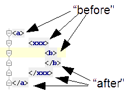
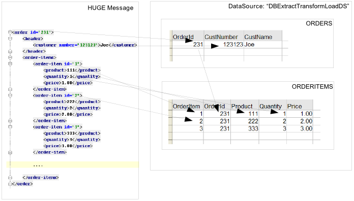

Examples
Examples are always a great place to learn. We have quite a few “general” examples in GitHub, as well as UN/EDIFACT examples in a GitHub repository dedicated to that.
User Guide
- 1 Introduction
- 2 Basics
- 2.1 Basic Processing Model
- 2.2 Simple Example
- 2.3 Smooks Resources (Visitors, etc…)
- 2.4 Smooks Cartridges
- 2.5 Filtering Process Selection (DOM or SAX?)
- 2.6 The Bean Context
- 2.7 Multiple Outputs/Results
- 2.8 Checking the Smooks Execution Process
- 2.9 Terminating the Filtering Process
- 2.10 Global Configurations
- 2.11 Filter Settings
- 2.12 Configuration Modularization
- 3 Consuming Input Data
- 3.1 XML
- 3.2 CSV
- 3.3 Fixed Length Values
- 3.4 EDI
- 3.5 JSON
- 3.6 YAML
- 3.7 Java to Java
- 3.8 Java to Text (XML, CSV, EDI etc)
- 3.9 String manipulation functions for readers
- 4 Validating Data
- 5 Producing Output Data
- 5.1 Java Binding
- 5.1.1 Java Binding Overview
- 5.1.2 When to use Smooks Java Binding
- 5.1.3 Basics Of Java Binding
- 5.1.4 Java Binding Configuration Details
- 5.1.4.1 Data Decoders/Encoders
- 5.1.4.2 Bean Retention
- 5.1.4.3 Preprocessing Binding Values
- 5.1.4.4 Creating Beans Using a Factory
- 5.1.4.5 Binding Key Value Pairs into Maps
- 5.1.4.6 Virtual Object Models (Maps & Lists)
- 5.1.4.7 Merging Multiple Data Entities Into a Single Binding
- 5.1.4.8 Direct Value Binding
- 5.1.5 Programmatic Configuration
- 5.1.6 XML to Java Reading and Writing
- 5.1.7 Generating the Smooks Binding Configuration
- 5.1.8 Notes on JavaResult
- 5.2 Templating
- 5.3 Simple Stream Manipulations
- 5.4 Exporting Results
- 5.1 Java Binding
- 6 Enriching Output Data
- 7 Scripting
- 8 Routing Output Data
- 9 Performance Tuning
- 10 Testing
- 11 Common use cases
- 12 Extending Smooks
- 12.1 Configuring Smooks Components
- 12.2 Implementing a Source Reader
- 12.3 Implementing a Fragment Visitor
- 13 Apache Camel Integration
Introduction
Smooks is an extensible framework for building applications for processing XML and non XML data (CSV, EDI, Java etc) using Java.
While Smooks can be used as a lightweight platform on which to build your own custom processing logic for a wide range of data formats, “out of the box” it comes with some very useful features that can be used individually, or seamlessly combined together:
- Java Binding: Populate a Java Object Model from a data source (CSV, EDI, XML, Java etc). Populated object models can be used as a transformation result itself, or can be used by (e.g.) Templating resources for generating XML or other character based results. Also supports Virtual Object Models (Maps and Lists of typed data), which can be used by EL and Templating functionality.
- Transformation: Perform a wide range of Data Transforms - XML to XML, CSV to XML, EDI to XML, XML to EDI, XML to CSV, Java to XML, Java to EDI, Java to CSV, Java to Java, XML to Java, EDI to Java etc.
- Huge Message Processing: Process huge messages (GBs) - Split, Transform and Route message fragments to JMS, File, Database etc destinations.
- Message Enrichment: Enrich a message with data from a Database, or other Datasources.
- Complex Message Validation: Rules based fragment validation.
- ORM Based Message Persistence: Use an entity persistence framework (like Ibatis, Hibernate or any JPA compatible framework) to access a database and use it’s query language or CRUD methods to read from it or write to it. Use custom Data Access Objects (DAO’s) to access a database and use it’s CRUD methods to read from it or write to it.
- Combine: Perform Extract Transform Load (ETL) operations by leveraging Smooks’ Transformation, Routing and Persistence functionality.
Why Smooks was Created
Smooks started life as a transformation solution. The main goal was a solution in which one could perform “fragment based transforms” on a message. Supporting fragment-based transformation opened up the possibility of mixing and matching different technologies within the context of a single transformation. This meant that one could use different technologies for transforming different fragments of a message, depending on the type of transformation required by the fragment in question.
In the process of building this fragment based transformation solution, we realized that we were actually building a much more general fragment based processing solution. We were building a solution that supported targeting of custom Visitor logic, of any kind, at fragments of a message. We realized that this Visitor logic did not need to be restricted to the realm of message transformation. We could implement Visitor logic to perform all sorts of operations on message fragments (and therefore a message as a whole). Up to the point of writing, Smooks has support for the following forms of fragment based message processing:
- Templating: Fragment Transforms using XSLT or FreeMarker, with the ability to be extended to use other technologies.
- Java Binding: Bind message fragment data into a Java Object model.
- Splitting: Perform complex splitting of messages fragments, routing the split message fragments over a range of different transports/destinations e.g. File, JMS, Database, ESB.
- Enrichment: Enrich message fragments with data from a Database.
- Persistence: Persist message fragment data to a Database using raw SQL, or by reusing your existing JPA, Hibernate or iBATIS resources.
- Validation: Perform basic or complex validation on message fragment data. This is more than simple type/value-range validation. Complex rules based validation is also possible.
Smooks now also supports a wide range of message source formats - XML, EDI, JSON, CSV, Java (Java to Java!). Smooks has a pluggable Reader interface which allows you to plug in a Reader implementation for any data format.
Fragment-Based Data Processing with Smooks
The primary design goals of Smooks were to provide a framework within which fragment-based Data Processing could be performed on hierarchical data (XML and non-XML) using existing data processing technologies (such as XSLT, raw Java, Groovy script), providing a degree of isolation between the different technologies.
Visitor logic targets a message fragment via the “selector” value on the Visitor logic’s resource configuration. The targeted message fragment can take in as much or as little of the message as you like. A message fragment is identified by the name of the Element enclosing the fragment. To target a resource at “the whole message” you simply target it at the root fragment using the root Element’s name as the selector, or through the special “$document” selector.
You may wonder why we use and mix the terms “Fragment” and “Element”. Well the difference is a little subtle and often quite irrelevant, so it’s often OK to interchange the terms. Anyway, an “Element” is just the outer node (only) of a “Fragment”. A “Fragment” is an “Element” and all it’s child Elements and content nodes (text etc). So, when a piece of Visitor logic is targeted at a message fragment, that typically means that that piece of logic can not only process (transform etc) the outer “Element” of that fragment, but can also perform processing on child nodes i.e. the fragment as a whole.
What’s new in Smooks v1.5?
As well as a ton of bug fixes, Smooks v1.5 includes the following new highlight features:
- EDI:
- [MILYN-567] Simplify EDI Directories lookup. (By: Renat Zubairov)
- [MILYN-570] Namespace aware EDI and UN/EDIFACT Readers i.e. generation of namespaced event streams. (By: Renat Zubairov)
- [MILYN-585] XML Schema generation in ECT. The generated XSDs can validate the namespaced XML event stream generated by the UNEdifactReader (see MILYN-570 above) (By: Renat Zubairov)
- Java Binding
- [MILYN-240] (Docs) Support for XML Reading and Writing through a new XMLBinding class. Prior to Smooks v1.5, the
- [MILYN-240] (Docs) Support for XML Reading and Writing through a new XMLBinding class. Prior to Smooks v1.5, the
- Flat File Data Support
- [MILYN-592] Simplify the process of implementing a Reader for Flat File data formats (flat record based formats). This includes support for simple Java binding configurations directly on the reader (SINGLE, LIST, MAP). Also includes support for “variable field records”. The CSV reader now uses this API. (By: Tom Fennelly)
- [MILYN-593] Create a Regex based Flat File reader. Allows you to process any flat file structure, parsing the record fields using a regular expression. (By: Tom Fennelly)
- Camel/ServiceMix/OSGi Support
- Various bug fixes and enhancements. (By: Daniel Bevenius and Sorin Silaghi)
- Project Housekeeping
See the full list of features and fixes…
Getting Started
The easiest way to get started with Smooks is to download and try out some of the examples. The examples are the perfect base upon which to integrate Smooks into your application.
FAQs
See the FAQ.
Maven
For details on how to integrate Smooks into your project via Maven, see the Maven guide.
Ant
For details on how to integrate Smooks into your project via Ant, see the Ant guide.
Basics
The most commonly accepted definition of Smooks would be that it is a “Transformation Engine”. However, at its core, Smooks makes no mention of “data transformation”. The smooks-core codebase is designed simply to support hooking of custom “Visitor” logic into an Event Stream produced by a data Source of some kind (XML, CSV, EDI, Java etc). As such, smooks-core is simply a “Structured Data Event Stream Processor”.
Of course, the most common application of this will be in the creation of Transformation solutions i.e. implementing Visitor logic that uses the Event Stream produced from a Source message to produce a Result of some other kind. The capabilities in smooks-core enable more than this however. We have implemented a range of other solutions based on this processing model:
- Java Binding: Population of a Java Object Model from the Source message.
- Message Splitting & Routing: The ability to perform complex splitting and routing operations on the Source message, including routing to multiple destinations concurrently, as well as routing different data formats concurrently (XML, EDI, CSV, Java etc).
- Huge Message Processing: The ability to declaratively consume (transform, or split and route) huge message without writing lots of high maintenance code.
Basic Processing Model
As stated above, the basic principal of Smooks is to take a data Source of some kind (e.g. XML) and from it generate an Event Stream, to which you apply Visitor logic to produce a Result of some other kind (e.g. EDI).
Many different data source and result types are supported, meaning many different transformation types are supported, including (but not limited to):
- XML to XML
- XML to Java
- Java to XML
- Java to Java
- EDI to XML
- EDI to Java
- Java to EDI
- CSV to XML
- CSV to …
- etc etc
In terms of the Event Model used to map between the Source and Result, Smooks currently supports DOM and SAX Event Models. We will concentrate on the SAX event model here. The SAX event model is based on the hierarchical SAX events generated from an XML Source (startElement, endElement etc). However, this event model can be just as easily applied to other structured/hierarchical data Sources (EDI, CSV, Java etc).
The most important events (typically) are the visitBefore and visitAfter events. The following illustration tries to convey the hierarchical nature of these events.

Simple Example
In order to consume the SAX Event Stream produced from the Source message, you need to implement one or more of the SAXVisitor interfaces (depending on which events you need to consume).
The following is a very simple example of how you implement Visitor logic and target that logic at the visitBefore and visitAfter events for a specific element in the Event Stream. In this case we target the Visitor logic at the
As you can see, the Visitor implementation is very simple; one method implementation per event. To target this implementation at the
The Smooks code to execute this is very simple:
Smooks smooks = new Smooks("/smooks/echo-example.xml");
smooks.filterSource(new StreamSource(inputStream));
Note that in this case we don’t produce a Result. Also note that we don’t interact with the “execution” of the filtering process in any way, since we don’t explicitly create an ExecutionContext and supply it to the Smooks.filterSource method call.
This example illustrated the lower level mechanics of the Smooks Programming Model. In reality however, users are not going to want to solve their problems by implementing lots Java code themselves from scratch. For this reason, Smooks is shipped with quite a lot of pre-built functionality i.e. ready to use Visitor logic. We bundle this Visitor logic based on functionality and we call the bundles “Cartridges”.
Smooks Resources (Visitors, etc…)
Smooks executes by taking a data stream of one form or another (XML, EDI, Java, JSON, CSV, etc…) and from it, it generates an event stream, which it uses to fire different types of “Visitor logic” (Java, Groovy, FreeMarker, XSLT etc). The result of this process can be to produce a new data stream in a different format (i.e. a traditional “transformation”), bind data from the source message data stream to java objects to produce a populated Java object graph (i.e. a “Java binding”), produce many smaller messages (message splitting) etc.
At a core level (inside Smooks), it just sees all of the “Visitor logic” etc as “Smooks Resources” (SmooksResourceConfiguration) that are configured to be applied based on an event selector (i.e. event from the source data event stream). This is a very generic processing model and makes a lot of sense from the point of view of Smooks Core and it’s architecture (maintainance etc). However, it can be a little too generic from a usability perspective because everything looks very similar in the configuration. To help with this, Smooks v1.1 introduced an “Extensible Configuration Model” feature. This allows specific resource types (Javabean binding configs, FreeMarker template configs etc) to be specified in the configuration using dedicated XSD namespaces of their own.
Example (Java Binding Resource):
<jb:bean beanId="lineOrder" class="example.trgmodel.LineOrder" createOnElement="example.srcmodel.Order">
<jb:wiring property="lineItems" beanIdRef="lineItems" />
<jb:value property="customerId" data="header/customerNumber" />
<jb:value property="customerName" data="header/customerName" />
</jb:bean>
Example (FreeMarker Template Resource):
<ftl:freemarker applyOnElement="order-item">
<ftl:template><!-- <item>
<id>${.vars["order-item"].@id}</id>
<productId>${.vars["order-item"].product}</productId>
<quantity>${.vars["order-item"].quantity}</quantity>
<price>${.vars["order-item"].price}</price>
</item>
-->
</ftl:template>
</ftl:freemarker>
When comparing the above examples to the pre Smooks v1.1 equivalents you can see that:
- The user now has a more strongly typed configuration that is domain specific in each case (and so easier to read).
- Because the v1.1+ configurations are XSD based, the user also gets autocompletion support from their IDE.
- No longer any need to define the actual handler for the given resource type e.g. the BeanPopulator for java bindings.
Visitors
Central to how Smooks works is the concept of Visitor logic. A Visitor is a simple piece of Java logic that can perform a specific task on the message fragment at which it is targeted e.g. apply an XSLT, bind fragment data in a Java object, perform some validation on the message fragment etc etc.
Implementing a Visitor is quite simple. You have the choice of supporting your logic through either the SAX and/or DOM Filters by implementing one or both of the following interfaces:
Selectors
Smooks Resource “selectors” are a very important part of Smooks and how it works. They instruct Smooks as to which message fragments to apply configured Visitor logic to, as well working as a simple opaque lookup value for non-Visitor logic.
When the resource is a Visitor implementation (e.g. <jb:bean>, <ftl:freemarker> etc), Smooks will interpret the selector as an XPath (like) selector. There are a number of things to be aware of:
- The order in which the XPath expression is applied is the reverse of normal order e.g. as applied by an XSLT. Smooks works backwards from the targeted fragment element, as opposed to forwards from the message root element.
- Not all of the XPath specification is supported. Selector supports the following XPath syntax:
- ‘text()’ and attribute (e.g. ‘@x’) value selectors, with both Literal and Numeric e.g. “a/b[text() = ‘abc’]”, “a/b[text() = 123]”, “a/b[@id = ‘abc’]”, “a/b[@id = 123]”.
- Note: ‘text()’ is only supported on the last selector step in an expression e.g. “a/b[text() = ‘abc’]” is legal while “a/b[text() = ‘abc’]/c” is illegal.
- Note: ‘text()’ is only supported on SAXVisitor implementations that implement the SAXVisitAfter interface only. If the SAXVisitor implements the SAXVisitBefore or SAXVisitChildren interfaces, an error will result.
- “And” and “Or” logical operations e.g. “a/b[text() = ‘abc’ and @id = 123]”, “a/b[text() = ‘abc’ or @id = 123]”
- Namespaces on both the elements and attributes e.g. “a:order/b:address[@b:city = ‘NY’]”.
- Note: This requires the namespace prefix-to-URI mappings to be defined. If not defined, a configuration error will result. See the Namespace Declaration section for more details.
- Supports “=” (equals), “!=” (not equals), “<” (less than), “>” (greater than).
- Index selectors e.g. “a/b[3]”
- ‘text()’ and attribute (e.g. ‘@x’) value selectors, with both Literal and Numeric e.g. “a/b[text() = ‘abc’]”, “a/b[text() = 123]”, “a/b[@id = ‘abc’]”, “a/b[@id = 123]”.
Namespace Declaration
Namespace prefix-to-URI mappings are configured through the core configuration namespace. These configurations are then available when resolving namespaced selectors.
Example:
<?xml version="1.0"?>
<smooks-resource-list xmlns="http://www.milyn.org/xsd/smooks-1.1.xsd"
xmlns:core="http://www.milyn.org/xsd/smooks/smooks-core-1.4.xsd">
<core:namespaces>
<core:namespace prefix="a" uri="http://a"/>
<core:namespace prefix="b" uri="http://b"/>
<core:namespace prefix="c" uri="http://c"/>
<core:namespace prefix="d" uri="http://d"/>
</core:namespaces>
<resource-config selector="c:item[@c:code = '8655']/d:units[text() = 1]">
<resource>com.acme.visitors.MyCustomVisitorImpl</resource>
</resource-config>
</smooks-resource-list>
Smooks Cartridges
The basic functionality of Smooks Core can be extended through the creation of what we call a “Smooks Cartridge”. A Cartridge is simply a Java archive (jar) containing reusable Content Handlers (Visitor Logic). A Smooks Cartridge should provide “ready to use” support for a specific type of XML analysis or transformation.
For a full list of the Cartridges supported by Smooks, see the Cartridges list.
Filtering Process Selection (DOM or SAX?)
This is done by Smooks based on the following criteria:
- If all Visitor resources* implement only the DOM Visitor interfaces (DOMElementVisitor or SerializationUnit), then the DOM processing model is selected.
- If all Visitor resources* implement only the SAX Visitor interface (SAXElementVisitor), then the SAX processing model is selected.
- If all Visitor resources* implement both the DOM and SAX Visitor interfaces, then the SAX processing model is selected, unless the Smooks resource configuration contains <core:filterSettings type=”DOM” /> (see below).
* not including non element Visitor resources, like readers for example.
The following is an example of setting the filter type to DOM (SAX is the default):
<?xml version="1.0"?>
<smooks-resource-list xmlns="http://www.milyn.org/xsd/smooks-1.1.xsd"
xmlns:core="http://www.milyn.org/xsd/smooks/smooks-core-1.4.xsd">
<core:filterSettings type="DOM" />
</smooks-resource-list>
More information on global filtering settings can be found in the Filter Settings section.
Mixing DOM and SAX
The DOM processing model has the obvious:
- Advantage of being easier to work with on a code level, allowing node traversal etc. It also makes it a lot easier to take advantage of Scripting and Templating engines that have built in support for utilizing DOM structures (e.g. FreeMarker and Groovy).
- Disadvantage of being constrained by memory i.e. if you have huge messages, then you typically cannot use a DOM processing model.
Smooks v1.1 added support for mixing these 2 models through the DomModelCreator class. When used with SAX filtering, this Visitor will construct a DOM Fragment of the visited element. This allows DOM utilities to be used in a Streaming environment.
When 1+ models are nested inside each other, outer models will never contain data from the inner models i.e. the same fragments will never coexist inside two models.
Take the following message as an example:
<order id="332">
<header>
<customer number="123">Joe</customer>
</header>
<order-items>
<order-item id='1'>
<product>1</product>
<quantity>2</quantity>
<price>8.80</price>
</order-item>
<order-item id='2'>
<product>2</product>
<quantity>2</quantity>
<price>8.80</price>
</order-item>
<order-item id='3'>
<product>3</product>
<quantity>2</quantity>
<price>8.80</price>
</order-item>
</order-items>
</order>
The DomModelCreator can be configured in Smooks to create models for the “order” and “order-item” message fragments:
<resource-config selector="order,order-item">
<resource>org.milyn.delivery.DomModelCreator</resource>
</resource-config>
In this case, the “order” model will never contain “order-item” model data (order-item elements are nested inside the order element). The in memory model for the “order” will simply be:
<order id='332'>
<header>
<customer number="123">Joe</customer>
</header>
<order-items/>
</order>
Added to this is the fact that there will only ever be 0 or 1 “order-item” models in memory at any given time, with each new “order-item” model overwriting the previous “order-item” model. All this ensures that the memory footprint is kept to a minimum.
Because the Smooks processing model is event driven via the message content (i.e. you can hook in Visitor logic to be applied at different points while Smooks filters/streams the message), you can take advantage of this mixed DOM and SAX processing model.
See the following examples that utilize this mixed DOM + SAX approach:
The Bean Context
The bean context (also known as “bean map”) is a container for Objects which can be accessed within the Smooks filter process. One bean context is created per execution context (i.e. per Smooks.filterSource operation). Every bean, created by the cartridge, is put into this context under its beanId. If you want the contents of the bean context to be returned at the end of the Smooks.filterSource process, supply a org.milyn.delivery.java.JavaResult object in the call to Smooks.filterSource method. The following example illustrates this principal:
//Get the data to filter
StreamSource source = new StreamSource(getClass().getResourceAsStream("data.xml"));
//Create a Smooks instance (cachable)
Smooks smooks = new Smooks("smooks-config.xml");
//Create the JavaResult, which will contain the filter result after filtering
JavaResult result = new JavaResult();
//Filter the data from the source, putting the result into the JavaResult
smooks.filterSource(source, result);
//Getting the Order bean which was created by the JavaBean cartridge
Order order = (Order)result.getBean("order");
If you need to access the bean context beans at runtime (e.g. from a customer Visitor implementation), you do so via the BeanContext object. The “BeanContext” object can be retrieved from the ExecutionContext via the getBeanContext() method. When adding or retrieving objects from the BeanContext you should first retrieve a BeanId object from the BeanIdStore. The BeanId object is a special key that ensures higher performance then String keys, however String keys are also supported. The BeanIdStore must be retrieved from the ApplicationContext via the getBeanIdStore() method. A BeanId object can be created by calling the register(“beanId name”) method. If you know that the BeanId is already registered then you can retrieve it by calling the getBeanId(“beanId name”) method. BeanId objects are ApplicationContext scoped objects. You normally register them in the initialization method of your custom visitor implemention and then put them as properties in the visitor object. You can then use them in the ‘visitBefore’ and ‘visitAfter’ methods. The BeanId objects and the BeanIdStore are thread safe.
Pre Installed Beans
A number of pre-installed beans are available in the Bean Context at runtime:
- PUUID: UniqueId bean. This bean provides unique identifiers for the filtering ExecutionContext. See Javadoc.
- PTIME: Time bean. This bean provides time based data for the filtering ExecutionContext. See Javadoc.
The following are examples of how each of these would be used in a FreeMarker template.
Unique ID of the ExecutionContext (message being filtered):
${PUUID.execContext}
Random Unique ID:
${PUUID.random}
Message Filtering start time (in milliseconds):
${PTIME.startMillis}
Message Filtering start time (in nanoseconds):
${PTIME.startNanos}
Message Filtering start time (Date):
${PTIME.startDate}
Time now (in milliseconds):
${PTIME.nowMillis}
Time now (in nanoSeconds):
${PTIME.nowNanos}
Time now (Date):
${PTIME.nowDate}
Multiple Outputs/Results
This section looks at the different ways in which Smooks can produce “Output” from the Filtering process.
Smooks can “present” output to the outside world in the following ways:
- “In-Result” Instances: Returned in the Result instances passed to the Smooks.filterSource method.
- During the Filtering Process: Output generated and sent to external endpoints (ESB Services, Files, JMS Destinations, DBs etc) during the Filtering process. This is where message fragment events are used to trigger routing of message fragments to external endpoints e.g. when Splitting and Routing fragments of a message.
A very important point to remember is that Smooks can generate output/results in either or both of the above ways, all in a single filtering pass of a message stream. It doesn’t need to filter a message stream multiple times in order to generate multiple outputs/results. This is critical in terms of performance/efficiency.
“In-Result” Instances
A look at the Smooks API reveals that Smooks can be supplied with multiple Result instances:
public void filterSource(Source source, Result… results) throws SmooksException
In terms of the types of Result that Smooks can work with, we’re talking about the standard JDK StreamResult and DOMResult types, as well as some Smooks “specializations”:
- JavaResult: Result type for capturing the contents of the Smooks Java Bean context.
- ValidationResult: Result type for capturing Validation Results.
- StringResult: Simple Result type used mainly when writing tests. Simple StreamResult extension wrapping a StringWriter.
This is obviously the most common method of capturing output from the Smooks filtering process.
NOTE:
As yet, Smooks does not support capturing of Result data to multiple Result instances of the same type. For example, you can specify multiple StreamResult instances in the Smooks.filterSource method call, but Smooks will only output to one of these StreamResult instances (the first one).
StreamResults / DOMResults
These Result types receive “special” attention from Smooks. As Smooks process a message Source, it produces a stream of events. If a StreamResult or DOMResult is supplied in the Smooks.filterSource call, Smooks will (by default - see default.serialization.on global parameter) serialize the event stream (produced from the Source) to the supplied StreamResult or DOMResult as XML. Obviously, Visitor logic can be configured/applied to the event stream before serialization.
This is the mechanism used to perform a standard 1-input/1-xml-output character based transformation.
During the Filtering Process
Smooks is also able to generate different types of output during the Smooks.filterSource process i.e. as it is filtering the message event stream and before it reaches the end of the message. A classic example of this being when it is used to split and route message fragments to different types of endpoints for processing by other processes.
So one might wonder why Smooks doesn’t “batch up” the message data and produce all the results/outputs after filtering the complete message. Well the answer is straightforward enough:
- Performance!!
- It’s just easier this way because you can utilize the message event stream to trigger the fragment transform and routing operations.
Consider an Order message that has hundreds of thousands (or millions) of Order Items that need to be split out and routed to different departments in different formats, based on different criteria. The only way of handing messages of this magnitude is by streaming the process.
Checking the Smooks Execution Process
As Smooks performs the filtering process (processing the Event Stream generated from the Source), it publishes events that can be captured and programmatically analyzed during/after execution.? The easiest way to generate an execution report out of Smooks is to configure the ExecutionContext to generate a report. Smooks supports generation of a HTML report via the HtmlReportGenerator class.
The following is an example of how to configure Smooks to generate a HTML report.
Smooks smooks = new Smooks("/smooks/smooks-transform-x.xml");
ExecutionContext execContext = smooks.createExecutionContext();
execContext.setEventListener(new HtmlReportGenerator("/tmp/smooks-report.html"));
smooks.filterSource(execContext, new StreamSource(inputStream), new StreamResult(outputStream));
The HtmlReportGenerator is a very useful tool during development with Smooks. It’s the nearest thing Smooks currently has to an IDE based Debugger (which we hope to have in a future release). It can be very useful for diagnosing issues, or simply as a tool for comprehending a Smooks transformation.
An example HtmlReportGenerator report can be seen online here.
Of course you can also write and use your own ExecutionEventListener implementations.
Terminating the Filtering Process
Sometimes you want/need to terminate the Smooks filtering process before reaching the end of a message. This can be done by using a
The following is an example configuration that terminates filtering at the end of the customer fragment of the message:
<?xml version="1.0"?>
<smooks-resource-list xmlns="http://www.milyn.org/xsd/smooks-1.1.xsd"
xmlns:core="http://www.milyn.org/xsd/smooks/smooks-core-1.4.xsd">
<!-- Visitors... -->
<core:terminate onElement="customer"/>
</smooks-resource-list>
The default behavior is to terminate at the end of the targeted fragment (i.e. on the “visitAfter” event). To terminate at the start (on the “visitBefore” event):
<?xml version="1.0"?>
<smooks-resource-list xmlns="http://www.milyn.org/xsd/smooks-1.1.xsd"
xmlns:core="http://www.milyn.org/xsd/smooks/smooks-core-1.4.xsd">
<!-- Visitors... -->
<core:terminate onElement="customer" terminateBefore="true"/>
</smooks-resource-list>
Global Configurations
Global configuration settings are, as the name implies, configuration options that can be set once and be applied to all resources in a configuration.
Smooks supports two types of globals, default properties and global parameters:
- Global Configuration Parameters: Every
in a Smooks configuration can specify elements for configuration parameters. These parameter values are available at runtime through the [SmooksResourceConfiguration](/javadoc/v1.7.1/smooks/org/milyn/cdr/SmooksResourceConfiguration.html), or are reflectively injected through the **@ConfigParam** annotation. Global Configuration Parameters are parameters that are defined centrally (see below) and are accessible to all runtime components via the [ExecutionContext](/javadoc/v1.7.1/smooks/org/milyn/container/ExecutionContext.html) (Vs the [SmooksResourceConfiguration](/javadoc/v1.7.1/smooks/org/milyn/cdr/SmooksResourceConfiguration.html)). More on this in the following sections. - Default Properties: Specify default values for
attributes. These defaults are automatically applied to [SmooksResourceConfigurations](/javadoc/v1.7.1/smooks/org/milyn/cdr/SmooksResourceConfiguration.html) when their corresponding does not specify the attribute. More on this in the following section.
Global Configuration Parameters
Global properties differ from the default properties in that they are not specified on the root element and are not automatically applied to resources.
Global parameters are specified in a <params> element:
<params>
<param name="xyz.param1">param1-val</param>
</params>
Global Configuration Parameters are accessible via the ExecutionContext e.g.:
public void visitAfter(final Element element, final ExecutionContext executionContext) throws SmooksException {
String param1 = executionContext.getConfigParameter("xyz.param1", "defaultValueABC");
....
}
Default Properties
Default properties are properties that can be set on the root element of a Smooks configuration and have them applied to all resource configurations in smooks-conf.xml file. For example, if you have a resource configuration file in which all the resource configurations have the same selector value, you could specify a default-selector=order to save specifying the selector on on every resource configuration:
<?xml version="1.0"?>
<smooks-resource-list xmlns="http://www.milyn.org/xsd/smooks-1.1.xsd"
xmlns:xsl="http://www.milyn.org/xsd/smooks/xsl-1.1.xsd" default-selector="order">
<resource-config>
<resource>com.acme.VisitorA</resource>
...
</resource-config>
<resource-config>
<resource>com.acme.VisitorB</resource>
...
</resource-config>
<smooks-resource-list>
The following default configuration options are available:
- default-selector: Selector that will be applied to all resource-config elements in the smooks configuration file, where a selector is not defined.
- default-selector-namespace: The default selector namespace, where a namespace is not defined.
- default-target-profile: Default target profile that will be applied to all resources in the smooks configuration file, where a target-profile is not defined.
- default-condition-ref: Refers to a global condition by the conditions id. This condition is applied to resources that define an empty “condition” element (i.e.
) that does not reference a globally defined condition.
Filter Settings
Filtering specific configurations are made through the smooks-core configuration namespace (http://www.milyn.org/xsd/smooks/smooks-core-1.4.xsd) introduced in Smooks v1.3.
An example configuration:
<?xml version="1.0"?>
<smooks-resource-list xmlns="http://www.milyn.org/xsd/smooks-1.1.xsd"
xmlns:core="http://www.milyn.org/xsd/smooks/smooks-core-1.4.xsd">
<core:filterSettings type="SAX" defaultSerialization="true" terminateOnException="true"
readerPoolSize="3" closeSource="true" closeResult="true" rewriteEntities="true" />
<!-- Other visitor configs etc... -->
</smooks-resource-list>
- type Determines the type of processing model that will be used. Either SAX or DOM. Please refer to Filtering Process Selection for more information about the processing models. Default is SAX (default was DOM in Smooks v1.4 and before).
- defaultSerialization: Determines if default serialization should be switched on (default “true”). Default serialization being turned on simply tells Smooks to locate a StreamResult (or DOMResult) in the Result objects provided to the Smooks.filterSource method and to, by default, serialize all events to that Result. This behavior can be turned off using this global configuration parameter and can be overridden on a per fragment basis by targetting a Visitor implementation at that fragment that takes ownership of the Result writer (in the case of SAX filtering), or simply modifies the DOM (in the case of DOM filtering). As an example of this, see the FreeMarkerTemplateProcessor.
- terminateOnException: Determines whether an exception should terminate processing (default “true”).
- closeSource: Close Source instance streams passed to the Smooks.filterSource method (default “true”). The exception here is System.in, which will never be closed.
- closeResult: Close Result streams passed to the Smooks.filterSource method (default “true”). The exception here is System.out and System.err, which will never be closed.
- rewriteEntities: Rewrite XML entities when reading and writing (default serialization) XML.
- readerPoolSize: Reader Pool Size (default 0). Some Reader implementations are very expensive to create (e.g. Xerces). Pooling Reader instances (i.e. reusing) can result in a huge performance improvement, especially when processing lots of “small” messages. The default value for this setting is 0 (i.e. unpooled - a new Reader instance is created for each message). Configure in line with your applications threading model.
Configuration Modularization
Smooks configurations are easily modularized through use of the <import> element. This allows you to split Smooks configurations into multiple reusable configuration files and then compose the top level configurations using the <import> element e.g.
<smooks-resource-list xmlns="http://www.milyn.org/xsd/smooks-1.1.xsd">
<import file="bindings/order-binding.xml" />
<import file="templates/order-template.xml" />
</smooks-resource-list>
You can also inject replacement tokens into the imported configuration by using <param> sub-elements on the <import>. This allows you to make tweaks to the imported configuration.
<!-- Top level configuration... -->
<smooks-resource-list xmlns="http://www.milyn.org/xsd/smooks-1.1.xsd">
<import file="bindings/order-binding.xml">
<param name="orderRootElement">order</param>
</import>
</smooks-resource-list>
<!-- Imported parameterized bindings/order-binding.xml configuration... -->
<smooks-resource-list xmlns="http://www.milyn.org/xsd/smooks-1.1.xsd"
xmlns:jb="http://www.milyn.org/xsd/smooks/javabean-1.5.xsd">
<jb:bean beanId="order" class="org.acme.Order" createOnElement="@orderRootElement@">
.....
</jb:bean>
</smooks-resource-list>
Note how the replacement token injection points are specified using @tokenname@.
Consuming Input Data
Smooks relies on a “Stream Reader” for generating a stream of SAX events from the Source message data stream. A Stream Reader is a class that implements the XMLReader interface (or the SmooksXMLReader interface).
By default, Smooks uses the default XMLReader (XMLReaderFactory.createXMLReader()), but can be easily configured to read non-XML data Sources by configuring a specialized XMLReader:
<?xml version="1.0"?>
<smooks-resource-list xmlns="http://www.milyn.org/xsd/smooks-1.1.xsd">
<reader class="com.acme.ZZZZReader" />
<!--
Other Smooks resources, e.g. <jb:bean> configs for
binding data from the ZZZZ data stream into Java Objects....
-->
</smooks-resource-list>
The reader can also be configured with a set of handlers, features and parameters. Here is a full example configuration.
<reader class="com.acme.ZZZZReader">
<handlers>
<handler class="com.X" />
<handler class="com.Y" />
</handlers>
<features>
<setOn feature="http://a" />
<setOn feature="http://b" />
<setOff feature="http://c" />
<setOff feature="http://d" />
</features>
<params>
<param name="param1">val1</param>
<param name="param2">val2</param>
</params>
</reader>
As you can read in the subchapter of this chapter there are a number of non-XML Readers available with Smooks out of the box.
XML
By default Smooks reads XML data. To set features on the default XML reader, simply omit the class name from the configuration:
<reader>
<features>
<setOn feature="http://a" />
<setOn feature="http://b" />
<setOff feature="http://c" />
<setOff feature="http://d" />
</features>
</reader>
CSV
CSV processing through the CSV Reader is configured through the http://www.milyn.org/xsd/smooks/csv-1.6.xsd configuration namespace.
A simple/basic configuration.
<?xml version="1.0"?>
<smooks-resource-list xmlns="http://www.milyn.org/xsd/smooks-1.1.xsd"
xmlns:csv="http://www.milyn.org/xsd/smooks/csv-1.6.xsd">
<!--
Configure the CSV to parse the message into a stream of SAX events.
-->
<csv:reader fields="firstname,lastname,gender,age,country" separator="|" quote="'" skipLines="1" />
</smooks-resource-list>
The above configuration will generate an event stream of the form:
<csv-set>
<csv-record>
<firstname>Tom</firstname>
<lastname>Fennelly</lastname>
<gender>Male</gender>
<age>21</age>
<country>Ireland</country>
</csv-record>
<csv-record>
<firstname>Tom</firstname>
<lastname>Fennelly</lastname>
<gender>Male</gender>
<age>21</age>
<country>Ireland</country>
</csv-record>
</csv-set>
Defining fields
Fields can be defined in either of 2 ways:
- On the ‘fields’ attribute of the
- As the first record in the message after setting the ‘fieldsInMessage’ attribute of the
The field names must follow the same naming rules like XML element names:
- Names can contain letters, numbers, and other characters
- Names cannot start with a number or punctuation character
- Names cannot start with the letters xml (or XML, or Xml, etc)
- Names cannot contain spaces
By setting the rootElementName and recordElementName attributes you can modify the
Multi Record Field Definitions
All Flat File based reader configurations (including the CSV reader) support Multi Record Field Definitions, which means that the reader can support CSV message streams that contain varying (multiple different types) CSV record types.
Take the following CSV message example:
book,22 Britannia Road,Amanda Hodgkinson
magazine,Time,April,2011
magazine,Irish Garden,Jan,2011
book,The Finkler Question,Howard Jacobson
In this stream, we have 2 record types of “book” and “magazine”. We configure the CSV reader to process this stream as follows:
<csv:reader fields="book[name,author] | magazine[*]" rootElementName="sales" indent="true" />
This reader configuration will generate the following output for the above sample message:
<sales>
<book number="1">
<name>22 Britannia Road</name>
<author>Amanda Hodgkinson</author>
</book>
<magazine number="2">
<field_0>Time</field_0>
<field_1>April</field_1>
<field_2>2011</field_2>
</magazine>
<magazine number="3">
<field_0>Irish Garden</field_0>
<field_1>Jan</field_1>
<field_2>2011</field_2>
</magazine>
<book number="4">
<name>The Finkler Question</name>
<author>Howard Jacobson</author>
</book>
</sales>
Note the sytax in the ‘fields’ attribute. Each record definition is separated by the pipe character ‘|’. Each record definition is constructed as record-name[field-name,field-name]. record-name is matched against the first field in the incoming message and so used to select the appropriate recodr definition to be used for outputting that record. Also note how you can use an astrix character (‘*’) when you don’t want to name the record fields. In this case (as when extra/unexpected fields are present in a record), the reader will generate the output field elements using a generated element name e.g. “field_0”, “field_1” etc. See the “magazine” record in the previous example.
Note: Multi Record Field Definitions are not supported when the fields are defined in the messase (fieldsInMessage=”true”).
String manipulation functions
String manipulation functions can be defined per field. These functions are executed before that the data is converted into SAX events. The functions are defined after field name, separated with a question mark.
<?xml version="1.0"?>
<smooks-resource-list xmlns="http://www.milyn.org/xsd/smooks-1.1.xsd"
xmlns:csv="http://www.milyn.org/xsd/smooks/csv-1.6.xsd">
<csv:reader fields="lastname?trim.capitalize,country?upper_case" />
</smooks-resource-list>
Take a look at the #String manipulation functions for readers chapter for the available functions and how the functions can be chained.
Ignoring Fields
One or more fields of a CSV record can be ignored by specifying the $ignore$ token in the fields configuration value. You can specify the number of fields to be ignored simply by following the $ignore$ token with a number e.g. “$ignore$3” to ignore the next 3 fields. “$ignore$+” ignores all fields to the end of the CSV record.
<?xml version="1.0"?>
<smooks-resource-list xmlns="http://www.milyn.org/xsd/smooks-1.1.xsd"
xmlns:csv="http://www.milyn.org/xsd/smooks/csv-1.6.xsd">
<csv:reader fields="firstname,$ignore$2,age,$ignore$+" />
</smooks-resource-list>
Binding CSV Records to Java
Smooks v1.2 added support for making the binding of CSV records to Java Objects a very trivial task. You no longer need to use the Javabean Cartridge directly (i.e. Smooks main Java binding functionality).
Note: This feature is not supported for Multi Record Field Definitions (see above), or when the fields are defined in the incoming message (fieldsInMessage=”true”).
A Persons CSV record set such as:
Tom,Fennelly,Male,4,Ireland
Mike,Fennelly,Male,2,Ireland
Can be bound to a Person of (no getters/setters):
public class Person {
private String firstname;
private String lastname;
private String country;
private Gender gender;
private int age;
}
public enum Gender {
Male,
Female;
}
Using a config of the form:
<?xml version="1.0"?>
<smooks-resource-list xmlns="http://www.milyn.org/xsd/smooks-1.1.xsd"
xmlns:csv="http://www.milyn.org/xsd/smooks/csv-1.6.xsd">
<csv:reader fields="firstname,lastname,gender,age,country">
<!-- Note how the field names match the property names on the Person class. -->
<csv:listBinding beanId="people" class="org.milyn.csv.Person" />
</csv:reader>
</smooks-resource-list>
To execute this configuration:
Smooks smooks = new Smooks(configStream);
JavaResult result = new JavaResult();
smooks.filterSource(new StreamSource(csvStream), result);
List<Person> people = (List<Person>) result.getBean("people");
Smooks also supports creation of Maps from the CSV record set:
<?xml version="1.0"?>
<smooks-resource-list xmlns="http://www.milyn.org/xsd/smooks-1.1.xsd"
xmlns:csv="http://www.milyn.org/xsd/smooks/csv-1.6.xsd">
<csv:reader fields="firstname,lastname,gender,age,country">
<csv:mapBinding beanId="people" class="org.milyn.csv.Person" keyField="firstname" />
</csv:reader>
</smooks-resource-list>
The above configuration would produce a Map of Person instances, keyed by the “firstname” value of each Person. It would be executed as follows:
Smooks smooks = new Smooks(configStream);
JavaResult result = new JavaResult();
smooks.filterSource(new StreamSource(csvStream), result);
Map<String, Person> people = (Map<String, Person>) result.getBean("people");
Person tom = people.get("Tom");
Person mike = people.get("Mike");
Virtual Models are also supported, so you can define the class attribute as a java.util.Map and have the CSV field values bound into Map instances, which are in turn added to a List or a Map.
Programmatic Configuration
Programmatically configuring the CSV Reader on a Smooks instance is trivial (i.e. no XML required). A number of options are available.
Configuring Directly on the Smooks Instance
The following code configures a Smooks instance with a CSVReader for reading a people record set (see above), binding the record set into a List of Person instances:
Smooks smooks = new Smooks();
smooks.setReaderConfig(new CSVReaderConfigurator("firstname,lastname,gender,age,country")
.setBinding(new CSVBinding("people", Person.class, CSVBindingType.LIST)));
JavaResult result = new JavaResult();
smooks.filterSource(new StreamSource(csvReader), result);
List<Person> people = (List<Person>) result.getBean("people");
Of course configuring the Java Binding is totally optional. The Smooks instance could instead (or in conjunction with) be programmatically configured with other Visitor implementations for carrying out other forms of processing on the CSV record set.
CSV List and Map Binders
If you’re just interested in binding CSV Records directly onto a List or Map of a Java type that reflects the data in your CSV records, then you can use the CSVListBinder or CSVMapBinder classes.
CSVListBinder:
// Note: The binder instance should be cached and reused...
CSVListBinder binder = new CSVListBinder("firstname,lastname,gender,age,country", Person.class);
List<Person> people = binder.bind(csvStream);
CSVMapBinder:
// Note: The binder instance should be cached and reused...
CSVMapBinder binder = new CSVMapBinder("firstname,lastname,gender,age,country", Person.class, "firstname");
Map<String, Person> people = binder.bind(csvStream);
If you need more control over the binding process, revert back to the lower level APIs:
Fixed Length Values
Fixed Length processing through the Fixed Length Reader is configured through the http://www.milyn.org/xsd/smooks/fixed-length-1.3.xsd configuration namespace.
A simple/basic configuration.
<?xml version="1.0"?>
<smooks-resource-list xmlns="http://www.milyn.org/xsd/smooks-1.1.xsd"
xmlns:fl="http://www.milyn.org/xsd/smooks/fixed-length-1.3.xsd">
<!-- Configure the Fixed length to parse the message into a stream of SAX events. -->
<fl:reader fields="firstname[10],lastname[10],gender[1],age[2],country[2]" skipLines="1" />
</smooks-resource-list>
Example input file.
#HEADER
Tom Fennelly M 21 IE
Maurice Zeijen M 27 NL
The above configuration will generate an event stream of the form:
<set>
<record>
<firstname>Tom </firstname>
<lastname>Fennelly </lastname>
<gender>M</gender>
<age> 21</age>
<country>IE</country>
</record>
<record>
<firstname>Maurice </firstname>
<lastname>Zeijen </lastname>
<gender>M</gender>
<age>27</age>
<country>NL</country>
</record>
</set>
Defining fields
Fields are defined in the ‘fields’ attribute as a comma separated list of names and field lengths. The field lengths must be defined between the brackets after the field name (see the example above).
The field names must follow the same naming rules like XML element names:
- Names can contain letters, numbers, and other characters
- Names cannot start with a number or punctuation character
- Names cannot start with the letters xml (or XML, or Xml, etc)
- Names cannot contain spaces
By setting the rootElementName and recordElementName attributes you can modify the
String manipulation functions
String manipulation functions can be defined per field. These functions are executed before that the data is converted into SAX events. The functions are defined after the field length definitiona and are optionally separated with a question mark.
<?xml version="1.0"?>
<smooks-resource-list xmlns="http://www.milyn.org/xsd/smooks-1.1.xsd"
xmlns:fl="http://www.milyn.org/xsd/smooks/fixed-length-1.3.xsd">
<!-- Configure the fixed length reader to parse the message into a stream of SAX events. -->
<fl:reader fields="firstname[10]?trim,lastname[10]trim.capitalize,gender[1],age[2],country[2]" skipLines="1" />
</smooks-resource-list>
Take a look at the #String manipulation functions for readers chapter for the available functions and how the functions can be chained.
Ignoring Fields
Characters ranges of a fixed length record can be ignored by specifying the $ignore$[10] token in the fields configuration value. You must specify the number of characters that need be ignored, just as a normal field.
<?xml version="1.0"?>
<smooks-resource-list xmlns="http://www.milyn.org/xsd/smooks-1.1.xsd"
xmlns:fl="http://www.milyn.org/xsd/smooks/fixed-length-1.3.xsd">
<fl:reader fields="firstname,$ignore$[2],age,$ignore$[10]" />
</smooks-resource-list>
Binding fixed length Records to Java
Smooks v1.2 has added support for making the binding of fixed length records to Java Objects a very trivial task. You don’t need to use the Javabean Cartridge directly (i.e. Smooks main Java binding functionality).
A Persons fixed length record set such as:
Tom Fennelly M 21 IE
Maurice Zeijen M 27 NL
Can be bound to a Person of (no getters/setters):
public class Person {
private String firstname;
private String lastname;
private String country;
private String gender;
private int age;
}
Using a config of the form:
<?xml version="1.0"?>
<smooks-resource-list xmlns="http://www.milyn.org/xsd/smooks-1.1.xsd"
xmlns:fl="http://www.milyn.org/xsd/smooks/fixed-length-1.3.xsd">
<fl:reader fields="firstname[10]?trim,lastname[10]?trim,gende[1],age[3]?trim,country[2]">
<!-- Note how the field names match the property names on the Person class. -->
<fl:listBinding beanId="people" class="org.milyn.fixedlength.Person" />
</fl:reader>
</smooks-resource-list>
To execute this configuration:
Smooks smooks = new Smooks(configStream);
JavaResult result = new JavaResult();
smooks.filterSource(new StreamSource(fixedLengthStream), result);
List<Person> people = (List<Person>) result.getBean("people");
Smooks also supports creation of Maps from the fixed length record set:
<?xml version="1.0"?>
<smooks-resource-list xmlns="http://www.milyn.org/xsd/smooks-1.1.xsd"
xmlns:csv="http://www.milyn.org/xsd/smooks/csv-1.6.xsd">
<csv:reader fields="firstname,lastname,gender,age,country">
<csv:mapBinding beanId="people" class="org.milyn.csv.Person" keyField="firstname" />
</csv:reader>
</smooks-resource-list>
The above configuration would produce a Map of Person instances, keyed by the “firstname” value of each Person. It would be executed as follows:
Smooks smooks = new Smooks(configStream);
JavaResult result = new JavaResult();
smooks.filterSource(new StreamSource(fixedLengthStream), result);
Map<String, Person> people = (Map<String, Person>) result.getBean("people");
Person tom = people.get("Tom");
Person mike = people.get("Maurice");
Virtual Models are also supported, so you can define the class attribute as a java.util.Map and have the fixed length field values bound into Map instances, which are in turn added to a List or a Map.
Programmatic Configuration
Programmatically configuring the FixedLengthReader on a Smooks instance is trivial (i.e. no XML required). A number of options are available.
Configuring Directly on the Smooks Instance
The following code configures a Smooks instance with a FixedLengthReader for reading a people record set (see above), binding the record set into a List of Person instances:
Smooks smooks = new Smooks();
smooks.setReaderConfig(new CSVReaderConfigurator("firstname,lastname,gender,age,country")
.setBinding(new CSVBinding("people", Person.class, CSVBindingType.LIST)));
JavaResult result = new JavaResult();
smooks.filterSource(new StreamSource(csvReader), result);
List<Person> people = (List<Person>) result.getBean("people");
Of course configuring the Java Binding is totally optional. The Smooks instance could instead (or in conjunction with) be programmatically configured with other Visitor implementations for carrying out other forms of processing on the fixed length record set.
Fixed length List and Map Binders
If you’re just interested in binding fixed length Records directly onto a List or Map of a Java type that reflects the data in your fixed length records, then you can use the FixedLengthListBinder or FixedLengthMapBinder classes.
FixedLengthListBinder:
// Note: The binder instance should be cached and reused...
FixedLengthListBinder binder = new FixedLengthListBinder("firstname[10]?trim,lastname[10]?trim,gender[1],age[3]?trim,country[2]", Person.class);
List<Person> people = binder.bind(fixedLengthStream);
FixedLengthMapBinder:
// Note: The binder instance should be cached and reused...
FixedLengthMapBinder binder = new FixedLengthMapBinder("firstname[10]?trim,lastname[10]?trim,gender[1],age[3]?trim,country[2]", Person.class, "firstname");
Map<String, Person> people = binder.bind(fixedLengthStream);
If you need more control over the binding process, revert back to the lower level APIs:
EDI
EDI processing in Smooks supported through the http://www.milyn.org/xsd/smooks/edi-1.4.xsd configuration namespace.
The following is a simple/basic configuration:
<?xml version="1.0"?>
<smooks-resource-list xmlns="http://www.milyn.org/xsd/smooks-1.1.xsd"
xmlns:edi="http://www.milyn.org/xsd/smooks/edi-1.4.xsd">
<!-- Configure the EDI Reader to parse the message stream into a stream of SAX events. -->
<edi:reader mappingModel="edi-to-xml-order-mapping.xml" validate="false"/>
</smooks-resource-list>
- mappingModel: Defines the EDI Mapping Model configuration for processing the EDI message stream to a stream of SAX events that can be processed by Smooks.
- validate: This attribute turns on/off datatype validation in the EDI Parser. Validation is on by default. It makes sense to turn datatype validation off on the EDI Reader if the EDI data is being bound into a Java Object model (using Java Bindings ala
EDI Mapping Models
The EDI to SAX Event mapping is performed based on an “Mapping Model” supplied to the EDI Reader. This model must be based on the http://www.milyn.org/xsd/smooks/edi-1.4.xsd schema. From this schema, you can see that segment groups are supported (nested segments), including groups within groups, repeating segments and repeating segment groups. Be sure to review the schema.
The following illustration attempts to create a visualisation of the mapping process. The “input-message.edi” file specifies the EDI input, “edi-to-xml-order-mapping.xml” describes how to map that EDI message to SAX events and “expected.xml” illustrates the XML event stream that would result from applying the mapping.

So the above illustration attempts to highlight the following:
- How the message delimiters (segment, field, component and sub-component) are specified in the mapping. In particular, how special characters like the linefeed character are specified using XML Character References.
- How segment groups (nested segments) are specified. In this case the first 2 segments are part of a group.
- How the actual field, component and sub-component values are specified and mapped to the target SAX events (to generate the XML).
Segment Cardinality
What’s not shown above is how the <medi:segment> element supports the 2 optional attributes “minOccurs” and “maxOccurs” (default value of 1 in both cases). These attributes can be used to control the optional and required characteristics of a segment. A maxOccurs value of -1 indicates that the segment can repeat any number of times in that location of the EDI message (unbounded).
Segment Groups
Segment groups can be added using the <segmentGroup> element. A Segment group is matched by the first segment in the group. A Segment Group can contain nested <segmentGroup> elements, but the first element in a <segmentGroup> must be a <segment>. <segmentGroup> elements support minOccurs/maxOccurs cardinality. They also support an optional “xmlTag” attribute, when if present will result in the XML generated by a matched segment group being inserted inside an element having the name of the xmlTag attribute value.
Segment Matching
Segments are matched in one of 2 ways:
- By an exact match on the segment code (segcode).
- By a regex pattern match on the full segment, where the segcode attribute defines the regex pattern (e.g. segcode=”1A\*a.*”).
Required Values & Truncation
- required: <field>, <component> and <sub-component> configurations support a “required” attribute, which flags that
, or as requiring a value.
By default, values are not required (fields, components and sub-components).
- truncatable: <segment>, <field> and <component> configurations support a “truncatable” attribute. For a segment, this means that parser errors will not be generated when that segment does not specify trailing fields that are not “required” (see “required” attribute above). Likewise for fields/components and components/sub-components.
By default, segments, fields, and components are not truncatable.
So, a <field>, <component> and <sub-component> can be present in a message in one of the following states:
- Present with a value (required=”true”)
- Present without a value (required=”false”)
- Not Present (required=”false” and truncatable=”true”)
Imports
Many message groups use the same segment definitions. Being able to define these segments once and import them into a top level configuration saves on a lot of duplication. A simple configuration demonstrating the import feature would be as follows:
<?xml version="1.0" encoding="UTF-8"?>
<medi:edimap xmlns:medi="http://www.milyn.org/schema/edi-message-mapping-1.6.xsd">
<medi:import truncatableSegments="true" truncatableFields="true" truncatableComponents="true" resource="example/edi-segment-definition.xml" namespace="def"/>
<medi:description name="DVD Order" version="1.0"/>
<medi:delimiters segment=" " field="*" component="^" sub-component="~" escape="?"/>
<medi:segments xmltag="Order">
<medi:segment minOccurs="0" maxOccurs="1" segref="def:HDR" segcode="HDR" xmltag="header"/>
<medi:segment minOccurs="0" maxOccurs="1" segref="def:CUS" segcode="CUS" xmltag="customer-details"/>
<medi:segment minOccurs="0" maxOccurs="-1" segref="def:ORD" segcode="ORD" xmltag="order-item"/>
</medi:segments>
</medi:edimap>
The configuration-example above demonstrates the use of import that were introduced in Smooks v1.1, where single segments or segments containing childsegments can be separated into a separate file for better reuse in the future.
- segref: Contains a “namespace:name” referencing the segment to import.
- truncatableSegments: Overrides the ‘truncatableSegments’ specified in the imported resource mapping file.
- truncatableFields: Overrides the ‘truncatableFields’ specified in the imported resource mapping file.
- truncatableComponents: Overrides the ‘truncatableComponets’ specified in the imported resource mapping file.
Type Support
Since version 1.2, the <field>, <component> and <sub-component> elements support a “type” attribute that allows datatype specificaton. It actually consists of 2 attributes:
- type: The type attribute specifies the basic datatype.
- typeParameters: The typeParameters attribute specifies data decoding parameters for the DataDecoder associated with the specified type.
The following example shows the type support:
<?xml version="1.0" encoding="UTF-8"?>
<medi:edimap xmlns:medi="http://www.milyn.org/schema/edi-message-mapping-1.6.xsd">
<medi:description name="Segment Definition DVD Order" version="1.0"/>
<medi:delimiters segment=" " field="*" component="^" sub-component="~" escape="?"/>
<medi:segments xmltag="Order">
<medi:segment segcode="HDR" xmltag="header">
<medi:field xmltag="order-id"/>
<medi:field xmltag="status-code" type="Integer"/>
<medi:field xmltag="net-amount" type="BigDecimal"/>
<medi:field xmltag="total-amount" type="BigDecimal"/>
<medi:field xmltag="tax" type="BigDecimal"/>
<medi:field xmltag="date" type="Date" typeParameters="format=yyyyHHmm"/>
</medi:segment>
</medi:segments>
</medi:edimap>
This type system has a number of uses:
- Field Validation.
- EJC - Edifact Java Compiler
Programmatic Configuration
Programmatically configuring the Smooks instance to use the EDIReader is done through the EDIReaderConfigurator:
Smooks smooks = new Smooks();
// Create and initialise the Smooks config for the parser...
smooks.setReaderConfig(new EDIReaderConfigurator("/edi/models/invoice.xml"));
// Use the smooks as normal
smooks.filterSource(....);
EJC - Edifact Java Compiler
EJC makes the process of going from EDI to Java much simpler. EJC is similar to JAXBs XJC, accept it is for EDI messages.
EJC generates:
- A Java Object model for a given EDI Mapping Model.
- A Smooks Java Binding config to populate the Java Object model from an instance of the EDI message described by the EDI Mapping Model (see #1 above).
- A Factory class that makes it very east to use EJC to bind EDI data to Java Object Model.
EJC allows you to write simple Java code such as the following:
// Create an instance of the EJC generated Factory class. This should normally be cached and reused...
OrderFactory orderFactory = OrderFactory.getInstance();
// Bind the EDI message stream data into the EJC generated Order model...
Order order = orderFactory.fromEDI(ediStream);
// Process the order data...
Header header = order.getHeader();
[Name](http://www.google.com/search?hl=en&q=allinurl%3Aname+java.sun.com&btnI=I%27m%20Feeling%20Lucky) name = header.getCustomerDetails().getName();
List<OrderItem> orderItems = order.getOrderItems();
EJC can be executes through Maven or Ant.
EJC Maven Plugin
Executing the Maven Plugin for EJC is very simple. You just need to install the plugin in your POM file as follows:
<build>
<plugins>
<plugin>
<groupId>org.milyn</groupId>
<artifactId>maven-ejc-plugin</artifactId>
<version>1.2</version>
<configuration>
<ediMappingFile>edi-model.xml</ediMappingFile>
<packageName>com.acme.order.model</packageName>
</configuration>
<executions>
<execution><goals><goal>generate</goal></goals></execution>
</executions>
</plugin>
</plugins>
</build>
The plugin has 3 configuration parameters:
- ediMappingFile: The path to the EDI Mapping Model File, within the maven project. (Optional - default “src/main/resources/edi-model.xml”).
- packageName: The Java package into which the generated Java Artifacts are to be located (Java Object Model and Factory class).
- destDir: The destination directory in which the generated artifacts are created and compiled from. (Optional - default “target/ejc”).
EJC Ant Task
Executing EJC from an Ant script is trivial. Just configure the EJC Ant task and execute it:
<target name="ejc">
<taskdef resource="org/milyn/ejc/ant/anttasks.properties">
<classpath><fileset dir="/smooks-1.2/lib" includes="*.jar"/></classpath>
</taskdef>
<ejc edimappingmodel="src/main/resources/edi-model.xml"
destdir="src/main/java"
packagename="com.acme.order.model"/>
<!-- Ant as usual from here on... compile and jar the source... -->
</target>
Using EJC
The easiest way to get going with EJC is to check out the EJC Example.
UN/EDIFACT
Smooks v1.5 provides comprehensive out-of-the-box support for UN/EDIFACT message interchanges:
- Pre-generated EDI Mapping Models generated from the official UN/EDIFACT message definition zip directories. This allows you to easily convert a UN/EDIFACT message interchange into a more consumable XML format.
- Pre-generated Java Bindings for easy reading and writing of UN/EDIFACT Interchanges using pure Java.
The following sections provide more details on these UN/EDIFACT capabilities.
UNEdifactReader Reader Configuration
UN/EDIFACT Interchanges are supported through a specialized variant of the base <edi:reader>. This reader is configured through the http://www.milyn.org/xsd/smooks/unedifact-1.5.xsd configuration namespace as follows:
<?xml version="1.0"?>
<smooks-resource-list xmlns="http://www.milyn.org/xsd/smooks-1.1.xsd"
xmlns:unedifact="http://www.milyn.org/xsd/smooks/unedifact-1.5.xsd">
<unedifact:reader mappingModel="urn:org.milyn.edi.unedifact:d03b-mapping:*" ignoreNewLines="true" />
</smooks-resource-list>
The mappingModel attribute defines a URN that references the Maven artifact of the mapping model zip set to be used by the reader.
It’s also possible to programmatically configure a Smooks instance to consume a UN/EDIFACT Interchange (via a UNEdifactReaderConfigurator instance):
Smooks smooks = new Smooks();
smooks.setReaderConfig(new UNEdifactReaderConfigurator("urn:org.milyn.edi.unedifact:d03b-mapping:*"));
etc....
Application Classpath Configuration
The containing application needs to include the following on its classpath:
- The required EDI Mapping Models.
- Smooks EDI Cartridge
An example Maven dependencies configuration might include the following:
<!-- Smooks EDI Cartridge -->
<dependency>
<groupId>org.milyn</groupId>
<artifactId>milyn-smooks-edi</artifactId>
<version>1.5-SNAPSHOT</version>
</dependency>
<!-- Required Mapping Models -->
<dependency>
<groupId>org.milyn.edi.unedifact</groupId>
<artifactId>d93a-mapping</artifactId>
<version>1.5-SNAPSHOT</version>
</dependency>
<dependency>
<groupId>org.milyn.edi.unedifact</groupId>
<artifactId>d03b-mapping</artifactId>
<version>1.5-SNAPSHOT</version>
</dependency>
See the unedifact Examples.
Mapping Model Zip Sets
In an effort to simplify the processing of UN/EDIFACT Interchanges, we have built tools (ECT) that allow us to construct EDI Mapping Model “Zip Sets” from the official UN/EDIFACT message definition zip directories. We have built Zip Sets for all of the official UN/EDIFACT message definition zip directories and have deployed them to the maven repositories, from where users can easily access the EDI Mapping Models for the UN/EDIFACT message sets they need to process (using Maven, Ivy etc).
Once an application has added an EDI Mapping Model zip set to their application classpath, Smooks can be configured to use these Mapping Models by simply referencing the Maven artifact using a URN as the mappingModel attribute value on the <unedifact:reader> configuration (urn:<group-id>:<artifact-id>:<version>):
<?xml version="1.0"?>
<smooks-resource-list xmlns="http://www.milyn.org/xsd/smooks-1.1.xsd"
xmlns:unedifact="http://www.milyn.org/xsd/smooks/unedifact-1.5.xsd">
<unedifact:reader mappingModel="urn:org.milyn.edi.unedifact:d03b-mapping:*" ignoreNewLines="true" />
</smooks-resource-list>
Notes:
- The mappingModel attribute can define multiple EDI Mapping Models URNs (comma separated). This allows the UN/EDIFACT Interchange Reader process interchanges that contain multiple UN/EDIFACT messages defined in different directories.
- See UN/EDIFACT Mapping Model URNs for a list of the pre-generated models.
UN/EDIFACT Mapping Model URNs
Mapping Model Zip Sets are available for all of the UN/EDIFACT Directories. These are available from the Maven SNAPSHOT and Central repositories and can be added to your application using standard Maven dependency management.
As an example. To add the D93A Mapping Model Zip Set to your application classpath, simply add the following <dependency> to your applications POM (translate as appropriate for Ivy etc):
<!-- The mapping model sip set for the D93A directory... -->
<dependency>
<groupId>org.milyn.edi.unedifact</groupId>
<artifactId>d93a-mapping</artifactId>
<version>1.5-SNAPSHOT</version>
</dependency>
And then to configure Smooks to use that Mapping Model Zip Set, simply add the <unedifact:reader> configuration to your Smooks configuration as follows:
<unedifact:reader mappingModel="urn:org.milyn.edi.unedifact:d93a-mapping:*" />
Note how you configure the reader using a URN constructed from the Maven artifact dependency information. Also note that you can add multiple Mapping Model Zip Sets to your application’s classpath, adding all of them to your <unedifact:reader> configuration by comma separating the URNs.
Reading and Writing UN/EDIFACT with Java
As with the Mapping Model Zip Sets, we have built tools (EJC) that help processing of UN/EDIFACT messages in Java. These tools greatly simplify working with UN/EDIFACT in Java.
Using EJC, we have pre-generated Java Binding Model sets (one per Mapping Model Zip Set) that allow you to process UN/EDIFACT Interchanges using a very simple (generated) Factory class.
As an example, the following code illustrates how to process a D03B UN/EDIFACT message interchange.
Reading:
// Create an instance of the EJC generated factory class... cache this and reuse !!!
D03BInterchangeFactory factory = D03BInterchangeFactory.getInstance();
// Deserialize the UN/EDIFACT interchange stream to Java...
UNEdifactInterchange interchange = factory.fromUNEdifact(ediInStream);
// Need to test which interchange syntax version. Supports v4.1 at the moment...
if(interchange instanceof UNEdifactInterchange41) {
UNEdifactInterchange41 interchange41 = (UNEdifactInterchange41) interchange;
for(UNEdifactMessage41 message : interchange41.getMessages()) {
// Process the messages...
Object messageObj = message.getMessage();
if(messageObj instanceof Invoic) {
// It's an INVOIC message....
Invoic invoic = (Invoic) messageObj;
ItemDescription itemDescription = invoic.getItemDescription();
// etc etc....
} else if(messageObj instanceof Cuscar) {
// It's a CUSCAR message...
} else if(etc etc etc...) {
// etc etc etc...
}
}
}
Writing:
factory.toUNEdifact(interchange, ediOutStream);
See the following section for a list of the pre-generated models and their Maven artifact details.
UN/EDIFACT Java Binding URNs
As with the Mapping Model Zip Sets, Smooks provides pre-generated UN/EDIFACT Java Object Models distributed via the Maven SNAPSHOT and Central repos.
As an example using Maven, adding support for processing a D03B message interchange (see previous section) is simply a case of adding the binding dependency for that directory:
<dependency>
<groupId>org.milyn.edi.unedifact</groupId>
<artifactId>d03b-binding</artifactId>
<version>1.5-SNAPSHOT</version>
</dependency>
Models have already been pre-generated and are available in the Maven SNAPSHOT and Central repos. All you need to do is add the appropriate Maven dependency, as outlined above (translate as appropriate for Ivy etc).
JSON
Processing JSON with Smooks requires a JSON reader to be configured:
<?xml version="1.0"?>
<smooks-resource-list xmlns="http://www.milyn.org/xsd/smooks-1.1.xsd"
xmlns:json="http://www.milyn.org/xsd/smooks/json-1.2.xsd">
<json:reader/>
</smooks-resource-list>
The XML element name of the root element, the element name of document and the element name of array elements can be configured with the following configuration options:
- rootName: The name of the root element. Default: yaml.
- elementName: The name of a sequence element. Default: element.
JSON allowes characters in the key name that aren’t allowed in XML element name. To workaround that problem the reader offers multiple solutions. The JSON reader can search and replace whitespaces, illegal characters and the number in key names that start with a number. It is also possible to replace one key name with a completely different name. The following example demonstrates all these features:
<?xml version="1.0"?>
<smooks-resource-list xmlns="http://www.milyn.org/xsd/smooks-1.1.xsd"
xmlns:json="http://www.milyn.org/xsd/smooks/json-1.2.xsd">
<json:reader keyWhitspaceReplacement="_" keyPrefixOnNumeric="n" illegalElementNameCharReplacement=".">
<json:keyMap>
<json:key from="some key">someKey</json:key>
<json:key from="some&key" to="someAndKey"/>
</json:keyMap>
</json:reader>
</smooks-resource-list>
- keyWhitspaceReplacement: The replacement character for whitespaces in a json map key. By default this not defined, so that the reader doesn’t search for white spaces.
- keyPrefixOnNumeric: The prefix character to add if the JSON node name starts with a number. By default this is not defined, so that the reader doesn’t search for element names that start with a number.
- illegalElementNameCharReplacement: If illegal characters are encountered in a JSON element name then they are replaced with this value.
The following options can also be configured on the JSON reader:
- nullValueReplacement: The replacement string for JSON NULL values. Default is an empty string.
- encoding: The default encoding of any JSON message InputStream processed by this Reader. Default of ‘UTF-8’. NOTE: You shouldn’t need this configuration parameter and _it will be removed in a future realese_. Instead, you should manage the JSON stream Source character encoding by supplying a java.io.Reader to the Smooks.filterSource() method.
Programmatic Configuration
Smooks is programmatically configured to read a JSON configuration using the JSONReaderConfigurator class.
Smooks smooks = new Smooks();
smooks.setReaderConfig(new JSONReaderConfigurator()
.setRootName("root")
.setArrayElementName("e"));
// Use Smooks as normal...
YAML
Processing YAML with Smooks requires a YAML reader to be configured:
<?xml version="1.0"?>
<smooks-resource-list xmlns="http://www.milyn.org/xsd/smooks-1.1.xsd"
xmlns:yaml="http://www.milyn.org/xsd/smooks/yaml-1.4.xsd">
<yaml:reader/>
</smooks-resource-list>
YAML stream can contain multiple documents. The reader handles this by adding a
<yaml>
<document>
</document>
</yaml>
The XML element name of the root element, the element name of document and the element name of array elements can be configured with the following configuration options:
- rootName: The name of the root element. Default: yaml.
- documentName: The name of the document element. Default: document.
- elementName: The name of a sequence element. Default: element.
YAML allowes characters in the key name that aren’t allowed in XML element name. To workaround that problem the reader offers multiple solutions. The YAML reader can search and replace white spaces, illegal characters and the number in key names that start with a number. It is also possible to replace one key name with a completely different name. The following example demonstrates all these features:
<?xml version="1.0"?>
<smooks-resource-list xmlns="http://www.milyn.org/xsd/smooks-1.1.xsd"
xmlns:yaml="http://www.milyn.org/xsd/smooks/yaml-1.4.xsd">
<yaml:reader keyWhitspaceReplacement="_" keyPrefixOnNumeric="n" illegalElementNameCharReplacement=".">
<yaml:keyMap>
<yaml:key from="some key">someKey</yaml:key>
<yaml:key from="some&key" to="someAndKey" />
</yaml:keyMap>
</yaml:reader>
</smooks-resource-list>
- keyWhitspaceReplacement: The replacement character for whitespaces in a yaml map key. By default this not defined, so that the reader doesn’t search for white spaces.
- keyPrefixOnNumeric: The prefix character to add if the YAML node name starts with a number. By default this is not defined, so that the reader doesn’t search for element names that start with a number.
- illegalElementNameCharReplacement: If illegal characters are encountered in a YAML element name then they are replaced with this value. By default this is not defined, so that the reader doesn’t search for element names with illegal characters.
YAML has the concept of anchors and aliasses. The YAML reader can handle anchors and aliasses with three different strategies. The strategy is defined via the aliasStrategy configuration option. This option can have the following values:
- REFER: The reader creates reference attributes on the element that have an anchor or an alias. The element with the anchor gets the id attribute containing the name from the anchor as the attribute value. The element with the alias gets the ref attribute also containing the name of the anchor as the attribute value. The anchor and alias attribute names can be defined by the anchorAttributeName and aliasAttributeName.
- RESOLVE: The reader resolves the value or the data structure of an anchor when its alias is encountered. This means that the SAX events of the anchor are repeated as child events of the alias element. When a YAML document contains a lot of anchors or anchors with a huge data structure then this can lead to memory problems.
- REFER_RESOLVE: This is a combination of REFER and RESOLVE. The anchor and alias attributes are set but the anchor value or data structure is also resolved. This option is useful when the name of the anchor has a business meaning.
By the default the YAML reader uses the REFER strategy.
Programmatic Configuration
Smooks is programmatically configured to read a YAML configuration using the YamlReaderConfigurator class.
Smooks smooks = new Smooks();
smooks.setReaderConfig(new YamlReaderConfigurator()
.setRootName("root")
.setDocumentName("doc")
.setArrayElementName("e"))
.setAliasStrategy(AliasStrategy.REFER_RESOLVE)
.setAnchorAttributeName("anchor")
.setAliasAttributeName("alias");
// Use Smooks as normal...
Java to Java
Smooks can transform one Java object graph to another Java object graph. For this transformation Smooks uses the SAX processing model, which means no intermediate object model is constructed for populating the target Java object graph. Instead, we go straight from the source Java object graph, to a stream of SAX events, which are used to populate the target Java object graph.
Source and Target Object Models
The required mappings from the source to target Object models are as follows:

Source Model Event Stream
Using the Html Smooks Report Generator tool, we can see that the Event Stream produced by the source Object Model is as follows:
<example.srcmodel.Order>
<header>
<customerNumber>
</customerNumber>
<customerName>
</customerName>
</header>
<orderItems>
<example.srcmodel.OrderItem>
<productId>
</productId>
<quantity>
</quantity>
<price>
</price>
</example.srcmodel.OrderItem>
</orderItems>
</example.srcmodel.Order>
So we need to target the Smooks Javabean resources at this event stream. This is shown in the Smooks Configuration.
Smooks Configuration
The Smooks configuration for performing this transform (“smooks-config.xml”) is as follows (see the Source Model Event Stream above):
<?xml version="1.0"?>
<smooks-resource-list xmlns="http://www.milyn.org/xsd/smooks-1.1.xsd"
xmlns:jb="http://www.milyn.org/xsd/smooks/javabean-1.5.xsd">
<jb:bean beanId="lineOrder" class="example.trgmodel.LineOrder" createOnElement="example.srcmodel.Order">
<jb:wiring property="lineItems" beanIdRef="lineItems" />
<jb:value property="customerId" data="header/customerNumber" />
<jb:value property="customerName" data="header/customerName" />
</jb:bean>
<jb:bean beanId="lineItems" class="example.trgmodel.LineItem[]" createOnElement="orderItems">
<jb:wiring beanIdRef="lineItem" />
</jb:bean>
<jb:bean beanId="lineItem" class="example.trgmodel.LineItem" createOnElement="example.srcmodel.OrderItem">
<jb:value property="productCode" data="example.srcmodel.OrderItem/productId" />
<jb:value property="unitQuantity" data="example.srcmodel.OrderItem/quantity" />
<jb:value property="unitPrice" data="example.srcmodel.OrderItem/price" />
</jb:bean>
</smooks-resource-list>
Smooks Execution
The source object model is provided to Smooks via a org.milyn.delivery.JavaSource Object. This object is created by passing the constructor the root object of the source model. The resulting JavaSource object is used in the Smooks#filter method. The resulting code could look like as follows:
protected LineOrder runSmooksTransform(Order srcOrder) throws [IOException](http://www.google.com/search?hl=en&q=allinurl%3Aioexception+java.sun.com&btnI=I%27m%20Feeling%20Lucky), SAXException {
Smooks smooks = new Smooks("smooks-config.xml");
ExecutionContext executionContext = smooks.createExecutionContext();
// Transform the source Order to the target LineOrder via a
// JavaSource and JavaResult instance...
JavaSource source = new JavaSource(srcOrder);
JavaResult result = new JavaResult();
// Configure the execution context to generate a report...
executionContext.setEventListener(new HtmlReportGenerator("target/report/report.html"));
smooks.filterSource(executionContext, source, result);
return (LineOrder) result.getBean("lineOrder");
}
Java to Text (XML, CSV, EDI etc)
As stated in other parts of this guide, the Smooks core runtime works by processing a stream of SAX events produced by an input Source of some type (XML, EDI, Java etc) and using those events to trigger Visitor logic. In the case of a Java Source (see previous section on “Java to Java”), Smooks uses XStream to generate this stream of SAX events.
Sometimes, however, you just want to apply a template (e.g. a FreeMarker template) to a Java Source object model and produce XML, CSV, EDI etc. You don’t want to incur the wasted overhead of generating a stream of SAX events that you are not going to use. To do this, you need to tell the Smooks core runtime to not generate the stream of events. This can be done in one of 2 ways.
By calling setEventStreamRequired(false) on the JavaSource instance being supplied to Smooks.filterSource:
JavaSource javaSource = new JavaSource(orderBean);
// Turn streaming off via the JavaSource...
javaSource.setEventStreamRequired(false);
smooks.filterSource(javaSource, result);
Or, by turning off the “http://www.smooks.org/sax/features/generate-java-event-stream” <reader> feature in the Smooks configuration:
<?xml version="1.0"?>
<smooks-resource-list xmlns="http://www.milyn.org/xsd/smooks-1.1.xsd">
<reader>
<features>
<setOff feature="http://www.smooks.org/sax/features/generate-java-event-stream" />
</features>
</reader>
<!-- Other Smooks configurations e.g. a FreeMarker template... -->
</smooks-resource-list>
When applying the FreeMarker template, the name of the templating context beans (i.e. the names used in your template) depends on the Object type in the JavaSource:
- If the object is a Map, then that Map instance becomes the templating context and so you can just use the Map entry keys as the bean names in your template.
- For non-Map objects, the JavaSource class takes the Object Class SimpleName and creates a JavaBean property name from it. This is the name of the context bean used for the templating. So, if the bean class name is com.acme.Order, then the context bean name, for the purpose of templating, will be “order”.
String manipulation functions for readers
The CSV en Fixed Length readers support string manipulation functions that are executed on the input data before that the data is converted into SAX events. The following functions are available:
- upper_case: Returns the upper case version of the string.
- lower_case: Returns the lower case version of the string.
- cap_first: Returns the string with the very first word of the string capitalized.
- uncap_first: Returns the string with the very first word of the string un-capitalized. The opposite to cap_first.
- capitalize: Returns the string with all words capitalized.
- trim: Returns the string without leading and trailing white-spaces.
- left_trim: Returns the string without leading white-spaces.
- right_trim: Returns the string without trailing white-spaces.
Functions can be chained via the point separator. Example: trim.upper_case
It depends on the reader how the functions are defined per field. Please look at the individual chapters of the readers for that information.
Validating Data
Rules
Rules in Smooks refer to a general concept and is not specific to any cartridge. A RuleProvider can be configured and referenced from other components. As of Smooks v1.2, the only Cartridge using Rules functionality is the Validation Cartridge.
So, lets start by looking at what rules in Smooks are, and how they are used.
Rule Configuration
Rules are centrally defined through “ruleBase” definitions. A single Smooks config can reference many “ruleBase” definitions. A rulesBase configuration as a name, a rule src and a rule provider. The format of the rule source (“src”) is entirely dependent on the provider implementation. The only requirement is that the individual rules be named (unique within the context of a single source) so as they can be referenced by their name.
An example of a ruleBase configuration is as follows:
<?xml version="1.0"?>
<smooks-resource-list xmlns="http://www.milyn.org/xsd/smooks-1.1.xsd"
xmlns:rules="http://www.milyn.org/xsd/smooks/rules-1.0.xsd">
<rules:ruleBases>
<rules:ruleBase name="regexAddressing" src="/org/milyn/validation/address.properties"
provider="org.milyn.rules.regex.RegexProvider" />
<rules:ruleBase name="order" src="/org/milyn/validation/order/rules/order-rules.csv"
provider="org.milyn.rules.mvel.MVELProvider"/>
</rules:ruleBases>
</smooks-resource-list>
Rulebase Configuration Options
The following are the configuration options for the
- name: Is used to reference this rule from other components, like from a validation configuration that we will look at shortly. Required.
- src: Is a file or anything meaningful to the RuleProvider. This could be a file containing rules for example. Required.
- provider: Is the actual provider implementation that you want to use. This is where the different technologies come into play. In the above configuration we have one RuleProvider that uses regular expression. As you might have guessed you can specify multiple ruleBase element and have as many RuleProviders you need. Required.
RuleProvider Implementations
Rule Providers implement the org.milyn.rules.RuleProvider interface.
Smooks v1.2 supports 2 RuleProvider implementations out of the box:
You can easily create custom RuleProvider implementations. Future versions of Smooks will probably include support for e.g. a Drools RuleProvider.
RegexProvider
As it’s name suggests, the RegexProvider is based on regular expression. It allows you to define low level rules specific to the format of specific fields of data in the message being filtered e.g. that a particular field is a valid email address.
Configuration of a Regex ruleBase would look like this:
<?xml version="1.0"?>
<smooks-resource-list xmlns="http://www.milyn.org/xsd/smooks-1.1.xsd"
xmlns:rules="http://www.milyn.org/xsd/smooks/rules-1.0.xsd">
<rules:ruleBases>
<rules:ruleBase name="customer" src="/org/milyn/validation/order/rules/customer.properties"
provider="org.milyn.rules.regex.RegexProvider"/>
</rules:ruleBases>
</smooks-resource-list>
Regex expressions are defined in standard .properties file format. An example of a “customer.properties” Regex rule definition file (from the above example) might be as follows:
# Customer data rules...
customerId=[A-Z][0-9]{5}
customerName=[A-Z][a-z]*, [A-Z][a-z]
Useful Regular Expressions
The following is a list of “useful” regular expressions that we hope to grow over time as a resource for people use Regex Rules.
See the Regular Expression Library.
# Email Address Validation
email=^((?>[a-zA-Z\d!#$%&'*+\-/=?^_`{|}~]+\x20*|"((?=[\x01-\x7f])[^"\\]|\\[\x01-\x7f])*"\x20*)*(?<angle><))?((?!\.)(?>\.?[a-zA-Z\d!#$%&'*+\-/=?^_`{|}~]+)+|"((?=[\x01-\x7f])[^"\\]|\\[\x01-\x7f])*")@(((?!-)[a-zA-Z\d\-]+(?<!-)\.)+[a-zA-Z]{2,}|\[(((?(?<!\[)\.)(25[0-5]|2[0-4]\d|[01]?\d?\d)){4}|[a-zA-Z\d\-]*[a-zA-Z\d]:((?=[\x01-\x7f])[^\\\[\]]|\\[\x01-\x7f])+)\])(?(angle)>)$
# Matches a negative or positive percentage between 0 and 100 (inclusive). Accepts up to 2 decimal places.
percentage.withdecimal=^-?[0-9]{0,2}(\.[0-9]{1,2})?$|^-?(100)(\.[0]{1,2})?$
# HTTP/HTTPS Url
url.http=^(http|https)\://[a-zA-Z0-9\-\.]+\.[a-zA-Z]{2,3}(:[a-zA-Z0-9]*)?/?([a-zA-Z0-9\-\._\?\,\'/\\\+&%\$#\=~])*$
MVELProvider
The MVEL Provider allows rules to be defined as MVEL expressions. These expressions are executed on the contents of the Smooks Javabean bean context. That means they require Data to be bound (from the message being filtered) into Java objects in the Smooks bean context. This allows you to define more complex (higher level) rules on message fragments, such as “is the product in the targeted order item fragment within the age eligibility constraints of the customer specified in the order header details”.
Note: Be sure to read the section on Java Binding.
Configuration of an MVEL ruleBase would look like this:
<?xml version="1.0"?>
<smooks-resource-list xmlns="http://www.milyn.org/xsd/smooks-1.1.xsd"
xmlns:rules="http://www.milyn.org/xsd/smooks/rules-1.0.xsd">
<rules:ruleBases>
<rules:ruleBase name="order" src="/org/milyn/validation/order/rules/order-rules.csv" provider="org.milyn.rules.mvel.MVELProvider"/>
</rules:ruleBases>
</smooks-resource-list>
MVEL rules must be defined as Comma Separated Value (CSV) files. The easiest way to edit these files is through a Spreadsheet Application (e.g. OpenOffice or Excel). Each rule record contains 2 fields:
- A Rule Name
- An MVEL Expression
Comment/header rows can be added by prefixing the first field with a hash (‘#’) character.
An example of an MVEL rule CSV file as seen in OpenOffice is as follows:

Rule Based Validation
The Smooks Validation Cartridge builds on the functionality provided by the Rules Cartridge, to provide Rules based fragment validation.
The type of validation provided by the components of the Smooks Validation Cartridge allows you to perform more detailed validation (over the likes of XSD/Relax) on message fragments. As with everything in Smooks, the Validation functionality is supported across all supported data formats. This means you can perform strong validation on not just XML data, but also on EDI, JSON, CSV etc.
Validation configurations are defined by the http://www.milyn.org/xsd/smooks/validation-1.0.xsd configuration namespace.
Validation Configuration
Smooks supports a number of different Rule Provider types that can be used by the Validation Cartridge. They provide different levels of validation. These different forms of Validation are configured in exactly the same way. The Smooks Validation Cartridge sees a Rule Provider as an abstract resource that it can target at message fragments in order to perform validation on the data in that message fragment.
A Validation rule configuration is very simple. You simply need to specify:
- executeOn: The fragment on which the rule is to be executed.
- excecuteOnNS: The fragment namespace (NS) that that ‘executeOn’ belongs to.
- name: The name of the rule to be applied. This is a Composite Rule Name that references a ruleBase and ruleName combination in a dot delimited format i.e. “ruleBaseName.ruleName”.
- onFail: The severity of a failed match for the Validation rule. See onFail section for details.
An example of a Validation rule configuratio0n would be as follows:
<validation:rule executeOn="order/header/email" name="regexAddressing.email" onFail="ERROR" />
Configuring Max Failures
One can set a maximum number of validation failures per Smooks filter operation. An exception will be thrown if this max value is exceeded. Note that validations configured with OnFail.FATAL will always throw an exception and stop processing.
To configure the maximum validation failures add this following to you Smooks configuration:
<params>
<param name="validation.maxFails">5</param>
</params>
onFail
The onFail attribute in the validation configuration specified what action should be taken when a rule matches. This is all about reporting back valdiation failures.
The following options are available:
- OK’: Save the validation as an ok validation. Calling ValidationResults.getOks will return all validation warnings. This can be useful for content based routing.
- WARN: Save the validation as a warning. Calling ValidationResults.getWarnings will return all validation warnings.
- ERROR: Save the validation as an error. Calling ValidationResults.getErrors will return all validation errors.
- FATAL: Will throw a ValidationException as soon as a validation failure occurs. Calling ValidationResults.getFatal will return the fatal validation failure.
Composite Rule Name
When a RuleBase is references in Smooks you use a composite rule name in the following format:
<ruleProviderName>.<ruleName>
‘ruleProviderName’ Identifies the rule provider and maps to the ‘name’ attribute in the ‘ruleBase’ element.
‘ruleName’ Identifies a specific rule the rule provider knows about. This could be a rule defined in the ‘src’ file/resource.
Validation Results
Validation results are captured by the Smooks.filterSource by specifying a ValidationResult instance in the filterSource method call. When the filterSource method returns, the ValidationResult instance will contain all validation data.
An example of executing Smooks in order to perform message fragment validation is as follows:
ValidationResult validationResult = new ValidationResult();
smooks.filterSource(new StreamSource(messageInStream), new StreamResult(messageOutStream), validationResult);
List<OnFailResult> errors = validationResult.getErrors();
List<OnFailResult> warnings = validationResult.getWarnings();
As you can see from the above code, individual warning, error etc validation results are made available from the ValidationResult object in the form of OnFailResult instances. The OnFailResult object provides details about an individual failure.
Localized Validation Messages
The Validation Cartridge provides support for specifying localized messages relating to Validation failures. These messages can be defined in standard Java ResourceBundle files (.properties format). A convention is used here, based on the rule source name (“src”). The validation message bundle base name is derived from the rule source (“src”) by dropping the rule source file extension and adding an extra folder named “i18n” e.g. for an MVEL ruleBase source of “/org/milyn/validation/order/rules/order-rules.csv”, the corresponding validation message bundle base name would be “/org/milyn/validation/order/rules/i18n/order-rules”.
The validation cartridge supports application of FreeMarker templates on the localized messages, allowing the messages to contain contextual data from the bean context, as well as data about the actual rule failure. FreeMarker based messages must be prefixed with “ftl:” and the contextual data is references using the normal FreeMarker notation. The beans from the bean context can be referenced directly, while the RuleEvalResult and rule failure path can be referenced through the “ruleResult” and “path” beans.
Example message using RegexProvider rules:
customerId=ftl:Invalid customer number '${ruleResult.text}' at '${path}'. Customer number must match pattern '${ruleResult.pattern}'.
Example
Producing Output Data
Java Binding
The Smooks JavaBean Cartridge allows you to create and populate Java objects from your message data (i.e. bind data to).
Java Binding Overview
This feature of Smooks can be used in its own right purely as a Java binding framework for XML, EDI, CSV etc. However, it is very important to remember that the Java Binding capabilities in Smooks are the cornerstone of many other capabilities provided by Smooks. This is because Smooks makes the Java Objects it creates (and binds data into) available through the BeanContext class. This is essentially a java bean context that is made available to any Smooks Visitor implementation via the Smooks ExecutionContext.
Some of the existing features that build on the functionality provided in the Javabean Cartridge include:
- Templating: Templating typically involves applying a template (FreeMarker or other) to the objects in the BeanContext.
- Validation: Business Rules Validation (e.g. via MVEL) typically involves applying a rule (expression etc) to the objects in the BeanContext.
- Message Splitting & Routing: Message Splitting typically works by generating split messages from the Objects in the BeanContext, either by using the objects themselved and routing them, or by applying a template to them and routing the result of that templating operation (e.g. a new XML, CSV etc).
- Persistence (Database Reading and Writing ): The Persistence features depend on the Java Binding functions for creating and populating the Java Objects (Entities etc) to be persisted. Data read from a database is typically bound into the BeanContext.
- Message Enrichment: As stated above, enrichment data (e.g. read from a DB) is typically bound into the BeanContext, from where it is available to all other features, including the Java Binding functionality itself e.g. for expression based bindings. This allows messages generated by Smooks to be enriched.
When to use Smooks Java Binding
A question that often comes to peoples minds is “Why would I use Smooks (instead of JAXB/JiBX etc) to perform binding to a Java Objects model?”. Well there are a number of reasons why you would use Smooks and there are a number of reasons why you would not use Smooks.
When Smooks makes sense:
- Binding non-XML data to a Java Object model e.g. EDI, CSV, JSON etc
- Binding data (XML or other) whose data model (hierarchical structure) does not match that of the target Java Object model. JiBX also supports this, but only for XML (AFAIK!!).
- When you are binding data from an XML data structure for which there is no defined schema (XSD). Some frameworks effectively require a well defined XML data model via schema.
- When binding data from multiple existing and different data formats into a single pre-existing Java Object model. Related to the above points.
- When binding data into existing 3rd Party Object Models that you cannot modify e.g. through a post-compile step.
- In situations where the Data (XML or other) and Java Object models may vary in isolation from each other. Because of #2 above, Smooks can handle this by simply modifying the binding configuration. Other frameworks often require binding/schema regeneration, redeployment etc (see #3 above).
- Where you need to execute additional logic in parallel to the binding process e.g. Validation, Split Message Generation (via Templates), Split Message Routing, Fragment Persistence, or any custom logic that you may wish to implement. This is often a very powerful capability e.g. when processing huge message streams.
- Processing huge message streams by splitting them into a series of many small Object models and routing them to other systems for processing.
- When using other Smooks features that rely on the Smooks Java Binding capabilities.
When Smooks may not make sense:
- When you have a well defined data model (via schema/XSD) and all you need to do is bind data into an Object model (no validation, persistence etc required).
- When the object model is isolated from other systems and so can change without impacting such systems.
- Where processing XML and performance is paramount over all other considerations (where nanoseconds matter), frameworks such as JiBX are definitely worth considering over Smooks. This is not to imply that the performance of Smooks Java Binding is poor in any way, but it does acknowledge the fact that frameworks that utilise post-compile optimizations targeted at a specific data format (e.g. XML) will always have the edge under the right conditions.
Basics Of Java Binding
As you know, Smooks supports a range of source data formats (XML, EDI, CSV, Java etc), but for the purposes of this topic, we will always refer to the message data in terms of an XML format. In the examples, we will continuously refer to the following XML message:
<order>
<header>
<date>Wed Nov 15 13:45:28 EST 2006</date>
<customer number="123123">Joe</customer>
</header>
<order-items>
<order-item>
<product>111</product>
<quantity>2</quantity>
<price>8.90</price>
</order-item>
<order-item>
<product>222</product>
<quantity>7</quantity>
<price>5.20</price>
</order-item>
</order-items>
</order>
In some examples we will use different XML message data. Where this happens, the data is explicitly defined there then.
The JavaBean Cartridge is used via the http://www.milyn.org/xsd/smooks/javabean-1.5.xsd configuration namespace. Install the schema in your IDE and avail of autocompletion.
An example configuration:
<smooks-resource-list xmlns="http://www.milyn.org/xsd/smooks-1.1.xsd"
xmlns:jb="http://www.milyn.org/xsd/smooks/javabean-1.5.xsd">
<jb:bean beanId="order" class="example.model.Order" createOnElement="#document" />
</smooks-resource-list>
This configuration simply creates an instance of the example.model.Order class and binds it into the bean context under the beanId “order”. The instance is created at the very start of the message on the #document element (i.e. the start of the root
- beanId: The id of this bean. Please see The Bean Context for more details.
- class: The fully qualified class name of the bean.
- createOnElement: attribute controls when the bean instance is created. Population of the bean properties is controlled through the binding configurations (child elements of the
- createOnElementNS: The namespace of the createOnElement can be specified via the createOnElementNS attribute.
The Javabean cartridge has the following conditions for javabeans:
- A public no-argument constructor
- Public property setter methods. The don’t need to follow any specific name formats, but it would be better if they do follow the standard property setter method names.
- Setting javabean properties directly is not supported.
Java Binding Configuration Details
The configuration shown above simply created the example.model.Order bean instance and bound it into the bean context. This section will describe how to bind data into that bean instance.
The Javabean Cartridge provides support for 3 types of data bindings, which are added as child elements of the <jb:bean> element:
- <jb:value>: This is used to bind data values from the Source message event stream into the target bean.
- <jb:wiring>: This is used to “wire” another bean instance from the bean context into a bean property on the target bean. This is the configuration that allows you to construct an object graph (Vs just a loose bag of Java object instances). Beans can be wired in based on their “beanId”, their Java class type, or by Annotation (by being annotated with a specific Annotation).
- <jb:expression>: As it’s name suggests, this configuration is used to bind in a value calculated from an expression (in the MVEL language), a simple example being the binding of an order item total value into an OrderItem bean based on the result of an expression that calculates the value from the items price and quantity (e.g. “price * quantity”). The ‘execOnElement’ attribute he expression defines the element on which the expression is to be evaluated and the result bound. If not defined, the expression is executed based on the value of the parent
Taking the Order XML message (previous section), lets see what the full XML to Java binding configuration might be. We’ve seen the order XML (above). Now lets look at the Java Objects that we want to populate from that XML message (getters and setters not shown):
public class Order {
private Header header;
private List<OrderItem> orderItems;
}
public class Header {
private Date date;
private Long customerNumber;
private String customerName;
private double total;
}
public class OrderItem {
private long productId;
private Integer quantity;
private double price;
}
The Smooks config required to bind the data from the order XML and into this object model is as follows:
<?xml version="1.0"?>
<smooks-resource-list xmlns="http://www.milyn.org/xsd/smooks-1.1.xsd" xmlns:jb="http://www.milyn.org/xsd/smooks/javabean-1.5.xsd">
(1) <jb:bean beanId="order" class="com.acme.Order" createOnElement="order">
(1.a) <jb:wiring property="header" beanIdRef="header" />
(1.b) <jb:wiring property="orderItems" beanIdRef="orderItems" />
</jb:bean>
(2) <jb:bean beanId="header" class="com.acme.Header" createOnElement="order">
(2.a) <jb:value property="date" decoder="Date" data="header/date">
<jb:decodeParam name="format">EEE MMM dd HH:mm:ss z yyyy</jb:decodeParam>
</jb:value>
(2.b) <jb:value property="customerNumber" data="header/customer/@number" />
(2.c) <jb:value property="customerName" data="header/customer" />
(2.d) <jb:expression property="total" execOnElement="order-item" >
+= (orderItem.price * orderItem.quantity);
</jb:expression>
</jb:bean>
(3) <jb:bean beanId="orderItems" class="java.util.ArrayList" createOnElement="order">
(3.a) <jb:wiring beanType="com.acme.OrderItem" /> <!-- Could also wire using beanIdRef="orderItem" -->
</jb:bean>
(4) <jb:bean beanId="orderItem" class="com.acme.OrderItem" createOnElement="order-item">
(4.a) <jb:value property="productId" data="order-item/product" />
(4.b) <jb:value property="quantity" data="order-item/quantity" />
(4.c) <jb:value property="price" data="order-item/price" />
</jb:bean>
</smooks-resource-list>
| (1) |
Configuration (1) defines the creation rules for the com.acme.Order bean instance (top level bean). We create this bean instance at the very start of the message i.e. on the <order> element . In fact, we create each of the beans instances ((1), (2), (3) - all accepts (4)) at the very start of the message (on the <order> element). We do this because there will only ever be a single instance of these beans in the populated model.
Configurations (1.a) and (1.b) define the wiring configuration for wiring the Header and List<OrderItem> bean instances ((2) and (3)) into the Order bean instance (see the beanIdRef attribute values and how the reference the beanId values defined on (2) and (3)). The property attributes on (1.a) and (1.b) define the Order bean properties on which the wirings are to be made. Note also that beans can also be wired into an object based on their Java class type (beanType), or by being annotated with a specific Annotation (beanAnnotation). |
| (2) |
Configuration (2) creates the com.acme.Header bean instance.
Configuration (2.a) defines a value binding onto the Header.date property. Note that the data attribute defines where the binding value is selected from the source message; in this case it is coming from the header/date element. Also note how it defines a decodeParam sub-element. This configures the DateDecoder. Configuration (2.b) defines a value binding configuration onto Header.customerNumber property. What should be noted here is how to configure the data attribute to select a binding value from an element attribute on the source message. Configuration (2.b) also defines an expression binding where the order total is calculated and set on the Header.total property. The execOnElement attribute tells Smooks that this expression needs to be evaluated (and bound/rebound) on the order-item element. So, if there are multiple <order-item> elements in the source message, this expression will be executed for each <order-item> and the new total value rebound into the Header.total property. Note how the expression adds the current orderItem total to the current order total (header.total). Configuration (2.d) defines an expression binding, where a running total is calculated by adding the total for each order item (quantity * price) to the current total. |
| (3) |
Configuration (3) creates the List<OrderItem> bean instance for holding the OrderItem instances.
Configuration (3.a) wires all beans of type com.acme.OrderItem ( i.e. (4)) into the list. Note how this wiring does not define a property attribute. This is because it wires into a Collection (same applies if wiring into an array). Also note that we could have performed this wiring using the beanIdRef attribute instead of the beanType attribute. |
| (4) |
Configuration (4) creates the OrderItem bean instances. Note how the createOnElement is set to the <order-item> element. This is because we want a new instance of this bean to be created for every <order-item> element (and wired into the List<OrderItem> (3.a)).
If the createOnElement attribute for this configuration was not set to the <order-item> element (e.g. if it was set to one of the <order>, <header> or <order-items> elements), then only a single OrderItem bean instance would be created and the binding configurations ((4.a) etc) would overwrite the bean instance property bindings for every <order-item> element in the source message i.e. you would be left with a List<OrderItem> with just a single OrderItem instance containing the <order-item> data from the last <order-item> encountered in the source message. |
Binding Tips
- <jb:bean createOnElement>
- Set it to the root element (or “#document”): For bean instances where only a single instance will exist in the model.
- Set it to the recurring element: For Collection bean instances. If you don’t specify the correct element in this case, you could loose data.
- <jb:value decoder>
- In most cases, Smooks will automatically detect the datatype decoder to be used for a <jb:value> binding. However, some decoders require configuration e.g. the DateDecoder (decoder=”Date”). In these cases, the decoder attribute should be defined on the binding, as well as the <jb:decodeParam> child elements for specifying the decode parameters for that decoder. See the full list of DataDecoder available out of the box.
- <jb:wiring property>
- Not required when binding into Collections.
- Collections
- Just define the
- For arrays, just postfix the
- Just define the
Data Decoders/Encoders
In most cases, Smooks will automatically detect the datatype decoder to be used for a given <jb:value> binding. However, some decoders require configuration e.g. the DateDecoder (decoder=”Date”). In these cases, the decoder attribute should be defined on the binding, as well as the <jb:decodeParam> child elements for specifying the decode parameters for that decoder.
DataDecoder implementations can also implement the DataEncoder interface (new in Smooks v1.4). As it’s name might suggest, a DataEncoder implements methods for encoding/formatting an object value to a String. See the full list of DataDecoder/DataEncoder implementations available out of the box.
Date Decoding
A number of Date based DataDecoder/DataEncoder implementations are available:
- Date: Decode/Encode a String to a java.util.Date instance.
- Calendar: Decode/Encode a String to a java.util.Calendar instance.
- SqlDate: Decode/Encode a String to a java.sql.Date instance.
- SqlTime: Decode/Encode a String to a java.sql.Time instance.
- SqlTimestamp: Decode/Encode a String to a java.sql.Timestamp instance.
All of these Date based Decoder/Encoder implementations are configured in the same way.
Date Example:
<jb:value property="date" decoder="Date" data="order/@date">
<jb:decodeParam name="format">EEE MMM dd HH:mm:ss z yyyy</jb:decodeParam>
<jb:decodeParam name="locale">sv_SE</jb:decodeParam>
</jb:value>
SqlTimestamp Example:
<jb:value property="date" decoder="SqlTimestamp" data="order/@date">
<jb:decodeParam name="format">EEE MMM dd HH:mm:ss z yyyy</jb:decodeParam>
<jb:decodeParam name="locale">sv</jb:decodeParam>
</jb:value>
The format decodeParam is based on the ISO 8601 standard for Date formatting. See SimpleDateFormat Javadoc and Wikipedia for more information.
The locale decodeParam value is an underscore separated string, with the first token being the ISO Language Code for the Locale and the second token being the ISO Country Code. This decodeParam can also be specified as 2 separate parameters for language and country e.g.:
<jb:value property="date" decoder="Date" data="order/@date">
<jb:decodeParam name="format">EEE MMM dd HH:mm:ss z yyyy</jb:decodeParam>
<jb:decodeParam name="locale-language">sv</jb:decodeParam>
<jb:decodeParam name="locale-country">SE</jb:decodeParam>
</jb:value>
Number Decoding
A number of Number based DataDecoder/DataEncoder implementations are available:
- BigDecimalDecoder: Decode/Encode a String to a java.math. BigDecimal instance.
- BigIntegerDecoder: Decode/Encode a String to a java.math. BigInteger instance.
- DoubleDecoder: Decode/Encode a String to a java.lang.Double instance (including primitive).
- FloatDecoder: Decode/Encode a String to a java.lang.Float instance (including primitive).
- IntegerDecoder: Decode/Encode a String to a java.lang.Integer instance (including primitive).
- LongDecoder: Decode/Encode a String to a java.lang.Long’ instance (including primitive).
- ShortDecoder: Decode/Encode a String to a java.lang.Short instance (including primitive).
All of these Number based Decoder/Encoder implementations are configured in the same way.
BigDecimal Example:
<jb:value property="price" decoder="BigDecimal" data="orderItem/price">
<jb:decodeParam name="format">#,###.##</jb:decodeParam>
<jb:decodeParam name="locale">en_IE</jb:decodeParam>
</jb:value>
Integer Example:
<jb:value property="percentage" decoder="Integer" data="vote/percentage">
<jb:decodeParam name="format">#%</jb:decodeParam>
</jb:value>
The format decodeParam is based on the NumberFormat pattern syntax.
The locale decodeParam value is an underscore separated string, with the first token being the ISO Language Code for the Locale and the second token being the ISO Country Code. This decodeParam can also be specified as 2 separate parameters for language and country e.g.:
<jb:value property="price" decoder="Double" data="orderItem/price">
<jb:decodeParam name="format">#,###.##</jb:decodeParam>
<jb:decodeParam name="locale-language">sv</jb:decodeParam>
<jb:decodeParam name="locale-country">SE</jb:decodeParam>
</jb:value>
Mapping Decoding
Sometimes you want to bind a different value into your object model, based on the data in your input message. You could use an expression based binding to do this, but you could also use a Mapping Decoder as follows:
<jb:value property="name" decoder="Mapping" data="history/@warehouse">
<jb:decodeParam name="1">Dublin</jb:decodeParam>
<jb:decodeParam name="2">Belfast</jb:decodeParam>
<jb:decodeParam name="3">Cork</jb:decodeParam>
</jb:value>
In the above example, an input data value of “1” is mapped onto the “name” property as a value of “Dublin”. Likewise for values “2” and “3”.
Enum Decoding
The Enum Decoder is a specialized version of the Mapping Decoder. Decoding of enumerations will typically happen automatically (without any specific configuration) if the data input values map exactly to the enum values/names. However when this is not the case, you need to define mappings from the input data value to the enum value/name.
In the following example, the header/priority field in the input message contains values of “LOW”, “MEDIUM” and “HIGH”. This need to be mapped the LineOrderPriority enum values of “NOT_IMPORTANT”, “IMPORTANT” and “VERY_IMPORTANT” respectfully:
<jb:value property="priority" data="header/priority" decoder="Enum">
<jb:decodeParam name="enumType">example.trgmodel.LineOrderPriority</jb:decodeParam>
<jb:decodeParam name="LOW">NOT_IMPORTANT</jb:decodeParam>
<jb:decodeParam name="MEDIUM">IMPORTANT</jb:decodeParam>
<jb:decodeParam name="HIGH">VERY_IMPORTANT</jb:decodeParam>
</jb:value>
Note that if mappings are required, you must also explicitly specify the enumeration type using the enumType decodeParam.
Bean Retention
By default, all but the first bean configured in the Smooks configuration are removed from the BeanContext after the fragment that created the bean (createOnElement) is processed i.e. the bean is added to the BeanContext on the start/visitBefore of the createOnElement fragment, and is removed from the BeanContext at the end/visitAfter. By default, this rule applies to all but the first bean configured in the Smooks configuration i.e. by default, the first bean is the only bean that is retained in the BeanContext, and so can be accessed after the message has been processed.
To change this default behavior, use the retain configuration attribute on the <jb:bean> element. This attribute allows you to manually control bean retention within the Smooks BeanContext.
Preprocessing Binding Values
The Java Bean cartridge works by:
- Extracting String values from the source/input message stream.
- Decoding the String value based on the “decoder” and “decodeParam” configurations (note that, if not defined, an attempt is made to reflectively resolve the decoder).
- The decoded value is set on the target bean.
Sometimes it is necessary to perform some rudimentary “preprocessing” on the String data value before the decode step (between steps #1 and #2 above). An example of this might be where the source data has some characters not supported by the locale configuration on Numeric Decoding e.g. the numeric value 876592.00 might be represented as “876_592!00” (who knows why). In order to decode this value as (for example) a double value, we need to eliminate the underscore and exclamation mark characters, replacing the exclamation mark with a period i.e. we need to convert it to “876592.00” before decoding.
One way of doing this is to write a custom DataDecoder implementation (which is recommended if it’s a recurring decoding operation), but if you need a quick-n-dirty solution, you can specify a “valuePreprocess”
As an example for solving the numeric decoding issue described above:
<!-- A bean property binding example: -->
<jb:bean beanId="orderItem" class="org.milyn.javabean.OrderItem" createOnElement="price">
<jb:value property="price" data="price" decoder="Double">
<jb:decodeParam name="valuePreprocess">value.replace("_", "").replace("!", ".")</jb:decodeParam>
</jb:value>
</jb:bean>
<!-- A direct value binding example: -->
<jb:value beanId="price" data="price" decoder="BigDecimal">
<jb:decodeParam name="valuePreprocess">value.replace("_", "").replace("!", ".")</jb:decodeParam>
</jb:value>
Note in the above example how the String data value is referenced in the expression using the value variable name. The expression can be any valid MVEL expression that operates on the value String and returns a String.
Creating Beans Using a Factory
The Java Bean cartridge supports factories for creating the beans. In that case you don’t need a public parameterless constructor. You don’t even have to define the actual class name in the class attribute. Any of the interfaces of the object suffices. However only the methods of that interface are available for binding to. So even if you define a factory, you must always set the class attribute in the bean definition.
The factory definition is set in the factory attribute of the bean element. The default factory definition language looks like this:
The default factory definition language looks like this:
some.package.FactoryClass#staticMethod{.instanceMethod}
This basic definition language enables you to define a static public parameterless method that Smooks should call to create the bean. The ‘instanceMethod part is optional. If it is set it defines the method that will be called on the object that is returned from static method, which should create the bean (The { } chars only illustrates the part that is optional and should be left out of the actual definition!).
Here is an example where we instantiate an ArrayList object using a static factory method:
<jb:bean beanId="orders"
class="java.util.List"
factory="some.package.ListFactory#newList"
createOnElement="orders">
<!-- ... bindings -->
</jb:bean>
The factory definition “some.package.ListFactory#newList” defines that the newList method must be called on the “some.package.ListFactory” class for creating the bean. The class attributes defines that the bean is a List object. What kind of List object (ArrayList, LinkedList) is up to the ListFactory to decide. Here is another example:
<jb:bean beanId="orders"
class="java.util.List"
factory="some.package.ListFactory#getInstance.newList"
createOnElement="orders">
<!-- ... bindings -->
</jb:bean>
Here we defined that an instance of the ListFactory needs to be retrieved using the static method getInstance and that then the newList method needs to be called on the ListFactory object to create the List object. This construct makes it possible to easily use Singleton Factories.
Other Definition Languages
You can use a different definition language then the default basic language. For instance you can use MVEL as the factory definition language.
There are three methods to declare which definition language you want to use:
- Each definition language can have an alias. For instance MVEL has the alias ‘mvel’. To define that you want to use MVEL for a specific factory definition you put ‘mvel:’ in front of the definition. e.g. ‘mvel:some.package.ListFactory.getInstance().newList()’. The alias of the default basic language is ‘basic’.
- To set a language as a global default you need to set the ‘factory.definition.parser.class’ global parameter to the full class path of the class that implements the FactoryDefinitionParser interface for the language that you want to use.
Note:If you have a definition with your default language that includes a ‘:’ then you must prefix that definition with ‘default:’ else you will run into an Exception. - Instead of using an alias you can also set the full class path of the class that implements the FactoryDefinitionParser interface for the language that you want to use. e.g. ‘org.milyn.javabean.factory.MVELFactoryDefinitionParser:some.package.ListFactory.getInstance().newList()’. You probably only should use this for test purposes only. It is much better to define an alias for your language.
If you want to define your own language then you need to implement the ‘org.milyn.javabean.factory.FactoryDefinitionParser’ interface. Take a look at the ‘org.milyn.javabean.factory.MVELFactoryDefinitionParser’ or ‘org.milyn.javabean.factory.BasicFactoryDefinitionParser’ for a good example.
To define the alias for a definition language you need to add the ‘org.milyn.javabean.factory.Alias’ annotation with the alias name to your FactoryDefinitionParser class.
For Smooks to find your alias you need create the file ‘META-INF/smooks-javabean-factory-definition-parsers.inf’ on the root of your classpath. This file must contain the full class path of all the files that implement the FactoryDefinitionParser interface having the Alias annotation (separated by new lines).
MVEL as factory definition language
MVEL has some advantages over the basic default definition language, for example you can use objects from the bean context as the factory object or you can call factory methods with parameters. These parameters can be defined within the definition or they can be objects from the bean context. To be able to use MVEL use the alias ‘mvel’ or you can set the ‘factory.definition.parser.class’ global parameter to ‘org.milyn.javabean.factory.MVELFactoryDefinitionParser’.
Here is an example with the same use case as before but then with MVEL:
<smooks-resource-list xmlns="http://www.milyn.org/xsd/smooks-1.1.xsd"
xmlns:jb="http://www.milyn.org/xsd/smooks/javabean-1.5.xsd">
<jb:bean beanId="orders" class="java.util.List" factory="mvel:some.package.ListFactory.getInstance().newList()"
createOnElement="orders">
<!-- ... bindings -->
</jb:bean>
</smooks-resource-list>
In the next example we use MVEL to extract a List object from an existing bean in the bean context. The Order object in this example has method that returns a list which we must use to add the order lines to:
<smooks-resource-list xmlns="http://www.milyn.org/xsd/smooks-1.1.xsd" xmlns:jb="http://www.milyn.org/xsd/smooks/javabean-1.5.xsd">
<jb:bean beanId="order" class="some.package.Order" createOnElement="order">
<!-- ... bindings -->
</jb:bean>
<!--
The factory attribute uses MVEL to access the order
object in the bean context and calls its getOrderLines()
method to get the List. This list is then added to the bean
context under the beanId 'orderLines'
-->
<jb:bean beanId="orderLines" class="java.util.List" factory="mvel:order.getOrderLines()" createOnElement="order">
<jb:wiring beanIdRef="orderLine" />
</jb:bean>
<jb:bean beanId="orderLine" class="java.util.List" createOnElement="order-line">
<!-- ... bindings -->
</jb:bean>
</smooks-resource-list>
Maybe you wonder why we don’t use MVEL as the default factory definition language? Currently the performance of the basic definition language and MVEL are about equal. The reason that the basic definition language isn’t faster is because it currently uses reflection to call the factory methods. However there are plans to use byte code generation instead of reflection. This should improve the performance dramatically. If MVEL where the default language then we couldn’t do anything to improve the performance for those people who don’t need any thing more then the basic features that the basic definition language offers.
Restrictions
Array objects are not supported. If a factory return an array then Smooks will throw an exception at some point.
Binding Key Value Pairs into Maps
If the
There is one other way to define the map key. The value of the
<root>
<property name="key1">value1</property>
<property name="key2">value2</property>
<property name="key3">value3</property>
</root>
An the config:
<jb:bean beanId="keyValuePairs" class="java.util.HashMap" createOnElement="root">
<jb:value property="@name" data="root/property" />
</jb:bean>
This would create a HashMap with three entries with the keys set [key1, key2, key3].
Of course the @ character notation doesn’t work for bean wiring. The cartridge will simply use the value of the property attribute, including the @ character, as the map entry key.
Virtual Object Models (Maps & Lists)
It is possible to create a complete object model without writing your own Bean classes. This virtual model is created using only maps and lists . This is very convenient if you use the javabean cartridge between two processing steps. For example, as part of a model driven transform e.g. xml->java->xml or xml->java->edi.
The following example demonstrates the principle:
<?xml version="1.0"?>
<smooks-resource-list xmlns="http://www.milyn.org/xsd/smooks-1.1.xsd" xmlns:jb="http://www.milyn.org/xsd/smooks/javabean-1.5.xsd"
xmlns:ftl="http://www.milyn.org/xsd/smooks/freemarker-1.1.xsd">
<!--
Bind data from the message into a Virtual Object model in the bean context....
-->
<jb:bean beanId="order" class="java.util.HashMap" createOnElement="order">
<jb:wiring property="header" beanIdRef="header" />
<jb:wiring property="orderItems" beanIdRef="orderItems" />
</jb:bean>
<jb:bean beanId="header" class="java.util.HashMap" createOnElement="order">
<jb:value property="date" decoder="Date" data="header/date">
<jb:decodeParam name="format">EEE MMM dd HH:mm:ss z yyyy</jb:decodeParam>
</jb:value>
<jb:value property="customerNumber" decoder="Long" data="header/customer/@number" />
<jb:value property="customerName" data="header/customer" />
<jb:expression property="total" execOnElement="order-item" >
header.total + (orderItem.price * orderItem.quantity);
</jb:expression>
</jb:bean>
<jb:bean beanId="orderItems" class="java.util.ArrayList" createOnElement="order">
<jb:wiring beanIdRef="orderItem" />
</jb:bean>
<jb:bean beanId="orderItem" class="java.util.HashMap" createOnElement="order-item">
<jb:value property="productId" decoder="Long" data="order-item/product" />
<jb:value property="quantity" decoder="Integer" data="order-item/quantity" />
<jb:value property="price" decoder="Double" data="order-item/price" />
</jb:bean>
<!--
Use a FreeMarker template to perform the model driven transformation on the Virtual Object Model...
-->
<ftl:freemarker applyOnElement="order">
<ftl:template>/templates/orderA-to-orderB.ftl</ftl:template>
</ftl:freemarker>
</smooks-resource-list>
Note above how we always define the decoder attribute for a Virtual Model (Map). This is because Smooks has no way of auto-detecting the decode type for data binding to a Map. So, if you need typed values bound into your Virtual Model, you need to specify an appropriate decoder. If the decoder is not specified in this case, Smooks will simply bind the data into the Virtual Model as a String.
Take a look at the model-driven-basic and model-driven-basic-virtual examples.
Wildcard Bindings
Virtual models also support “wildcard”
In the following example, we have a
<order-item>
<product>111</product>
<quantity>2</quantity>
<price>8.90</price>
</order-item>
The wildcard binding config for doing this would be:
<jb:bean beanId="orderItem" class="java.util.HashMap" createOnElement="order-items/orderItem">
<jb:value data="order-items/orderItem/*" />
</jb:bean>
This will result in the creation of an “orderItem” Map bean instance containing entries [product=111], [quantity=2] and [price=8.90].
Merging Multiple Data Entities Into a Single Binding
This can be achieved using Expression Based Bindings (<jb:expression>).
Direct Value Binding
As of Smooks 1.3 the Javabean Cartridge has an new feature called direct value binding. Direct value binding uses the Smooks DataDecoder to create an Object from a selected data element/attribute and add it directly to the bean context.
The ValueBinder class is the visitor that does the value binding.
Configuration
The value binding XML configuration is part of the JavaBean schema from Smooks 1.3 on: http://www.milyn.org/xsd/smooks/javabean-1.5.xsd. The element for the value binding is <value>.
The <value> has the following attributes:
- beanId: The ID under which the created object is to be bound in the bean context.
- data: The data selector for the data value to be bound. e.g. “order/orderid” or “order/header/@date”
- dataNS: The namespace for the “data” selector
- decoder: The DataDecoder name for converting the value from a String into a different type. The DataDecoder can be configured with the
elements. - default : The default value for if the selected data is null or an empty string.
Example
Taking the “classic” Order message as an example and getting the order number, name and date as Value Objects in the form of an Integer and String.
The Message
<order xmlns="http://x">
<header>
<y:date xmlns:y="http://y">Wed Nov 15 13:45:28 EST 2006</y:date>
<customer number="123123">Joe</customer>
<privatePerson></privatePerson>
</header>
<order-items>
<!-- .... -->
</order-items>
</order>
The Configuration
<?xml version="1.0"?>
<smooks-resource-list xmlns="http://www.milyn.org/xsd/smooks-1.1.xsd"
xmlns:jb="http://www.milyn.org/xsd/smooks/javabean-1.5.xsd">
<jb:value beanId="customerName" data="customer" default="unknown"/>
<jb:value beanId="customerNumber" data="customer/@number" decoder="Integer"/>
<jb:value beanId="orderDate" data="date" dateNS="http://y" decoder="Date">
<jb:decodeParam name="format">EEE MMM dd HH:mm:ss z yyyy</jb:decodeParam>
<jb:decodeParam name="locale-language">en</jb:decodeParam>
<jb:decodeParam name="locale-country">IE</jb:decodeParam>
</jb:value>
</smooks-resource-list>
Programmatic Configuration
The value binder can be programmatic configured using the org.milyn.javabean.Value Object.
Example
We use the same example message as the XML configuration example.
//Create Smooks. normally done globally!
Smooks smooks = new Smooks();
//Create the Value visitors
Value customerNumberValue = new Value( "customerNumber", "customer/@number").setDecoder("Integer");
Value customerNameValue = new Value( "customerName", "customer").setDefault("Unknown");
//Add the Value visitors
smooks.addVisitors(customerNumberValue);
smooks.addVisitors(customerNameValue);
//And the execution code:
JavaResult result = new JavaResult();
smooks.filterSource(new StreamSource(orderMessageStream), result);
Integer customerNumber = (Integer) result.getBean("customerNumber");
String customerName = (String) result.getBean("customerName");
Programmatic Configuration
Java Binding Configuratons can be programmatically added to a Smooks using the Bean configuration class.
This class can be used to programmatically configure a Smooks instance for performing a Java Bindings on a specific class. To populate a graph, you simply create a graph of Bean instances by binding Beans onto Beans. The Bean class uses a Fluent API (all methods return the Bean instance), making it easy to string configurations together to build up a graph of Bean configuration.
Example
Taking the “classic” Order message as an example and binding it into a corresponding Java Object model.
The Message:
<order xmlns="http://x">
<header>
<y:date xmlns:y="http://y">Wed Nov 15 13:45:28 EST 2006</y:date>
<customer number="123123">Joe</customer>
<privatePerson></privatePerson>
</header>
<order-items>
<order-item>
<product>111</product>
<quantity>2</quantity>
<price>8.90</price>
</order-item>
<order-item>
<product>222</product>
<quantity>7</quantity>
<price>5.20</price>
</order-item>
</order-items>
</order>
The Java Model (not including getters/setters):
public class Order {
private Header header;
private List<OrderItem> orderItems;
}
public class Header {
private Long customerNumber;
private String customerName;
}
public class OrderItem {
private long productId;
private Integer quantity;
private double price;
}
The Configuration Code:
Smooks smooks = new Smooks();
Bean orderBean = new Bean(Order.class, "order", "/order");
orderBean.bindTo("header",
orderBean.newBean(Header.class, "/order")
.bindTo("customerNumber", "header/customer/@number")
.bindTo("customerName", "header/customer")
).bindTo("orderItems",
orderBean.newBean(ArrayList.class, "/order")
.bindTo(orderBean.newBean(OrderItem.class, "order-item")
.bindTo("productId", "order-item/product")
.bindTo("quantity", "order-item/quantity")
.bindTo("price", "order-item/price"))
);
smooks.addVisitors(orderBean);
The Execution Code:
JavaResult result = new JavaResult();
smooks.filterSource(new StreamSource(orderMessageStream), result);
Order order = (Order) result.getBean("order");
The API supports factories. You can provide a factory object of the type org.milyn.javabean.factory.Factory, that will be called when a new bean instance needs to be created.
Here is an example where an anonymous Factory class is defined and used:
Bean orderBean = new Bean(Order.class, "order", "/order", new Factory<Order>() {
public Order create(ExecutionContext executionContext) {
return new Order();
}
});
XML to Java Reading and Writing
The XMLBinding class is a special utility wrapper class around the Smooks runtime. It was introduced in Smooks v1.5 and it is designed specifically for reading and writing XML data to and from Java Object models using nothing more than standard
So basically, this functionality allows you to do what you can do with frameworks like JAXB or JiBX i.e. read and write between Java and XML using a single configuration, but with the added advantage of being able to easily handle multiple versions of an XML schema/model in a single Java model. You can read and write multiple versions of an XML message into a single/common Java object model. This is very useful in itself, but also means you can easily transform messages from one version to another by reading the XML into the common Java Object model using an XMLBinding instance configured for one version of the XML, and then writing those Java Objects back out using an XMLBinding instance configured for the other version of the XML.
Simple XMLBinding Use Case
Using the XMLBinding class is really easy. You:
- write a standard Smooks Java Binding Configuration,
- add it to the XMLBinding instance,
- initialize the XMLBinding instance,
- call the fromXML and toXML methods on the XMLBinding instance.
// Create and initilize the XMLBinding instance...
XMLBinding xmlBinding = new XMLBinding().add("/smooks-configs/order-xml-binding.xml");
xmlBinding.intiailize();
// Read the order XML into the Order Object model...
Order order = xmlBinding.fromXML(new StreamSource(inputReader), Order.class);
// Do something with the order....
// Write the Order object model instance back out to XML...
xmlBinding.toXML(order, outputWriter);
See the xml-read-write example.
Transforming XML Messages Using XMLBinding
As stated above, one of the more powerful capabilities of the XMLBinding class is its ability to read and write multiple versions/formats of a given message into a single common Java Object model. By extensions, this means that you can use it to transform messages from one version to another by reading the XML into the common Java Object model using an XMLBinding instance configured for one version of the XML, and then writing those Java Objects back out using an XMLBinding instance configured for the other version of the XML.
// Create and initilise the XMLBinding instances for v1 and v2 of the XMLs...
XMLBinding xmlBindingV1 = new XMLBinding().add("v1-binding-config.xml");
XMLBinding xmlBindingV2 = new XMLBinding().add("v2-binding-config.xml");
xmlBindingV1.intiailize();
xmlBindingV2.intiailize();
// Read the v1 order XML into the Order Object model...
Order order = xmlBindingV1.fromXML(new StreamSource(inputReader), Order.class);
// Write the Order object model instance back out to XML using the v2 XMLBinding instance...
xmlBindingV2.toXML(order, outputWriter);
See the xml-read-write-transform example.
Generating the Smooks Binding Configuration
The Javabean Cartridge contains the org.milyn.javabean.gen.ConfigGenerator utility class that can be used to generate a binding configuration template. This template can then be used as the basis for defining a binding.
From the commandline:
$JAVA_HOME/bin/java -classpath
- The “-c’” commandline arg specifies the root class of the model whose binding config is to be generated.
- The “-o” commandline arg specifies the path and filename for the generated config output.
- The “-p```” commandline arg specifies the path and filename optional binding configuration file that specifies aditional binding parameters.
The optional “-p” properties file parameter allows specification of additional config parameters:
- packages.included: Semi-colon separated list of packages. Any fields in the class matching these packages will be included in the binding configuration generated.
- packages.excluded: Semi-colon separated list of packages. Any fields in the class matching these packages will be excluded from the binding configuration generated.
After running this utility against the target class, you typically need to perform the following follow-up tasks in order to make the binding configuration work for your Source data model.
- For each <jb:bean> element, set the createOnElement attribute to the event element that should be used to create the bean instance.
- Update the <jb:value data> attributes to select the event element/attribute supplying the binding data for that bean property.
- Check the <jb:value decoder> attributes. Not all will be set, depending on the actual property type. These must be configured by hand e.g. you may need to configure <jb:decodeParam> sub-elements for the decoder on some of the bindings. E.g. for a date field.
- Double-check the binding config elements (<jb:value> and <jb:wiring>), making sure all Java properties have been covered in the generated configuration.
Determining the selector values can sometimes be difficult, especially for non XML Sources (Java etc). The Html Reporting tool can be a great help here because it helps you visualise the input message model (against which the selectors will be applied) as seen by Smooks. So, first off, generate a report using your Source data, but with an empty transformation configuration. In the report, you can see the model against which you need to add your configurations. Add the configurations one at a time, rerunning the report to check they are being applied.
The following is an example of a generated configuration. Note the “$TODO$” tokens.
<?xml version="1.0"?>
<smooks-resource-list xmlns="http://www.milyn.org/xsd/smooks-1.1.xsd"
xmlns:jb="http://www.milyn.org/xsd/smooks/javabean-1.5.xsd">
<jb:bean beanId="order" class="org.milyn.javabean.Order" createOnElement="$TODO$">
<jb:wiring property="header" beanIdRef="header" />
<jb:wiring property="orderItems" beanIdRef="orderItems" />
<jb:wiring property="orderItemsArray" beanIdRef="orderItemsArray" />
</jb:bean>
<jb:bean beanId="header" class="org.milyn.javabean.Header" createOnElement="$TODO$">
<jb:value property="date" decoder="$TODO$" data="$TODO$" />
<jb:value property="customerNumber" decoder="Long" data="$TODO$" />
<jb:value property="customerName" decoder="String" data="$TODO$" />
<jb:value property="privatePerson" decoder="Boolean" data="$TODO$" />
<jb:wiring property="order" beanIdRef="order" />
</jb:bean>
<jb:bean beanId="orderItems" class="java.util.ArrayList" createOnElement="$TODO$">
<jb:wiring beanIdRef="orderItems_entry" />
</jb:bean>
<jb:bean beanId="orderItems_entry" class="org.milyn.javabean.OrderItem" createOnElement="$TODO$">
<jb:value property="productId" decoder="Long" data="$TODO$" />
<jb:value property="quantity" decoder="Integer" data="$TODO$" />
<jb:value property="price" decoder="Double" data="$TODO$" />
<jb:wiring property="order" beanIdRef="order" />
</jb:bean>
<jb:bean beanId="orderItemsArray" class="org.milyn.javabean.OrderItem[]" createOnElement="$TODO$">
<jb:wiring beanIdRef="orderItemsArray_entry" />
</jb:bean>
<jb:bean beanId="orderItemsArray_entry" class="org.milyn.javabean.OrderItem" createOnElement="$TODO$">
<jb:value property="productId" decoder="Long" data="$TODO$" />
<jb:value property="quantity" decoder="Integer" data="$TODO$" />
<jb:value property="price" decoder="Double" data="$TODO$" />
<jb:wiring property="order" beanIdRef="order" />
</jb:bean>
</smooks-resource-list>
Notes on JavaResult
Users should note that there is no guarantee as to the exact contents of a JavaResult instance after calling the Smooks.filterSource method. After calling this method, the JavaResult instance will contain the final contents of the bean context, which can be added to by any Visitor implementation.
You can restrict the Bean set returned in a JavaResult by using a <jb:result> configuration in the Smooks configuration. In the following example configuration, we tell Smooks to only retain the “order” bean in the ResultSet:
<?xml version="1.0"?>
<smooks-resource-list xmlns="http://www.milyn.org/xsd/smooks-1.1.xsd"
xmlns:jb="http://www.milyn.org/xsd/smooks/javabean-1.5.xsd">
<!-- Capture some data from the message into the bean context... -->
<jb:bean beanId="order" class="com.acme.Order" createOnElement="order">
<jb:value property="orderId" data="order/@id"/>
<jb:value property="customerNumber" data="header/customer/@number"/>
<jb:value property="customerName" data="header/customer"/>
<jb:wiring property="orderItems" beanIdRef="orderItems"/>
</jb:bean>
<jb:bean beanId="orderItems" class="java.util.ArrayList" createOnElement="order">
<jb:wiring beanIdRef="orderItem"/>
</jb:bean>
<jb:bean beanId="orderItem" class="com.acme.OrderItem" createOnElement="order-item">
<jb:value property="itemId" data="order-item/@id"/>
<jb:value property="productId" data="order-item/product"/>
<jb:value property="quantity" data="order-item/quantity"/>
<jb:value property="price" data="order-item/price"/>
</jb:bean>
<!-- Only retain the "order" bean in the root of any final JavaResult. -->
<jb:result retainBeans="order"/>
</smooks-resource-list>
So after applying this configuration, calls to the JavaResult.getBean(String) method for anything other than the “order” bean will return null. This will work fine in cases such as the above example, because the other bean instances are wired into the “order” graph.
Note that as of Smooks v1.2, if a JavaSource instance is supplied to the Smooks.filterSource method (as the filter Source instance), Smooks will use the JavaSource to construct the bean context associated with the ExecutionContect for that Smooks.filterSource invocation. This will mean that some of the JavaSource bean instances may be visible in the JavaResult.
Templating
Smooks provides two main Templating options:
What Smooks adds here is the ability to use these Templating technologies within the context of a Smooks filtering process. This means that these technologies:
- Can be applied to a source message on a per fragment basis Vs the whole message i.e. “Fragment Based Transforms”. This is useful in situations where (for example) you only wish to insert a piece of data into a message at a specific point (e.g. add headers to a SOAP message), but you don’t wish to interfere with the rest of the message stream. In this case you can “target” (apply) the template to the fragment of interest.
- Can take advantage of other Smooks technologies (Cartridges) such as the Javabean Cartridge. In this scenario, you can use the Javabean Cartridge to decode and bind data from the message into the Smooks bean context and then use (reference) that decoded data from inside your FreeMarker template (Smooks makes this data available to FreeMarker).
- Can be used to process huge message streams (GBs), while at the same time maintain a relatively simple processing model, with a low memory footprint. See Processing Huge Messages.
- Can be used for generating “Split Message Fragments” that can then be routed (using Smooks Routing components) to physical endpoints (File, JMS), or logical endpoints on an ESB (a “Service”).
Smooks can also be extended (and will) to add support for other templating technologies.
Note: Be sure to read the section on Java Binding.
FreeMarker Templating
FreeMarker is a very powerful Templating Engine. Smooks allows FreeMarker to be used as a means of generating text based content that can then be inserted into a message stream (aka a “Fragment Transform”), or used as a “Split Message Fragment” for routing to another process.
Configuring FreeMarker templates in Smooks is done through the http://www.milyn.org/xsd/smooks/freemarker-1.1.xsd configuration namespace. Just configure this XSD into your IDE and you’re in business!
Example - Inline Template:
<smooks-resource-list xmlns="http://www.milyn.org/xsd/smooks-1.1.xsd"
xmlns:ftl="http://www.milyn.org/xsd/smooks/freemarker-1.1.xsd">
<ftl:freemarker applyOnElement="order">
<ftl:template><!--<orderId>${order.id}</orderId>--></ftl:template>
</ftl:freemarker>
</smooks-resource-list>
Example - External Template Reference:
<smooks-resource-list xmlns="http://www.milyn.org/xsd/smooks-1.1.xsd"
xmlns:ftl="http://www.milyn.org/xsd/smooks/freemarker-1.1.xsd">
<ftl:freemarker applyOnElement="order">
<ftl:template>/templates/shop/ordergen.ftl</ftl:template>
</ftl:freemarker>
</smooks-resource-list>
Smooks allows you to perform a number of operations with the Templating result. This is controlled by the <use> element, which is added to the
Example - Inlining the Templating Result:
<ftl:freemarker applyOnElement="order">
<ftl:template>/templates/shop/ordergen.ftl</ftl:template>
<ftl:use>
<ftl:inline directive="insertbefore" />
</ftl:use>
</ftl:freemarker>
Inlining allows you to inline the templating result into a Smooks.filterSource Result object. A number of directives are supported:
- addto: Add the templating result to the targeted element.
- replace (default): Use the templating result to replace the targeted element. This is the default behavior for the <\ftl:freemarker> configuration when the <use> element is not configured.
- insertbefore: Add the templating result before to the targeted element.
- insertafter: Add the templating result after to the targeted element.
Using <ftl:bindTo>, you can bind the Templating result to the Smooks bean context. The templating result can then be accessed by other Smooks components, such as the routing components. This can be especially useful for splitting huge messages into smaller (more consumable) messages that can then be routed to another process for handling.
Example - Binding the Templating Result to the Smooks bean context:
<smooks-resource-list xmlns="http://www.milyn.org/xsd/smooks-1.1.xsd"
xmlns:jms="http://www.milyn.org/xsd/smooks/jms-routing-1.2.xsd"
xmlns:ftl="http://www.milyn.org/xsd/smooks/freemarker-1.1.xsd">
<jms:router routeOnElement="order-item" beanId="orderItem_xml" destination="queue.orderItems" />
<ftl:freemarker applyOnElement="order-item">
<ftl:template>/orderitem-split.ftl</ftl:template>
<ftl:use>
<!-- Bind the templating result into the bean context, from where
it can be accessed by the JMSRouter (configured above). -->
<ftl:bindTo id="orderItem_xml"/>
</ftl:use>
</ftl:freemarker>
</smooks-resource-list>
(See full example in the jms-router tutorial)
Using <ftl:outputTo>, you can direct Smooks to write the templating result directly to an OutputStreamResource. This is another useful mechanism for splitting huge messages into smaller (more consumable) messages that can then be processed individually.
Example - Writing the Template Result to an OutputStreamSource:
<smooks-resource-list xmlns="http://www.milyn.org/xsd/smooks-1.1.xsd"
xmlns:jb="http://www.milyn.org/xsd/smooks/javabean-1.5.xsd"
xmlns:file="http://www.milyn.org/xsd/smooks/file-routing-1.2.xsd"
xmlns:ftl="http://www.milyn.org/xsd/smooks/freemarker-1.1.xsd">
<!-- Create/open a file output stream. This is written to by the freemarker template (below).. -->
<file:outputStream openOnElement="order-item" resourceName="orderItemSplitStream">
<file:fileNamePattern>order-${order.orderId}-${order.orderItem.itemId}.xml</file:fileNamePattern>
<file:destinationDirectoryPattern>target/orders</file:destinationDirectoryPattern>
<file:listFileNamePattern>order-${order.orderId}.lst</file:listFileNamePattern>
<file:highWaterMark mark="3"/>
</file:outputStream>
<!--
Every time we hit the end of an <order-item> element, apply this freemarker template,
outputting the result to the "orderItemSplitStream" OutputStream, which is the file
output stream configured above.
-->
<ftl:freemarker applyOnElement="order-item">
<ftl:template>target/classes/orderitem-split.ftl</ftl:template>
<ftl:use>
<!-- Output the templating result to the "orderItemSplitStream" file output stream... -->
<ftl:outputTo outputStreamResource="orderItemSplitStream"/>
</ftl:use>
</ftl:freemarker>
</smooks-resource-list>
(See full example in the jms-router tutorial)
FreeMarker Transforms using NodeModels
The easiest way to construct message transforms in FreeMarker is to use FreeMarker’s NodeModel facility. This is where FreeMarker uses a W3C DOM as the Templating model, referencing the DOM nodes directly from inside the FreeMarker template.
Smooks adds two additional capabilities here:
- The ability to perform this on a fragment basis i.e. you don’t have to use the full message as the DOM model, just the targeted fragment.
- The ability to use NodeModel in a streaming filter process (see Mixing DOM and SAX Models with Smooks).
- The ability to use it on non XML messages (CSV, EDI etc).
To use this facility in Smooks, you need to define an additional resource that defines/declares the NodeModels to be captured (created in the case of SAX streaming):
<?xml version="1.0"?>
<smooks-resource-list xmlns="http://www.milyn.org/xsd/smooks-1.1.xsd"
xmlns:jb="http://www.milyn.org/xsd/smooks/javabean-1.5.xsd"
xmlns:ftl="http://www.milyn.org/xsd/smooks/freemarker-1.1.xsd">
<!--
Create 2 NodeModels. One high level model for the "order"
(header etc) and then one per "order-item".
These models are used in the FreeMarker templating resources
defined below. You need to make sure you set the selector such
that the total memory footprint is as low as possible. In this
example, the "order" model will contain everything accept the
<order-item> data (the main bulk of data in the message). The
"order-item" model only contains the current <order-item> data
(i.e. there's max 1 order-item in memory at any one time).
-->
<resource-config selector="order,order-item">
<resource>org.milyn.delivery.DomModelCreator</resource>
</resource-config>
<!--
Apply the first part of the template when we reach the start
of the <order-items> element. Apply the second part when we
reach the end.
Note the <?TEMPLATE-SPLIT-PI?> Processing Instruction in the
template. This tells Smooks where to split the template,
resulting in the order-items being inserted at this point.
-->
<ftl:freemarker applyOnElement="order-items">
<ftl:template><!--<salesorder>
<details>
<orderid>${order.@id}</orderid>
<customer>
<id>${order.header.customer.@number}</id>
<name>${order.header.customer}</name>
</customer>
<details>
<itemList>
<?TEMPLATE-SPLIT-PI?>
</itemList>
</salesorder>--></ftl:template>
</ftl:freemarker>
<!--
Output the <order-items> elements. This will appear in the
output message where the <?TEMPLATE-SPLIT-PI?> token appears in the
order-items template.
-->
<ftl:freemarker applyOnElement="order-item">
<ftl:template><!-- <item>
<id>${.vars["order-item"].@id}</id>
<productId>${.vars["order-item"].product}</productId>
<quantity>${.vars["order-item"].quantity}</quantity>
<price>${.vars["order-item"].price}</price>
<item>--></ftl:template>
</ftl:freemarker>
</smooks-resource-list>
(See full example in the freemarker-huge-transform tutorial)
FreeMarker and the Javabean Cartridge
FreeMarker NodeModel is very powerful and easy to use. The tradeoff is obviously that of performance. Constructing W3C DOMs is not cheap. It also may be the case that the required data has already been extracted and populated into a Java Object model anyway e.g. where the data also needs to be routed to a a JMS endpoint as Java Objects.
In situations where using the NodeModel is not practical, Smooks allows you to use the Javabean Cartridge to populate a proper Java Object Model (or a Virtual Model). This model can then be used in the FreeMarker Templating process. See the docs on the Javabean Cartridge for more details.
Example (using a Virtual Model):
<?xml version="1.0"?>
<smooks-resource-list xmlns="http://www.milyn.org/xsd/smooks-1.1.xsd"
xmlns:jb="http://www.milyn.org/xsd/smooks/javabean-1.5.xsd"
xmlns:ftl="http://www.milyn.org/xsd/smooks/freemarker-1.1.xsd">
<!-- Extract and decode data from the message. Used in the freemarker template (below). -->
<jb:bean beanId="order" class="java.util.Hashtable" createOnElement="order">
<jb:value property="orderId" decoder="Integer" data="order/@id"/>
<jb:value property="customerNumber" decoder="Long" data="header/customer/@number"/>
<jb:value property="customerName" data="header/customer"/>
<jb:wiring property="orderItem" beanIdRef="orderItem"/>
</jb:bean>
<jb:bean beanId="orderItem" class="java.util.Hashtable" createOnElement="order-item">
<jb:value property="itemId" decoder="Integer" data="order-item/@id"/>
<jb:value property="productId" decoder="Long" data="order-item/product"/>
<jb:value property="quantity" decoder="Integer" data="order-item/quantity"/>
<jb:value property="price" decoder="Double" data="order-item/price"/>
</jb:bean>
<ftl:freemarker applyOnElement="order-item">
<ftl:template><!--<orderitem id="${order.orderItem.itemId}" order="${order.orderId}">
<customer>
<name>${order.customerName}</name>
<number>${order.customerNumber?c}</number>
</customer>
<details>
<productId>${order.orderItem.productId}</productId>
<quantity>${order.orderItem.quantity}</quantity>
<price>${order.orderItem.price}</price>
</details>
</orderitem>-->
</ftl:template>
</ftl:freemarker>
</smooks-resource-list>
(See full example in the file-router example)
Programmatic Configuration
FreeMarker templating configurations can be programmatically added to a Smooks instance simply by configuring and adding a FreeMarkerTemplateProcessor instance to the Smooks instance. The following example configures a Smooks instance with a Java Binding configuration and a FreeMarker templating configuration:
Smooks smooks = new Smooks();
smooks.addVisitor(new Bean(OrderItem.class, "orderItem", "order-item").bindTo("productId", "order-item/product/@id"));
smooks.addVisitor(new FreeMarkerTemplateProcessor(new TemplatingConfiguration("/templates/order-tem.ftl")), "order-item");
// And then just use Smooks as normal... filter a Source to a Result etc...
XSL Templating
Configuring XSL templates in Smooks is almost identical to that of configuring FreeMarker templates. It is done through the http://www.milyn.org/xsd/smooks/xsl-1.1.xsd configuration namespace. Just configure this XSD into your IDE and you’re in business!
Example:
<?xml version="1.0"?>
<smooks-resource-list xmlns="http://www.milyn.org/xsd/smooks-1.1.xsd"
xmlns:xsl="http://www.milyn.org/xsd/smooks/xsl-1.1.xsd">
<xsl:xsl applyOnElement="#document">
<xsl:template><!--<xxxxxx/>--></xsl:template>
</xsl:xsl>
</smooks-resource-list>
As with FreeMarker, external templates can be configured via URI reference in the
As already stated, configuring XSL templates in Smooks is almost identical to that of configuring FreeMarker templates (See above). For this reason, please consult the FreeMarker configuration docs. Translating to XSL equivalents is simply a matter of changing the configuration namepace. Please read the following sections however.
Points to Note Regarding XSL Support
- It does not make sense to use Smooks for executing XSLT, unless:
- You need to perform a fragment transform i.e. you are not transforming the whole message.
- You need to use other Smooks functionality to perform other operations on the message, such as message splitting, persistence etc.
- XSL Templating is only supported through the DOM Filter. It is not supported through the SAX Filter. This can (depending on the XSL being applied) result in lower performance when compared to SAX based application of XSL.
- Smooks applies XSLs on a message fragment basis (i.e. DOM Element Nodes) Vs to the whole document (i.e. DOM Document Node). This can be very useful for fragmenting/modularizing your XSLs, but don’t assume that an XSL written and working standalone (externally to Smooks and on the whole document) will automatically work through Smooks without modification. For this reason, Smooks does handle XSLs targeted at the document root node differently in that it applies the XSL to the DOM Document Node (Vs the root DOM Element). The basic point here is that if you already have XSLs and are porting them to Smooks, you may need to make some tweaks to the Stylesheet.
- XSLs typically contain a template matched to the root element. Because Smooks applies XSLs on a fragment basis, matching against the “root element” is no longer valid. You need to make sure the Stylesheet contains a template that matches against the context node (i.e. the targeted fragment).
My XSLT Works Outside Smooks, but not Inside?
This can happen and is most likely going to be a a result of one of the following:
- The Fragment based Processing Model: Your Stylesheet contains a template that’s using an absolute path reference to the document root node. This will cause issues in the Smooks Fragment based Processing Model because the element being targeted by Smooks is not the document root node. Your XSLT needs to contain a template that matches against the context node being targeted by Smooks.
- SAX Vs DOM Processing: You are not comparing like with like. Smooks currently only supports a DOM based processing for XSL. In order to do an accurate comparison, you need to use a DOMSource (namespace aware) when executing the XSLT outside Smooks. It has been noticed that a given XSL Processor does not always produce the same output when applying a given XSLT using SAX or DOM.
Simple Stream Manipulations
Sometimes all you need to do is make a small modification to the message event stream e.g. renaming or removing an element, changing an attribute value etc. Having to write a template to do this is obviously overkill. What you can do is use the following core configurations (available since v1.4 only):
- <core:setElementData>: Set data (name and/or attribites) on the targeted element.
- <core:remove>: Remove an element (i.e. do not serialize it to a StreamResult, if defined).
- <core:removeAttribute>: Remove an attribute (i.e. do not serialize it to a StreamResult, if defined).
Example:
<?xml version="1.0"?>
<smooks-resource-list xmlns="http://www.milyn.org/xsd/smooks-1.1.xsd"
xmlns:core="http://www.milyn.org/xsd/smooks/smooks-core-1.4.xsd">
<!-- Other configs, e.g. bean bindings etc -->
<!-- Remove an element... -->
<core:remove element="order/header" />
<!-- Remove an attribute... -->
<core:removeAttribute onElement="order" name="orderStatus" />
<!-- Rename an element... -->
<core:setElementData onElement="order/order-items" name="items" />
<!-- Rename an element and set/change some of its attribute... -->
<core:setElementData onElement="order/order-item" name="item">
<!-- Note you can use templating to inject data from the Bean Context into attribute values... -->
<core:attribute name="status" value="${items.item.state}" />
</core:setElementData>
</smooks-resource-list>
Exporting Results
When using Smooks standalone you are in full control of the type of output that Smooks produces since you specify it by passing a certain Result to the filter method. But when integrating Smooks with other frameworks (JBossESB, Mule, Camel, and others) this needs to be specified inside the framework’s configuration. Starting with version 1.4 of Smooks you can now declare the data types that Smooks produces and you can use the Smooks api to retrieve the Result(s) that Smooks exports.
To declare the type of result that Smooks produces you use the ‘exports’ element as shown below:
<smooks-resource-list xmlns="http://www.milyn.org/xsd/smooks-1.1.xsd" xmlns:core="http://www.milyn.org/xsd/smooks/smooks-core-1.4.xsd">
<core:exports>
<core:result type="org.milyn.payload.JavaResult"/>
</core:exports>
</smooks-resource-list>
The newly added exports element declares the results that are produced by this Smooks configuration. A exports element can contain one or more result elements. A framework that uses Smooks could then perform filtering like this:
// Get the Exported types that were configured.
Exports exports = Exports.getExports(smooks.getApplicationContext());
if (exports.hasExports())
{
// Create the instances of the Result types.
// (Only the types, i.e the Class type are declared in the 'type' attribute.
Result[] results = exports.createResults();
smooks.filterSource(executionContext, getSource(exchange), results);
// The Results(s) will now be populate by Smooks filtering process and
// available to the framework in question.
}
There might also be cases where you only want a portion of the result extracted and returned. You can use the ‘extract’ attribute to specify this:
<smooks-resource-list xmlns="http://www.milyn.org/xsd/smooks-1.1.xsd"
xmlns:core="http://www.milyn.org/xsd/smooks/smooks-core-1.4.xsd">
<core:exports>
<core:result type="org.milyn.payload.JavaResult" extract="orderBean"/>
</core:exports>
</smooks-resource-list>
The extract attribute is intended to be used when you are only interested in a sub-section of a produced result. In the example above we are saying that we only want the object named orderBean to be exported. The other contents of the JavaResult will be ignored. Another example where you might want to use this kind of extracting could be when you only want a ValidationResult of a certain type, for example to only return validation errors.
Below is an example of using the extracts option from an embedded framework:
// Get the Exported types that were configured.
Exports exports = Exports.getExports(smooks.getApplicationContext());
if (exports.hasExports())
{
// Create the instances of the Result types.
// (Only the types, i.e the Class type are declared in the 'type' attribute.
Result[] results = exports.createResults();
smooks.filterSource(executionContext, getSource(exchange), results);
List<object> objects = Exports.extractResults(results, exports);
// Now make the object available to the framework that this code is running:
// Camel, JBossESB, Mule etc.
}
Enriching Output Data
There are three out of the box methods for enriching your output data:
- Use a JDBC Datasource to access a database and use SQL statements to read from and write to the Database. This capability is provided through the Smooks Routing Cartridge. See the section on Routing to a Database using SQL.
- Use an entity persistence framework (like Ibatis, Hibernate or any JPA compatible framework) to access a database and use it’s query language or CRUD methods to read from it or write to it. See the section on Entity Persistence Frameworks.
- Use custom Data Access Objects (DAO’s) to access a database and use it’s CRUD methods to read from it or write to it. Again, see DAO Support.
Note: Be sure to read the section on Java Binding.
TODO: Rewrite / restructure this chapter
SQL Support
See the Routing to a Database using SQL chapter for more information.
TODO: Write this chapter
Entity Persistence Frameworks
With the new Smooks Persistence cartridge in Smooks 1.2, you can directly use several entity persistence frameworks from within Smooks (Hibernate, JPA etc).
Lets take a look at a Hibernate example. The same principals follow for any JPA compliant framework.
The data we are going to process is an XML order message. It should be noted however, that the input data could also be CSV, JSON, EDI, Java or any other structured/hierarchical data format. The same principals apply, no matter what the data format is!
<order>
<ordernumber>1</ordernumber>
<customer>123456</customer>
<order-items>
<order-item>
<product>11</product>
<quantity>2</quantity>
</order-item>
<order-item>
<product>22</product>
<quantity>7</quantity>
</order-item>
</order-items>
</order>
The Hibernate entities are:
@Entity
@Table(name="orders")
public class Order {
@Id
private Integer ordernumber;
@Basic
private String customerId;
@OneToMany(mappedBy = "order", cascade = CascadeType.ALL)
private List orderItems = new ArrayList();
public void addOrderLine(OrderLine orderLine) {
orderItems.add(orderLine);
}
// Getters and Setters....
}
@Entity
@Table(name="orderlines")
public class OrderLine {
@Id
@GeneratedValue(strategy=GenerationType.IDENTITY)
private Integer id;
@ManyToOne
@JoinColumn(name="orderid")
private Order order;
@Basic
private Integer quantity;
@ManyToOne
@JoinColumn(name="productid")
private Product product;
// Getters and Setters....
}
@Entity
@Table(name = "products")
@NamedQuery(name="product.byId", query="from Product p where p.id = :id")
public class Product {
@Id
private Integer id;
@Basic
private String name;
// Getters and Setters....
}
What we want to do here is to process and persist the
- Create and populate the Order and OrderLine entities using the Java Binding framework.
- Wire each OrderLine instance into the Order instance.
- Into each OrderLine instance, we need to lookup and wire in the associated order line Product entity.
- And finally, we need to insert (persist) the Order instance.
To do this, we need the following Smooks configuration:
<smooks-resource-list xmlns="http://www.milyn.org/xsd/smooks-1.1.xsd"
xmlns:jb="http://www.milyn.org/xsd/smooks/javabean-1.5.xsd"
xmlns:dao="http://www.milyn.org/xsd/smooks/persistence-1.4.xsd">
<jb:bean beanId="order" class="example.entity.Order" createOnElement="order">
<jb:value property="ordernumber" data="ordernumber" />
<jb:value property="customerId" data="customer" />
<jb:wiring setterMethod="addOrderLine" beanIdRef="orderLine" />
</jb:bean>
<jb:bean beanId="orderLine" class="example.entity.OrderLine" createOnElement="order-item">
<jb:value property="quantity" data="quantity" />
<jb:wiring property="order" beanIdRef="order" />
<jb:wiring property="product" beanIdRef="product" />
</jb:bean>
<dao:locator beanId="product" lookupOnElement="order-item" onNoResult="EXCEPTION" uniqueResult="true">
<dao:query>from Product p where p.id = :id</dao:query>
<dao:params>
<dao:value name="id" data="product" decoder="Integer" />
</dao:params>
</dao:locator>
<dao:inserter beanId="order" insertOnElement="order" />
</smooks-resource-list>
If we want to use the named query “productById” instead of the query string then the DAO locator configuration will look like this:
<dao:locator beanId="product" lookupOnElement="order-item" lookup="product.byId" onNoResult="EXCEPTION" uniqueResult="true">
<dao:params>
<dao:value name="id" data="product" decoder="Integer"/>
</dao:params>
</dao:locator>
The following code executes Smooks. Note that we use a SessionRegister object so that we can access the Hibernate Session from within Smooks.
Smooks smooks = new Smooks("smooks-config.xml");
ExecutionContext executionContext = smooks.createExecutionContext();
// The SessionRegister provides the bridge between Hibernate and the
// Persistence Cartridge. We provide it with the Hibernate session.
// The Hibernate Session is set as default Session.
DaoRegister register = new SessionRegister(session);
// This sets the DAO Register in the executionContext for Smooks
// to access it.
PersistenceUtil.setDAORegister(executionContext, register);
Transaction transaction = session.beginTransaction();
smooks.filterSource(executionContext, source);
transaction.commit();
Data Access Object Support
Now let’s take a look at a DAO based example. The example will read an XML file containing order information (note that this works just the same for EDI, CSV etc). Using the javabean cartridge, it will bind the XML data into a set of entity beans. Using the id of the products within the order items (the
The order XML message looks like this:
<order>
<ordernumber>1</ordernumber>
<customer>123456</customer>
<order-items>
<order-item>
<product>11</product>
<quantity>2</quantity>
</order-item>
<order-item>
<product>22</product>
<quantity>7</quantity>
</order-item>
</order-items>
</order>
The following custom DAO will be used to persist the Order entity:
@Dao
public class OrderDao {
private final EntityManager em;
public OrderDao(EntityManager em) {
this.em = em;
}
@Insert
public void insertOrder(Order order) {
em.persist(order);
}
}
When looking at this class you should notice the @Dao and @Insert annotations. The @Dao annotation declares that the OrderDao is a DAO object. The @Insert annotation declares that the insertOrder method should be used to insert Order entities.
The following custom DAO will be used to lookup the Product entities:
@Dao
public class ProductDao {
private final EntityManager em;
public ProductDao(EntityManager em) {
this.em = em;
}
@Lookup(name = "id")
public Product findProductById(@Param("id")int id) {
return em.find(Product.class, id);
}
}
When looking at this class, you should notice the @Lookup and @Param annotation. The @Lookup annotation declares that the ProductDao#findByProductId method is used to lookup Product entities. The name parameter in the @Lookup annotation sets the lookup name reference for that method. When the name isn’t declared, the method name will be used. The optional @Param annotation let’s you name the parameters. This creates a better abstraction between Smooks and the DAO. If you don’t declare the @Param annotation the parameters are resolved by there position.
The Smooks configuration look likes this:
<smooks-resource-list xmlns="http://www.milyn.org/xsd/smooks-1.1.xsd"
xmlns:jb="http://www.milyn.org/xsd/smooks/javabean-1.5.xsd"
xmlns:dao="http://www.milyn.org/xsd/smooks/persistence-1.4.xsd">
<jb:bean beanId="order" class="example.entity.Order" createOnElement="order">
<jb:value property="ordernumber" data="ordernumber"/>
<jb:value property="customerId" data="customer"/>
<jb:wiring setterMethod="addOrderLine" beanIdRef="orderLine"/>
</jb:bean>
<jb:bean beanId="orderLine" class="example.entity.OrderLine" createOnElement="order-item">
<jb:value property="quantity" data="quantity"/>
<jb:wiring property="order" beanIdRef="order"/>
<jb:wiring property="product" beanIdRef="product"/>
</jb:bean>
<dao:locator beanId="product" dao="product" lookup="id" lookupOnElement="order-item" onNoResult="EXCEPTION">
<dao:params>
<dao:value name="id" data="product" decoder="Integer"/>
</dao:params>
</dao:locator>
<dao:inserter beanId="order" dao="order" insertOnElement="order"/>
</smooks-resource-list>
The following code executes Smooks:
Smooks smooks=new Smooks("./smooks-configs/smooks-dao-config.xml");
ExecutionContext executionContext=smooks.createExecutionContext();
// The register is used to map the DAO's to a DAO name. The DAO name isbe used in
// the configuration.
// The MapRegister is a simple Map like implementation of the DaoRegister.
DaoRegister<object>register = MapRegister.builder()
.put("product",new ProductDao(em))
.put("order",new OrderDao(em))
.build();
PersistenceUtil.setDAORegister(executionContext,mapRegister);
// Transaction management from within Smooks isn't supported yet,
// so we need to do it outside the filter execution
EntityTransaction tx=em.getTransaction();
tx.begin();
smooks.filter(new StreamSource(messageIn),null,executionContext);
tx.commit();
Scripting
Groovy
Support for Groovy based scripting is made available through the http://www.milyn.org/xsd/smooks/groovy-1.1.xsd configuration namespace. This adds support for DOM or SAX based Groovy scripting.
Example configuration:
<?xml version="1.0"?>
<smooks-resource-list xmlns="http://www.milyn.org/xsd/smooks-1.1.xsd"
xmlns:g="http://www.milyn.org/xsd/smooks/groovy-1.1.xsd">
<g:groovy executeOnElement="xxx">
<g:script>
<!--
//Rename the target fragment element from "xxx" to "yyy"...
DomUtils.renameElement(element, "yyy", true, true);
-->
</g:script>
</g:groovy>
</smooks-resource-list>
Usage Tips
- Imports: Imports can be added via the “imports” element. A number of classes are automatically imported:
- org.milyn.xml.DomUtils
- org.milyn.javabean.context.BeanContext
- org.milyn.javabean.repository.BeanRepository
- org.w3c.dom.*
- groovy.xml.dom.DOMCategory, groovy.xml.dom.DOMUtil, groovy.xml.DOMBuilder
- Visited Element: The visited element is available to the script through the variable “element”. It is also available under a variable name equal to the element name, but only if the element name contains alpha-numeric characters only.
- Execute Before/After: By default, the script is executed on the visitAfter event. You can direct it to be executed on the visitBefore by setting the “executeBefore” attribute to “true”.
- Comment/CDATA Script Wrapping: If the script contains special XML characters, it can be wrapped in an XML Comment or CDATA section.
Groovy Scriptlet Variables and Methods
A number of variables and methods are made directly available to groovy scriptlet code i.e. you can references them directly in your scriptlet.
Variables:
- element: The DOM/SAX Element (depending on which filter type is in use) i.e. org.w3c.dom.Element or org.milyn.delivery.sax.SAXElement.
- executionContext: The Smooks ExecutionContext instance associated with the Smooks filtering operation.
- nodeModels: A Map containing all the DOM NodeModels currently available (i.e. Map<String, Element>).
Methods:
- Object getBean(String beanId): Get a bean from the BeanContext.
Adding Beans to the BeanContext
As shown above, all scriptlet code can access the beans in the BeanContext by calling the getBean method from inside the scriptlet code. One oversight when implementing this feature was that we didn’t provide an addBean method for adding beans to the bean context. However, it is still possible to do so in a slightly more longwinded method via the executionContext e.g.:
executionContext.getBeanContext().addBean(“myBean”, myBeanInstance);
Mixed DOM and SAX with Groovy
Because Groovy has a number of very useful DOM processing features, we added support for the mixed DOM and SAX processing models.
What this means is that you can use Groovy’s DOM utilities to process the targeted message fragment. The “element” received by the Groovy script will be a DOM Element, even when using the SAX filter. This makes Groovy scripting via the SAX filter a lot easier, while at the same time maintaining the ability to process huge messages in a streamed fashion.
Mixed SAX and DOM Gotchas
- Only available in default mode i.e. when “executeBefore” equals “false”. If “executeBefore” is configured “true”, this facility is not available and the Groovy script will only have access to the element as a SAXElement.
- To write the DOM fragment to a Smooks.filterSource StreamResult, “writeFragment” must be called. See example below.
- There is an obvious performance overhead incurred using this facility (DOM construction). That said, it can still be used to process huge messages because of how the DomModelCreator works for SAX. So, it can still process huge message, but it might take a little longer. The tradeoff is usability Vs performance.
Mixed DOM and SAX Example
Take an XML message such as:
<shopping>
<category type="groceries">
<item>Chocolate</item>
<item>Coffee</item>
</category>
<category type="supplies">
<item>Paper</item>
<item quantity="4">Pens</item>
</category>
<category type="present">
<item when="Aug 10">Kathryn's Birthday</item>
</category>
</shopping>
Using Groovy, we want to modify the “supplies” category in the shopping list, adding 2 to the quantity, where the item is “Pens”. To do this, we write a simple little Groovy script and target it at the
<?xml version="1.0"?>
<smooks-resource-list xmlns="http://www.milyn.org/xsd/smooks-1.1.xsd"
xmlns:core="http://www.milyn.org/xsd/smooks/smooks-core-1.4.xsd"
xmlns:g="http://www.milyn.org/xsd/smooks/groovy-1.1.xsd">
<core:filterSettings type="SAX" />
<g:groovy executeOnElement="category">
<g:script>
<!--
use(DOMCategory) {
// Modify "supplies": we need an extra 2 pens...
if (category.'@type' == 'supplies') {
category.item.each { item ->
if (item.text() == 'Pens') {
item['@quantity'] = item.'@quantity'.toInteger() + 2;
}
}
}
}
// When using the SAX filter, we need to explicitly write the fragment
// to the result stream...
writeFragment(category);
-->
</g:script>
</g:groovy>
</smooks-resource-list>
Routing Output Data
Smooks supports a number of different options when it comes to Splitting and Routing message fragments. The ability to split messages into fragments and route these fragments to different kinds of endpoints (File, JMS etc) is a very important capability. Smooks provides this capability with a number of very interesting “twists”:
- Basic Fragment Splitting: It is often the case that you simply need to perform a dumb split on a message e.g. splitting all the
fragments in a message and route them to a file. When we say "dumb split", we mean that you don't need to perform any type of transformation on the split message fragments before routing such as merging data from other parts of the message hierarchy before routing (e.g. add customer details info to the fragment before routing). Basic splitting and routing simply involves defining the XPath of the message fragment to be split out and the defining a routing component (e.g. JBoss ESB or Camel) to route that unmodified split message fragment. See [Basic Splitting and Routing](#basic-splitting-and-routing). - Complex Fragment Splitting: Basic Fragment Splitting works for many use cases and is what most Splitting and Routing solutions offer. Smooks extends the basic splitting capabilities by allowing you to perform transformations on the split fragment data before routing is applied e.g. merging in the
order information with each information before performing the routing order-item split fragment routing. - In Stream Splitting & Routing (Huge Message Support): Because Smooks can perform routing “in stream” (not batched up for routing after processing the complete message), it is able to accommodate processing of huge message streams (» GBs).
- Multiple Splitting and Routing: Conditionally split and route multiple message fragments (different formats XML, EDI, Java etc) to different endpoints in a single filtering pass of the input message stream e.g. route an OrderItem Java object instance to the “HighValueOrdersValidation” JMS Queue for order items with a value greater than $1,000 and route all order items (unconditional) as XML/JSON to a HTTP endpoint for logging.
See the section on Splitting & Routing.
File
See the Routing to File chapter for more information.
Database
See the Enriching Output Data chapter for more information on database access (also for writing to the database)
Java
See the Bean Context chapter in th basics chapter for more information.
JMS
See the Routing to JMS for more information.
ESB Support
Smooks plugins are available for a number of ESBs:
Camel
It is possible to route fragments to Apache Camel endpoints using the <camel:route> configuration from the http://www.milyn.org/xsd/smooks/camel-1.4.xsd configuration namespace.
For example, you can route to Camel endpoint by specifying the following in your Smooks configuration:
<smooks-resource-list xmlns="http://www.milyn.org/xsd/smooks-1.1.xsd"
xmlns:camel="http://www.milyn.org/xsd/smooks/camel-1.4.xsd">
<!-- Create some bean instances from the input source... -->
<jb:bean beanId="orderItem" ... ">
<!-- etc... See Smooks Java Binding docs -->
</jb:bean>
<!-- Route bean to camel endpoints... -->
<camel:route beanid="orderItem">
<camel:to endpoint="direct:slow" if="orderItem.priority == 'Normal'" />
<camel:to endpoint="direct:express" if="orderItem.priority == 'High'" />
</camel:route>
</smooks-resource-list>
In the above example, we route Java Beans from the Smooks BeanContext to the Camel Endpoints. Note that you can also apply templates (e.g. FreeMarker) to these same beans and route the templating result instead of beans (e.g. as XML, CSV or other).
The above configuration shows routing using the ‘beanId’ attribute. It is also possible to route using an attribute named ‘routeOnElement’
Performance Tuning
Like with any Software, when configured or used incorrectly, performance can be one of the first things to suffer. Smooks is no different in this regard.
General
- Cache and Reuse the Smooks Object. Initialization of Smooks takes some time and therefore it is important that it is reused.
- Pool reader instances where possible. This can result in a huge performance boost, as some readers are very expensive to create.
- If possible, use SAX filtering. However, you need to check that all Smooks Cartridges in use are SAX compatible. SAX processing is a lot faster than DOM processing and has a consistently small memory footprint. It is mandatory for processing large messages. See the Filtering Process Selection (DOM or SAX?) section. SAX filtering is the default filtering type since Smooks v1.5.
- Turn off debug logging. Smooks performs some intensive debug logging in parts of the code. This can result in significant additional processing overhead and lower throughput. Also remember that NOT having your logging configured (at all) may result in debug log statements being executed!!
- Only use the HTMLReportGenerator in development. When enabled, the HTMLReportGenerator incurs a significant performance overhead and with large message, can even result in OutOfMemory exceptions.
- Contextual selectors can obviously have a negative effect on performance e.g. evaluating a match for a selector like “a/b/c/d/e” will obviously require more processing than that of a selector like “d/e”. Obviously there will be situations where your data model will require deep selectors, but where it does not, you should try to optimize them for the sake of performance.
Smooks Cartridges
Every cartridge can have its own performance optimization tips.
Javabean Cartridge
- If possible don’t use the Virtual Bean Model. Create Beans instead of maps. Creating and adding data to Maps is a lot slower then creating simple POJO’s and calling the setter methods.
Testing
Unit Testing
Unit testing with Smooks is simple:
public class MyMessageTransformTest {
@Test
public void test_transform() throws IOException, SAXException {
Smooks smooks = new Smooks(getClass().getResourceAsStream("smooks-config.xml"));
try {
Source source = new StreamSource(getClass().getResourceAsStream("input-message.xml" ) );
StringResult result = new StringResult();
smooks.filterSource(source, result);
// compare the expected xml with the transformation result.
XMLUnit.setIgnoreWhitespace( true );
XMLAssert.assertXMLEqual(new InputStreamReader(getClass().getResourceAsStream("expected.xml")), new StringReader(result.getResult()));
} finally {
smooks.close();
}
}
}
The test case above uses xmlunit.
The following maven dependency was used for xmlunit in the above test:
<dependency>
<groupId>xmlunit</groupId>
<artifactId>xmlunit</artifactId>
<version>1.1</version>
</dependency>
Common use cases
Processing Huge Messages (GBs)
One of the main features introduced in Smooks v1.0 is the ability to process huge messages (Gbs in size). Smooks supports the following types of processing for huge messages:
- One-to-One Transformation: This is the process of transforming a huge message from it’s source format (e.g. XML), to a huge message in a target format e.g. EDI, CSV, XML etc.
- Splitting & Routing: Splitting of a huge message into smaller (more consumable) messages in any format (EDI, XML, Java etc.) and Routing of those smaller messages to a number of different destination types (File, JMS, Database).
- Persistence: Persisting the components of the huge message to a Database, from where they can be more easily queried and processed. Within Smooks, we consider this to be a form of Splitting and Routing (routing to a Database).
All of the above is possible without writing any code (i.e. in a declarative manner). Typically, any of the above types of processing would have required writing quite a bit of ugly/unmaintainable code. It might also have been implemented as a multi-stage process where the huge message is split into smaller messages (stage #1) and then each smaller message is processed in turn to persist, route etc. (stage #2). This would all be done in an effort to make that ugly/unmaintainable code a little more maintainable and reusable. With Smooks, most of these use-cases can be handled without writing any code. As well as that, they can also be handled in a single pass over the source message, splitting and routing in parallel (plus routing to multiple destinations of different types and in different formats).
Note: Be sure to read the section on Java Binding.
Performance Hint
- When processing huge messages with Smooks, make sure you are using the SAX filter.
One-to-One Transformation
If the requirement is to process a huge message by transforming it into a single message of another format, the easiest mechanism with Smooks is to apply multiple FreeMarker templates to the Source message Event Stream, outputting to a Smooks.filterSource Result stream.
This can be done in one of 2 ways with FreeMarker templating, depending on the type of model that’s appropriate:
- Using FreeMarker + NodeModels for the model.
- Using FreeMarker + a Java Object model for the model. The model can be constructed from data in the message, using the Javabean Cartridge.
Option #1 above is obviously the option of choice, if the tradeoffs are OK for your use case. Please see the FreeMarker Templating docs for more details.
The following images shows an

Imagine a situation where the

So in this case, the most data that will be in memory at any one time is the main order data, plus one of the order-items. Because the NodeModels are nested, Smooks makes sure that the order data NodeModel never contains any of the data from the order-item NodeModels. Also, as Smooks filters the message, the order-item NodeModel will be overwritten for every order-item (i.e. they are not collected). See Mixing DOM and SAX Models with Smooks.
Configuring Smooks to capture multiple NodeModels for use by the FreeMarker templates is just a matter of configuring the DomModelCreator Visitor, targeting it at the root node of each of the models. Note again that Smooks also makes this available to SAX filtering (the key to processing huge message). The Smooks configuration for creating the NodeModels for this message are:
<?xml version="1.0"?>
<smooks-resource-list xmlns="http://www.milyn.org/xsd/smooks-1.1.xsd"
xmlns:core="http://www.milyn.org/xsd/smooks/smooks-core-1.4.xsd"
xmlns:ftl="http://www.milyn.org/xsd/smooks/freemarker-1.1.xsd">
<!--
Filter the message using the SAX Filter (i.e. not DOM, so no
intermediate DOM for the "complete" message - there are "mini" DOMs
for the NodeModels below)....
-->
<core:filterSettings type="SAX" defaultSerialization="false" />
<!--
Create 2 NodeModels. One high level model for the "order"
(header etc) and then one for the "order-item" elements...
-->
<resource-config selector="order,order-item">
<resource>org.milyn.delivery.DomModelCreator</resource>
</resource-config>
<!-- FreeMarker templating configs to be added below... -->
Now the FreeMarker templates need to be added. We need to apply 3 templates in total:
- A template to output the order “header” details, up to but not including the order items.
- A template for each of the order items, to generate the
- elements in the
. - elements in the
- A template to close out the message.
With Smooks, we implement this by defining 2 FreeMarker templates. One to cover #1 and #3 (combined) above, and a seconds to cover the
The first FreeMarker template is targeted at the
<ftl:freemarker applyOnElement="order-items">
<ftl:template><!--<salesorder>
<details>
<orderid>${order.@id}</orderid>
<customer>
<id>${order.header.customer.@number}</id>
<name>${order.header.customer}</name>
</customer>
</details>
<itemList>
<?TEMPLATE-SPLIT-PI?>
</itemList>
</salesorder>-->
</ftl:template>
</ftl:freemarker>
You will notice the <?TEMPLATE-SPLIT-PI?> Processing Instruction. This tells Smooks where to split the template, outputting the first part of the template at the start of the
The second FreeMarker template is very straightforward. It simply outputs the
<ftl:freemarker applyOnElement="order-item">
<ftl:template><!-- <item>
<id>${.vars["order-item"].@id}</id>
<productId>${.vars["order-item"].product}</productId>
<quantity>${.vars["order-item"].quantity}</quantity>
<price>${.vars["order-item"].price}</price>
</item>-->
</ftl:template>
</ftl:freemarker>
</smooks-resource-list>
Because the second template fires on the end of the
And that’s it! This is available as a runnable example in the Tutorials section.
This approach to performing a One-to-One Transformation of a huge message works simply because the only objects in memory at any one time are the order header details and the current
Splitting & Routing
Another common approach to processing large/huge messages is to split them out into smaller messages that can be processed independently. Of course Splitting and Routing is not just a solution for processing huge messages. It’s often needed with smaller messages too (message size may be irrelevant) where, for example, order items in an an order message need to be split out and routed (based on content - “Content Base Routing”) to different departments or partners for processing. Under these conditions, the message formats required at the different destinations may also vary e.g.
- “destination1” required XML via the file system,
- “destination2” requires Java objects via a JMS Queue,
- “destination3” picks the messages up from a table in a Database etc.
- “destination4” requires EDI messages via a JMS Queue,
- etc etc
With Smooks, all of the above is possible. You can perform multiple splitting and routing operations to multiple destinations (of different types) in a single pass over a message.
The basic concept is simple. As you stream the message through Smooks:
- Repeatedly create a standalone message (split) for the fragment to be routed.
- Repeatedly bind the split message into the bean context under a unique beanId.
- Repeatedly route the split message to the required endpoint (File, DB, JMS, ESB).
We emphasize “Repeatedly” (above) so as to reinforce the point that these operations happen for each instance of the split message found in the source message e.g. for each
As for points #1 and #2 above specifically, Smooks offers to approaches to creating the split messages:
- A basic (untransformed/unenriched) fragment split and bind. This is a very simple configuration that simply serializes a message fragment (repeatedly) to its XML form and stores it in the bean context as a String.
- A more complex approach using the Java Binding and Templating Cartridges, where you configure Smooks to extract data from the source message and and into the bean context (using
- Allows for transformation of the split fragments i.e. not just XML as with the basic option.
- Allows for enrichment of the message.
- Allows for more complex splits, with the ability to merge data from multiple source fragments into each split message e.g. not just the
fragments, but the order <header> info too. - Allows for splitting and routing of Java Objects as the Split messages (e.g. over JMS).
With the more complex approach outlined above, the key to processing huge messages (not an issue for the more basic approach) is to make sure that you always maintain a small memory footprint. You can do this using the Javabean Cartridge by making sure you’re only binding the most relevant message data (into the bean context) at any one time. In the following sections, the examples are all based on splitting and routing of order-items out of an order message. The solutions shown all work for huge messages because the Smooks Javabean Cartridge binding configurations are implemented such that the only data held in memory at any given time is the main order details (order header etc) and the “current” order item details.
Basic Splitting and Routing
As stated above, the easiest way to split and route fragments of a message is to use the basic <frag:serialize> and <*:router> components (<jms:router>, <file:router> etc) from the Routing Cartridge. The <frag:serialize> component has its own configuration in the http://www.milyn.org/xsd/smooks/fragment-routing-1.4.xsd namespace.
The following is an example for serializing the contents of a SOAP message body and storing it in the Bean Context under the beanId of “soapBody”:
<?xml version="1.0"?>
<smooks-resource-list xmlns="http://www.milyn.org/xsd/smooks-1.1.xsd"
xmlns:frag="http://www.milyn.org/xsd/smooks/fragment-routing-1.4.xsd">
<frag:serialize fragment="Envelope/Body" bindTo="soapBody" childContentOnly="true"/>
</smooks-resource-list>
Then the Smooks code for executing this:
Smooks smooks = new Smooks(configStream);
JavaResult javaResult = new JavaResult();
smooks.filterSource(new StreamSource(soapMessageStream), javaResult);
String bodyContent = javaResult.getBean("soapBody").toString().trim();
And of course, you can do all of this programmatically too (i.e. no need for the XML config):
Smooks smooks = new Smooks();
smooks.addVisitor(new FragmentSerializer().setBindTo("soapBody"), "Envelope/Body");
JavaResult javaResult = new JavaResult();
smooks.filterSource(new StreamSource(soapMessageStream), javaResult);
String bodyContent = javaResult.getBean("soapBody").toString().trim();
The code snippets above only show how to create the split messages and bind them into the bean context, from where they can be accessed. How about routing these split messages to another endpoint for processing? Well it’s easy, just use one of the routing components as outlined in the following sections.
The following is a quick example, showing the config for routing split messages (this time
<?xml version="1.0"?>
<smooks-resource-list xmlns="http://www.milyn.org/xsd/smooks-1.1.xsd"
xmlns:frag="http://www.milyn.org/xsd/smooks/fragment-routing-1.4.xsd" xmlns:jms="http://www.milyn.org/xsd/smooks/jms-routing-1.2.xsd">
<!-- Create the split messages for the order items... -->
<frag:serialize fragment="order-items/order-item" bindTo="orderItem" />
<!-- Route each order items split mesage to the orderItem JMS processing queue... -->
<jms:router routeOnElement="order-items/order-item" beanId="orderItem" destination="orderItemProcessingQueue" />
</smooks-resource-list>
For more details on the JMS routing aspects of the above example, see the JMS Router documentation (below). The <jms:router> could be substituted for any of the other routers e.g. if using with JBoss ESB, you could use the <esbr:routeBean> configuration to route the split message to any ESB endpoint.
Routing to File
File based routing is performed via the the <file:outputStream> configuration from the http://www.milyn.org/xsd/smooks/file-routing-1.2.xsd configuration namespace.
This section illustrates how you can combine the following Smooks functionality to split a message out into smaller messages on the file system.
- The Javabean Cartridge for extracting data from the message and holding it in variables in the bean context. In this case, we could also use DOM NodeModels for capturing the order and order-item data to be used as the templating data models.
- The <file:outputStream> configuration from the Routing Cartridge for managing file system streams (naming, opening, closing, throttling creation etc).
- The Templating Cartridge (FreeMarker Templates) for generating the individual split messages from data bound in the bean context by the Javabean Cartridge (see #1 above). The templating result is written to the file output stream (#2 above).
In the example, we want to process a huge order message and route the individual order item details to file. The following illustrates what we want to achieve. As you can see, the split messages don’t just contain data from the order item fragments. They also contain data from the order header and root elements.
To achieve this with Smooks, we assemble the following Smooks configuration:
<?xml version="1.0"?>
<smooks-resource-list xmlns="http://www.milyn.org/xsd/smooks-1.1.xsd"
xmlns:core="http://www.milyn.org/xsd/smooks/smooks-core-1.4.xsd"
xmlns:jb="http://www.milyn.org/xsd/smooks/javabean-1.5.xsd"
xmlns:file="http://www.milyn.org/xsd/smooks/file-routing-1.2.xsd"
xmlns:ftl="http://www.milyn.org/xsd/smooks/freemarker-1.1.xsd">
<!--
Filter the message using the SAX Filter (i.e. not DOM, so no
intermediate DOM, so we can process huge messages...
-->
<core:filterSettings type="SAX" />
<!-- Extract and decode data from the message. Used in the freemarker template (below).
Note that we could also use a NodeModel here... -->
(1) <jb:bean beanId="order" class="java.util.Hashtable" createOnElement="order">
<jb:value property="orderId" decoder="Integer" data="order/@id"/>
<jb:value property="customerNumber" decoder="Long" data="header/customer/@number"/>
<jb:value property="customerName" data="header/customer"/>
<jb:wiring property="orderItem" beanIdRef="orderItem"/>
</jb:bean>
(2) <jb:bean beanId="orderItem" class="java.util.Hashtable" createOnElement="order-item">
<jb:value property="itemId" decoder="Integer" data="order-item/@id"/>
<jb:value property="productId" decoder="Long" data="order-item/product"/>
<jb:value property="quantity" decoder="Integer" data="order-item/quantity"/>
<jb:value property="price" decoder="Double" data="order-item/price"/>
</jb:bean>
<!-- Create/open a file output stream. This is writen to by the freemarker template (below).. -->
(3) <file:outputStream openOnElement="order-item" resourceName="orderItemSplitStream">
<file:fileNamePattern>order-${order.orderId}-${order.orderItem.itemId}.xml</file:fileNamePattern>
<file:destinationDirectoryPattern>target/orders</file:destinationDirectoryPattern>
<file:listFileNamePattern>order-${order.orderId}.lst</file:listFileNamePattern>
<file:highWaterMark mark="10"/>
</file:outputStream>
<!--
Every time we hit the end of an <order-item> element, apply this freemarker template,
outputting the result to the "orderItemSplitStream" OutputStream, which is the file
output stream configured above.
-->
(4) <ftl:freemarker applyOnElement="order-item">
<ftl:template>target/classes/orderitem-split.ftl</ftl:template>
<ftl:use>
<!-- Output the templating result to the "orderItemSplitStream" file output stream... -->
<ftl:outputTo outputStreamResource="orderItemSplitStream"/>
</ftl:use>
</ftl:freemarker>
</smooks-resource-list>
Smooks Resource configuration #1 and #2 define the Java Bindings for extracting the order header information (config #1) and the order-item information (config #2). This is the key to processing a huge message; making sure that we only have the current order item in memory at any one time. The Smooks Javabean Cartridge manages all this for you, creating and recreating the orderItem beans as the
The <file:outputStream> configuration in configuration #3 manages the generation of the files on the file system. As you can see from the configuration, the file names can be dynamically constructed from data in the bean context. You can also see that it can throttle the creation of the files via the “highWaterMark” configuration parameter. This helps you manage file creation so as not to overwhelm the target file system.
Smooks Resource configuration #4 defines the FreeMarker templating resource used to write the split messages to the OutputStream created by the
<orderitem id="${.vars["order-item"].@id}" order="${order.@id}">
<customer>
<name>${order.header.customer}</name>
<number>${order.header.customer.@number}</number>
</customer>
<details>
<productId>${.vars["order-item"].product}</productId>
<quantity>${.vars["order-item"].quantity}</quantity>
<price>${.vars["order-item"].price}</price>
</details>
</orderitem>
Routing to JMS
JMS routing is performed via the the <jms:router> configuration from the http://www.milyn.org/xsd/smooks/jms-routing-1.2.xsd configuration namespace.
The following is an example <jms:router> configuration that routes an “orderItem_xml” bean to a JMS Queue named “smooks.exampleQueue” (also read the “Routing to File” example):
<?xml version="1.0"?>
<smooks-resource-list xmlns="http://www.milyn.org/xsd/smooks-1.1.xsd"
xmlns:core="http://www.milyn.org/xsd/smooks/smooks-core-1.4.xsd"
xmlns:jms="http://www.milyn.org/xsd/smooks/jms-routing-1.2.xsd"
xmlns:ftl="http://www.milyn.org/xsd/smooks/freemarker-1.1.xsd">
<!--
Filter the message using the SAX Filter (i.e. not DOM, so no
intermediate DOM, so we can process huge messages...
-->
<core:filterSettings type="SAX" />
(1) <resource-config selector="order,order-item">
<resource>org.milyn.delivery.DomModelCreator</resource>
</resource-config>
(2) <jms:router routeOnElement="order-item" beanId="orderItem_xml" destination="smooks.exampleQueue">
<jms:message>
<!-- Need to use special FreeMarker variable ".vars" -->
<jms:correlationIdPattern>${order.@id}-${.vars["order-item"].@id}</jms:correlationIdPattern>
</jms:message>
<jms:highWaterMark mark="3"/>
</jms:router>
(3) <ftl:freemarker applyOnElement="order-item">
<!--
Note in the template that we need to use the special FreeMarker variable ".vars"
because of the hyphenated variable names ("order-item"). See http://freemarker.org/docs/ref_specvar.html.
-->
<ftl:template>/orderitem-split.ftl</ftl:template>
<ftl:use>
<!-- Bind the templating result into the bean context, from where
it can be accessed by the JMSRouter (configured above). -->
<ftl:bindTo id="orderItem_xml"/>
</ftl:use>
</ftl:freemarker>
</smooks-resource-list>
In this case, we route the result of a FreeMarker templating operation to the JMS Queue (i.e. as a String). We could also have routed a full Object Model, in which case it would be routed as a Serialized ObjectMessage.
Routing to a Database using SQL
Routing to a Database is also quite easy. Please read the “Routing to File” section above before reading this section.
So we take the same scenario as with the File Routing example above, but this time we want to route the order and order item data to a Database. This is what we want to achieve:

First we need to define a set of Java bindings that extract the order and order-item data from the data stream:
<?xml version="1.0"?>
<smooks-resource-list xmlns="http://www.milyn.org/xsd/smooks-1.1.xsd"
xmlns:jb="http://www.milyn.org/xsd/smooks/javabean-1.5.xsd">
<!-- Extract the order data... -->
<jb:bean beanId="order" class="java.util.Hashtable" createOnElement="order">
<jb:value property="orderId" decoder="Integer" data="order/@id"/>
<jb:value property="customerNumber" decoder="Long" data="header/customer/@number"/>
<jb:value property="customerName" data="header/customer"/>
</jb:bean>
<!-- Extract the order-item data... -->
<jb:bean beanId="orderItem" class="java.util.Hashtable" createOnElement="order-item">
<jb:value property="itemId" decoder="Integer" data="order-item/@id"/>
<jb:value property="productId" decoder="Long" data="order-item/product"/>
<jb:value property="quantity" decoder="Integer" data="order-item/quantity"/>
<jb:value property="price" decoder="Double" data="order-item/price"/>
</jb:bean>
</smooks-resource-list>
Next we need to define datasource configuration and a number of <db:executor> configurations that will use that datasource to insert the data that was bound into the Java Object model into the database.
The Datasource configuration (namespace http://www.milyn.org/xsd/smooks/datasource-1.3.xsd) for retrieving direct database connection:
<?xml version="1.0"?>
<smooks-resource-list xmlns="http://www.milyn.org/xsd/smooks-1.1.xsd"
xmlns:ds="http://www.milyn.org/xsd/smooks/datasource-1.3.xsd">
<ds:direct bindOnElement="#document"
datasource="DBExtractTransformLoadDS"
driver="org.hsqldb.jdbcDriver"
url="jdbc:hsqldb:hsql://localhost:9201/milyn-hsql-9201"
username="sa"
password=""
autoCommit="false"/>
</smooks-resource-list>
or it is possible to use a JNDI datasource for retrieving a database connection:
<?xml version="1.0"?>
<smooks-resource-list xmlns="http://www.milyn.org/xsd/smooks-1.1.xsd"
xmlns:ds="http://www.milyn.org/xsd/smooks/datasource-1.3.xsd">
<!-- This JNDI datasource can handle JDBC and JTA transactions or
it can leave the transaction managment to an other external component.
An external component could be an other Smooks visitor, the EJB transaction manager
or you can do it your self. -->
<ds:JNDI
bindOnElement="#document"
datasource="DBExtractTransformLoadDS"
datasourceJndi="java:/someDS"
transactionManager="JTA"
transactionJndi="java:/mockTransaction"
targetProfile="jta"/>
</smooks-resource-list>
The datasource schema describes and documents how you can configure the datasource.
The <db:executor> configurations (namespace http://www.milyn.org/xsd/smooks/db-routing-1.1.xsd):
<?xml version="1.0"?>
<smooks-resource-list xmlns="http://www.milyn.org/xsd/smooks-1.1.xsd"
xmlns:db="http://www.milyn.org/xsd/smooks/db-routing-1.1.xsd">
<!-- Assert whether it's an insert or update. Need to do this just before we do the insert/update... -->
<db:executor executeOnElement="order-items" datasource="DBExtractTransformLoadDS" executeBefore="true">
<db:statement>select OrderId from ORDERS where OrderId = ${order.orderId}</db:statement>
<db:resultSet name="orderExistsRS"/>
</db:executor>
<!-- If it's an insert (orderExistsRS.isEmpty()), insert the order before we process the order items... -->
<db:executor executeOnElement="order-items" datasource="DBExtractTransformLoadDS" executeBefore="true">
<condition>orderExistsRS.isEmpty()</condition>
<db:statement>INSERT INTO ORDERS VALUES(${order.orderId}, ${order.customerNumber}, ${order.customerName})</db:statement>
</db:executor>
<!-- And insert each orderItem... -->
<db:executor executeOnElement="order-item" datasource="DBExtractTransformLoadDS" executeBefore="false">
<condition>orderExistsRS.isEmpty()</condition>
<db:statement>INSERT INTO ORDERITEMS VALUES (${orderItem.itemId}, ${order.orderId}, ${orderItem.productId}, ${orderItem.quantity}, ${orderItem.price})</db:statement>
</db:executor>
<!-- Ignoring updates for now!! -->
</smooks-resource-list>
Check out the db-extract-transform-load example.
Message Splitting & Routing
Please refer to the Splitting & Routing section in the previous section.
Extending Smooks
All existing Smooks functionality (Java Binding, EDI processing etc) is built through extension of a number of well defined APIs. We will look at these APIs in the coming sections.
The main extension points/APIs in Smooks are:
- Reader APIs: Those for processing Source/Input data (Readers) so as to make it consumable by other Smooks components as a series of well defined hierarchical events (based on the SAX event model) for all of the message fragments and sub-fragments.
- Visitor APIs: Those for consuming the message fragment SAX Events produced by a Source/Input Reader.
Another very important aspect of writing Smooks extensions is how these components are configured. Because this is common to all Smooks components, we will look at this first.
Configuring Smooks Components
All Smooks components are configured in exactly the same way. As far as the Smooks Core code is concerned, all Smooks components are “resources” and are configured via a SmooksResourceConfiguration instance, which we talked about in earlier sections.
Smooks provides mechanisms for constructing namespace (XSD) specific XML configurations for components, but the most basic configuration (and the one that maps directly to the SmooksResourceConfiguration class) is the basic
<smooks-resource-list xmlns="http://www.milyn.org/xsd/smooks-1.1.xsd">
<resource-config selector="">
<resource></resource>
<param name=""></param>
</resource-config>
</smooks-resource-list>
Where:
- The selector attribute is the mechanism by which the resource is “selected” e.g. can be an XPath for a Visitor implementation. We’ll see more of this in the coming sections.
- The resource element is the actual resource. This can be a Java Class name or some other form of resource (such as a template). For the purposes of this section however, lets just assume the resource to by a Java Class name.
- The param elements are configuration parameters for the resource defined in the resource element.
Smooks takes care of all the details of creating the runtime representation of the resource (e.g. constructing the class named in the the resource element) and injecting all the configuration parameters. It also works out what the resource type is, and from that, how to interpret things like the selector e.g. if the resource is a Visitor instance, it knows the selector is an XPath, selecting a Source message fragment.
Configuration Annotations
After your component has been created, you need to configure it with the element details. This is done using the @ConfigParam and @Config Annotations.
@ConfigParam
The ConfigParam annotation reflectively injects the named parameter (from the elements) having the same name as the annotated property itself (the name can actually be different, but by default, it matches against the name of the component property).
Suppose we have a component as follows:
public class DataSeeder {
@ConfigParam
private File seedDataFile;
public File getSeedDataFile() {
return seedDataFile;
}
// etc...
}
We configure this component in Smooks as follows:
<smooks-resource-list xmlns="http://www.milyn.org/xsd/smooks-1.1.xsd">
<resource-config selector="dataSeeder">
<resource>com.acme.DataSeeder</resource>
<param name="seedDataFile">./seedData.xml</param>
</resource-config>
</smooks-resource-list>
This annotation eliminates a lot of noisy code from your component because it:
- Handles decoding of the value before setting it on the annotated component property. Smooks provides DataDecoders for all of the main types (int, Double, File, Enums etc), but you can implement and use a custom DataDecoder where the out of the box decoders don’t cover specific decoding requirements e.g. @ConfigParam(decoder = MyQuirkyDataDecoder.class). Smooks will automatically use your custom decoder (i.e. you won’t need to define the decoder property on this annotation) if it is registered. See the DataDecoder Javadocs for details on registering a DataDecoder implementation such that Smooks will automatically locate it for decoding a specific data type.
- Supports a “choice” constraint for the config property, generating a configuration exception where the configured value is not one of the defined choice values. For example, you may have a property which has a constrained value set of “ON” and “OFF”. You can use the choice property on this annotation to constrain the config, raise exceptions etc e.g. @ConfigParam(choice = {“ON”, “OFF”}).
- Can specify default config values e.g. @ConfigParam(defaultVal = “true”).
- Can specify whether or not the property config value is required or optional e.g. @ConfigParam(use = Use.OPTIONAL). By default, all properties are REQUIRED, but setting a defaultVal implicitly marks the property as being OPTIONAL.
@Config
The Config annotation reflectively injects the full SmooksResourceConfiguration instance, associated with the component resource, onto the annotated component property. Obviously an error will result if this annotation is added to a component property that is not of type SmooksResourceConfiguration.
Example:
public class MySmooksComponent {
@Config
private SmooksResourceConfiguration config;
// etc...
}
@Initialize and @Uninitialize
The @ConfigParam annotation is great for configuring your component with simple values, but sometimes your component needs more involved configuration for which we need to write some “initialization” code. For this, Smooks provides the @Initialize annotation.
On the other side of this, there are times when we need to undo work performed during initialization when the associated Smooks instance is being discarded (garbage collected) e.g. to release some resources acquired during initialization etc. For this, Smooks provides the @Uninitialize annotation.
The basic initialization/uninitialization sequence can be described as follows:
smooks = new Smooks(..);
// Initialize all annotated components
@Initialize
// Use the smooks instance through a series of filterSource invocations...
smooks.filterSource(...);
smooks.filterSource(...);
smooks.filterSource(...);
... etc ...
smooks.close();
// Uninitialize all annotated components
@Uninitialize
In the following example, lets assume we have a component that opens multiple connections to a database on initialization and then needs to release all those database resources when we close the Smooks instance.
public class MultiDataSourceAccessor {
@ConfigParam
private File dataSourceConfig;
Map<String, Datasource> datasources = new HashMap<String, Datasource>();
@Initialize
public void createDataSources() {
// Add DS creation code here....
// Read the dataSourceConfig property to read the DS configs...
}
@Uninitialize
public void releaseDataSources() {
// Add DS release code here....
}
// etc...
}
Notes:
- The @Initialize and @Uninitialize methods must be public, zero-arg methods.
- The @ConfigParam properties are all initialized before the first @Initialize method is called. Therefore, you can use the @ConfigParam component properties as input to the initialization process.
- The @Uninitialize methods are all called in response to a call to the Smooks.close method.
Defining Custom Configuration Namespaces
Smooks supports a mechanism for defining custom configuration namespaces for components. This allows you to support custom, XSD based (validatable), configurations for your components Vs treating them all as vanilla Smooks resources via the
The basic process involves:
- Writing an configuration XSD for your component that extends the base http://www.milyn.org/xsd/smooks-1.1.xsd configuration namespace. This XSD must be supplied on the classpath with your component. It must be located in the /META-INF folder and have the same path as the namespace URI. For example, if your extended namespace URI is “http://www.acme.com/schemas/smooks/acme-core-1.0.xsd”, then the physical XSD file must be supplied on the classpath in “/META-INF/schemas/smooks/acme-core-1.0.xsd”.
- Writing a Smooks configuration namespace mapping configuration file that maps the custom namespace configuration into a SmooksResourceConfiguration instance. This file must be named (by convention) based on the name of the namespace it is mapping and must be physically located on the classpath in the same folder as the XSD. Extending the above example, the Smooks mapping file would be “/META-INF/schemas/smooks/acme-core-1.0.xsd-smooks.xml”. Note the “-smooks.xml” postfix.
The easiest way to get familiar with this mechanism is by looking at existing extended namespace configurations within the Smooks code itself. All Smooks components (including e.g. the Java Binding functionality) use this mechanism for defining their configurations. Smooks Core itself defines a number of extended configuration namesaces, as can be seen in the source.
Implementing a Source Reader
Implementing and configuring a new Source Reader for Smooks is straightforward. The Smooks specific parts of the process are easy and are not really the issue. The level of effort involved is a function of the complexity of the Source data format for which you are implementing the reader.
Implementing a Reader for your custom data format immediately opens all Smooks capabilities to that data format e.g. Java Binding, Templating, Persistence, Validation, Splitting & Routing etc. So a relatively small investment can yield a quite significant return. The only requirement, from a Smooks perspective, is that the Reader implements the standard org.xml.sax.XMLReader interface from the Java JDK. However, if you want to be able to configure the Reader implementation, it needs to implement the org.milyn.xml.SmooksXMLReader interface (which is just an extension of org.xml.sax.XMLReader). So, you can easily use (or extend) an existing org.xml.sax.XMLReader implementation, or implement a new Reader from scratch.
Let’s now look at a simple example of implementing a Reader for use with Smooks. In this example, we will implement a Reader that can read a stream of Comma Separated Value (CSV) records, converting the CSV stream into a stream of SAX events that can be processed by Smooks, allowing you to do all the things Smooks allows (Java Binding etc).
We start by implementing the basic Reader class:
public class MyCSVReader implements SmooksXMLReader {
// Implement all of the XMLReader methods...
}
Two methods from the XMLReader interface are of particular interest:
- setContentHandler(ContentHandler): This method is called by Smooks Core. It sets the ContentHandler instance for the reader. The ContentHandler instance methods are called from inside the parse(InputSource) method.
- parse(InputSource): This is the method that receives the Source data input stream, parses it (i.e. in the case of this example, the CSV stream) and generates the SAX event stream through calls to the ContentHandler instance supplied in the setContentHandler(ContentHandler) method.
We need to configure our CSV reader with the names of the fields associated with the CSV records. Configuring a custom reader implementation is the same as for any Smooks component, as described in the Configuring Smooks Components section above.
So focusing a little more closely on the above methods and our fields configuration:
public class MyCSVReader implements SmooksXMLReader {
private ContentHandler contentHandler;
@ConfigParam
private String[] fields; // Auto decoded and injected from the "fields" <param> on the reader config.
public void setContentHandler(ContentHandler contentHandler) {
this.contentHandler = contentHandler;
}
public void parse(InputSource csvInputSource) throws IOException, SAXException {
// TODO: Implement parsing of CSV Stream...
}
// Other XMLReader methods...
}
So now we have our basic Reader implementation stub. We can start writing unit tests to test the new reader implementation.
First thing we need is some sample CSV input. Lets use a simple list of names:
(names.csv)
Tom,Fennelly
Mike,Fennelly
Mark,Jones
Second thing we need is a test Smooks configuration to configure Smooks with our MyCSVReader. As stated before, everything in Smooks is a resource and can be configured with the basic
(mycsvread-config.xml)
<?xml version="1.0"?>
<smooks-resource-list xmlns="http://www.milyn.org/xsd/smooks-1.1.xsd">
<reader class="com.acme.MyCSVReader">
<params>
<param name="fields">firstname,lastname</param>
</params>
</reader>
</smooks-resource-list>
And of course we need the JUnit test class:
public class MyCSVReaderTest extends TestCase {
public void test() {
Smooks smooks = new Smooks(getClass().getResourceAsStream("mycsvread-config.xml"));
StringResult serializedCSVEvents = new StringResult();
smooks.filterSource(new StreamSource(getClass().getResourceAsStream("names.csv")), serializedCSVEvents);
System.out.println(serializedCSVEvents);
// TODO: add assertions etc
}
}
So now we have a basic setup with our custom Reader implementation, as well as a unit test that we can use to drive our development. Of course, our reader parse method is not doing anything yet and our test class is not making any assertions etc. So lets start implementing the parse method:
public class MyCSVReader implements SmooksXMLReader {
private ContentHandler contentHandler;
@ConfigParam
private String[] fields; // Auto decoded and injected from the "fields" <param> on the reader config.
public void setContentHandler(ContentHandler contentHandler) {
this.contentHandler = contentHandler;
}
public void parse(InputSource csvInputSource) throws IOException, SAXException {
BufferedReader csvRecordReader = new BufferedReader(csvInputSource.getCharacterStream());
String csvRecord;
// Send the start of message events to the handler...
contentHandler.startDocument();
contentHandler.startElement(XMLConstants.NULL_NS_URI, "message-root", "", new AttributesImpl());
csvRecord = csvRecordReader.readLine();
while(csvRecord != null) {
String[] fieldValues = csvRecord.split(",");
// perform checks...
// Send the events for this record...
contentHandler.startElement(XMLConstants.NULL_NS_URI, "record", "", new AttributesImpl());
for(int i = 0; i < fields.length; i++) {
contentHandler.startElement(XMLConstants.NULL_NS_URI, fields[i], "", new AttributesImpl());
contentHandler.characters(fieldValues[i].toCharArray(), 0, fieldValues[i].length());
contentHandler.endElement(XMLConstants.NULL_NS_URI, fields[i], "");
}
contentHandler.endElement(XMLConstants.NULL_NS_URI, "record", "");
csvRecord = csvRecordReader.readLine();
}
// Send the end of message events to the handler...
contentHandler.endElement(XMLConstants.NULL_NS_URI, "message-root", "");
contentHandler.endDocument();
}
// Other XMLReader methods...
}
If you run the unit test class now, you should see the following output on the console (formatted):
<message-root>
<record>
<firstname>Tom</firstname>
<lastname>Fennelly</lastname>
</record>
<record>
<firstname>Mike</firstname>
<lastname>Fennelly</lastname>
</record>
<record>
<firstname>Mark</firstname>
<lastname>Jones</lastname>
</record>
</message-root>
After this, it’s just a case of expanding the tests, hardening the reader implementation code etc.
Now you can use your reader to perform all sorts of operations supported by Smooks. As an example, the following configuration could be used to bind the names into a List of PersonName objects:
(java-binding-config.xml)
<smooks-resource-list xmlns="http://www.milyn.org/xsd/smooks-1.1.xsd" xmlns:jb="http://www.milyn.org/xsd/smooks/javabean-1.5.xsd">
<reader class="com.acme.MyCSVReader">
<params>
<param name="fields">firstname,lastname</param>
</params>
</reader>
<jb:bean beanId="peopleNames" class="java.util.ArrayList" createOnElement="message-root">
<jb:wiring beanIdRef="personName" />
</jb:bean>
<jb:bean beanId="personName" class="com.acme.PersonName" createOnElement="message-root/record">
<jb:value property="first" data="record/firstname" />
<jb:value property="last" data="record/lastname" />
</jb:bean>
</smooks-resource-list>
And then a test for this configuration could look as follows:
public class MyCSVReaderTest extends TestCase {
public void test_java_binding() {
Smooks smooks = new Smooks(getClass().getResourceAsStream("java-binding-config.xml"));
JavaResult javaResult = new JavaResult();
smooks.filterSource(new StreamSource(getClass().getResourceAsStream("names.csv")), javaResult);
List<PersonName> peopleNames = (List<PersonName>) javaResult.getBean("peopleNames");
// TODO: add assertions etc
}
}
For more on Java Binding, see the Java Binding section.
Tips:
- Reader instances are never used concurrently. Smooks Core will create a new instance for every message, or, will pool and reuse instances as per the readerPoolSize FilterSettings property.
- If your Reader requires access to the Smooks ExecutionContext for the current filtering context, your Reader needs to implement the SmooksXMLReader interface.
- If your Source data is a binary data stream your Reader must implement the StreamReader interface. See next section.
- You can programmatically configure your reader (e.g. in your unit tests) using a GenericReaderConfigurator instance, which you then set on the Smooks instance.
- While the basic
configuration is fine, it's possible to define a custom configuration namespace (XSD) for your custom CSV Reader implementation. This topic is not covered here. Review the source code to see the extended configuration namespace for the Reader implementations suppled with Smooks (out of the box) e.g. the EDIReader, CSVReader, JSONReader etc. From this, you should be able to work out how to do this for your own custom Reader.
Implementing a Binary Source Reader
Prior to Smooks v1.5, binary readers needed to implement the StreamReader interface. This is no longer a requirement. All XMLReader instances receive an InputSource (to their parse method) that contains an InputStream if the InputStream was provided in the StreamSource passed in the Smooks.filterSource method call. This means that all XMLReader instance are guaranteed to receive an InputStream if one is available, so no need to mark the XMLReader instance.
Implementing a Flat File Source Reader
In Smooks v1.5 we tried to make it a little easier to implement a custom reader for reading flat file data formats. By flat file we mean “record” based data formats, where the data in the message is structured in flat records as opposed to a more hierarchical structure. Examples of this would be Comma Separated Value (CSV) and Fixed Length Field (FLF). The new API introduced in Smooks v1.5 should remove the complexity of the XMLReader API (as outlined above).
The API is composed of 2 interfaces plus a number of support classes. These interfaces work as a pair. They need to be implemented if you wish to use this API for processing a custom Flat File format not already supported by Smooks.
/**
* {@link RecordParser} factory class.
* <p/>
* Configurable by the Smooks {@link org.milyn.cdr.annotation.Configurator}
*/
public interface RecordParserFactory {
/**
* Create a new Flat File {@link RecordParser} instance.
* @return A new {@link RecordParser} instance.
*/
RecordParser newRecordParser();
}
/**
* Flat file Record Parser.
*/
public interface RecordParser<T extends RecordParserFactory> {
/**
* Set the parser factory that created the parser instance.
* @param factory The parser factory that created the parser instance.
*/
void setRecordParserFactory(T factory);
/**
* Set the Flat File data source on the parser.
* @param source The flat file data source.
*/
void setDataSource(InputSource source);
/**
* Parse the next record from the message stream and produce a {@link Record} instance.
* @return The records instance.
* @throws IOException Error reading message stream.
*/
Record nextRecord() throws IOException;
}
Obviously the RecordParserFactory implementation is responsible for creating the RecordParser instances for the Smooks runtime. The RecordParserFactory is the class that Smooks configures, so it is in here you place all your @ConfigParam details. The created RecordParser instances are supplied with a reference to the RecordParserFactory instance that created them, so it is easy enough the provide them with access to the configuration via getters on the RecordParserFactory implementation.
The RecordParser implementation is responsible for parsing out each Records (a Record contains a set of Fields) in the nextRecord() method. Each instance is supplied with the Reader to the message stream via the setReader(Reader) method. The RecordParser should store a reference to this Reader and use it in the nextRecord() method. A new instance of a given RecordParser implementation is created for each message being filtered by Smooks.
Configuring your implementation in the Smooks configuration is as simple as the following:
<smooks-resource-list xmlns="http://www.milyn.org/xsd/smooks-1.1.xsd"
xmlns:ff="http://www.milyn.org/xsd/smooks/flatfile-1.5.xsd">
<ff:reader fields="first,second,third" parserFactory="com.acme.ARecordParserFactory">
<params>
<param name="aConfigParameter">aValue</param>
<param name="bConfigParameter">bValue</param>
</params>
</ff:reader>
<!--
Other Smooks configurations e.g. <jb:bean> configurations
-->
</smooks-resource-list>
The Flat File configuration also supports basic Java binding configurations, inlined in the reader configuration.
<smooks-resource-list xmlns="http://www.milyn.org/xsd/smooks-1.1.xsd"
xmlns:ff="http://www.milyn.org/xsd/smooks/flatfile-1.5.xsd">
<ff:reader fields="firstname,lastname,gender,age,country" parserFactory="com.acme.PersonRecordParserFactory">
<!-- The field names must match the property names on the Person class. -->
<ff:listBinding beanId="people" class="com.acme.Person" />
</ff:reader>
</smooks-resource-list>
To execute this configuration:
Smooks smooks = new Smooks(configStream);
JavaResult result = new JavaResult();
smooks.filterSource(new StreamSource(messageReader), result);
List<Person> people = (List<Person>) result.getBean("people");
Smooks also supports creation of Maps from the record set:
<smooks-resource-list xmlns="http://www.milyn.org/xsd/smooks-1.1.xsd"
xmlns:ff="http://www.milyn.org/xsd/smooks/flatfile-1.5.xsd">
<ff:reader fields="firstname,lastname,gender,age,country" parserFactory="com.acme.PersonRecordParserFactory">
<ff:mapBinding beanId="people" class="com.acme.Person" keyField="firstname" />
</ff:reader>
</smooks-resource-list>
The above configuration would produce a Map of Person instances, keyed by the “firstname” value of each Person. It would be executed as follows:
Smooks smooks = new Smooks(configStream);
JavaResult result = new JavaResult();
smooks.filterSource(new StreamSource(messageReader), result);
Map<String, Person> people = (Map<String, Person>) result.getBean("people");
Person tom = people.get("Tom");
Person mike = people.get("Mike");
Virtual Models are also supported, so you can define the class attribute as a java.util.Map and have the record field values bound into Map instances, which are in turn added to a List or a Map.
VariableFieldRecordParser and VariableFieldRecordParserFactory
VariableFieldRecordParser and VariableFieldRecordParserFactory are abstract implementations of the RecordParser and RecordParserFactory interface. They provide very useful base implementations for a Flat File Reader, providing base support for:
- The utility java binding configurations as outlined in the previous section.
-
Support for “variable field” records i.e. a flat file message that contains multiple record definitions. The different records are identified by the value of the first field in the record and are defined as follows: _fields=”book[name,author] magazine[*]“_. Note the record definitions are pipe separated. “book” records will have a first field value of “book” while “magazine” records will have a first field value of “magazine”. Astrix (“*”) as the field definition for a record basically tells the reader to generate the field names in the generated events (e.g. “field_0”, “field_1” etc). - The ability to read the next record chunk, with support for a simple record delimiter, or a regular expression (regex) pattern that marks the beginning of each record.
The CSV and Regex readers are implemented using these abstract classes. See the csv-variable-record and flatfile-to-xml-regex examples. The Regex Reader implementation is also a good example that can be used as a basis for your own custom flat file reader.
Implementing a Fragment Visitor
Visitor implementations are the workhorse of Smooks. Most of the out-of-the-box functionality in Smooks (Java Binding, Templating, Persistence etc) was created by creating one or more Visitor implementations. Visitor implementations often collaborate through the ExecutionContext and ApplicationContext context objects, accomplishing a common goal by working together.
Smooks supports two types of Visitor implementation:
- SAX based implementations based on the SAXVisitor sub-interfaces.
- DOM based implementations based on the DOMVisitor sub-interfaces.
Your implementation can support both SAX and DOM, but in general, we recommend people to stick with implementing a SAX only Visitor. As yet, we have not found a use case that could not be solved through the SAX based implementations, while at the same time, the SAX based implementations are usually easier to create, and offer clear advantages in terms of performance. For this reason, we will concentrate on the SAX only here.
Note: All Visitor implementations are treated as stateless objects. A single Visitor instance must be usable concurrently across multiple messages i.e. across multiple concurrent calls to the Smooks.filterSource method. All state associated with the current Smooks.filterSource execution must be stored in the ExecutionContext. For more details see the ExecutionContext and ApplicationContex section.
The SAX Visitor API
The SAX Visitor API is made up of a number of interfaces. These interfaces are based on the SAX events that a SAXVisitor implementation can capture and processes. Depending on the use case being solved with the SAXVisitor implementation, you may need to implement one or all of these interfaces.
SAXVisitBefore: Captures the startElement SAX event for the targeted fragment element:
public interface SAXVisitBefore extends SAXVisitor {
void visitBefore(SAXElement element, ExecutionContext executionContext) throws SmooksException, IOException;
}
SAXVisitChildren: Captures the character based SAX events for the targeted fragment element, as well as Smooks generated (pseudo) events corresponding to the startElement events of child fragment elements:
public interface SAXVisitChildren extends SAXVisitor {
void onChildText(SAXElement element, SAXText childText, ExecutionContext executionContext) throws SmooksException, IOException;
void onChildElement(SAXElement element, SAXElement childElement, ExecutionContext executionContext) throws SmooksException, IOException;
}
SAXVisitAfter: Captures the endElement SAX event for the targeted fragment element:
public interface SAXVisitAfter extends SAXVisitor {
void visitAfter(SAXElement element, ExecutionContext executionContext) throws SmooksException, IOException;
}
As a convenience for those implementations that need to capture all of the SAX events, the above three interfaces are pulled together into a single interface in the SAXElementVisitor interface.
Illustrating these events using a piece of XML:
<message>
<target-fragment> <--- SAXVisitBefore.visitBefore
Text!! <--- SAXVisitChildren.onChildText
<child> <--- SAXVisitChildren.onChildElement
</child>
</target-fragment> <--- SAXVisitAfter.visitAfter
</message>
Note: Of course, the above is just an illustration of a Source message event stream and it looks like XML, but could be EDI, CSV, JSON etc. Think of this as just an XML serialization of a Source message event stream, serialized as XML for easy reading.
SAXElement: As can be seen from the above SAX interfaces, the SAXElement type is passed in all method calls. This object contains details about the targeted fragment element, including attributes and their values. It also contains methods for managing text accumulation, as well as accessing the Writer associated with any StreamResult instance that may have been passed in the Smooks.filterSource(Source, Result) method call. We’ll see more on text accumulation and StreamResult writing in the coming sections.
Text Accumulation
SAX is a stream based processing model. It doesn’t create a Document Object Model (DOM) of any form. It doesn’t “accumulate” event data in any way. This is why it is a suitable processing model for processing huge message streams.
The SAXElement will always contain attribute data associated with the targeted element, but will not contain the fragment child text data, whose SAX events (SAXVisitChildren.onChildText) occur between the SAXVisitBefore.visitBefore and SAXVisitAfter.visitAfter events (see above illustration). The text events are not accumulated on the SAXElement because, as already stated, that could result in a significant performance drain. Of course the downside to this is the fact that if your SAXVisitor implementation needs access to the text content of a fragment, you need to explicitly tell Smooks to accumulate text for the targeted fragment. This is done by calling the SAXElement.accumulateText method from inside the SAXVisitBefore.visitBefore method implementation of your SAXVisitor:
public class MyVisitor implements SAXVisitBefore, SAXVisitAfter {
public void visitBefore(SAXElement element, ExecutionContext executionContext) throws SmooksException, IOException {
element.accumulateText();
}
public void visitAfter(SAXElement element, ExecutionContext executionContext) throws SmooksException, IOException {
String fragmentText = element.getTextContent();
// ... etc ...
}
}
Of course, it’s a bit ugly having to implement SAXVisitBefore.visitBefore just to tell Smooks to accumulate the text events for the targeted fragment. For that reason, we have the @TextConsumer annotation that can be used to annotate your SAXVisitor implementation, removing the need to implement the SAXVisitBefore.visitBefore method:
@TextConsumer
public class MyVisitor implements SAXVisitAfter {
public void visitAfter(SAXElement element, ExecutionContext executionContext) throws SmooksException, IOException {
String fragmentText = element.getTextContent();
// ... etc ...
}
}
Note that all of the fragment text will not be available until the SAXVisitAfter.visitAfter event.
StreamResult Writing/Serialization
The Smooks.filterSource(Source, Result) method can take one or more of a number of different Result type implementations, one of which is the StreamResult class (see Multiple Outputs/Results). By default, Smooks will always serialize the full Source event stream as XML to any StreamResult instance provided to the Smooks.filterSource(Source, Result) method.
So, if the Source provided to the Smooks.filterSource(Source, Result) method is an XML stream and a StreamResult instance is provided as one of the Result instances, the Source XML will be written out to the StreamResult unmodified, unless the Smooks instance is configured with one or more SAXVisitor implementations that modify one or more fragments. In other words, Smooks streams the Source in and back out again through the StreamResult instance. This default serialization behavior can be turned on/off by configuring the filter settings.
If you want to modify the serialized form of one of the message fragments (i.e. “transform”), you need to implement a SAXVisitor to do so and target it at the message fragment using an XPath-like expression.
Note: Of course, you can also modify the serialized form of a message fragment using one of the out-of-the-box Templating components. These components are also SAXVisitor implementations.
The key to implementing a SAXVisitor geared towards transforming the serialized form of a fragment is telling Smooks that the SAXVisitor implementation in question will be writing to the StreamResult. You need to tell Smooks this because Smooks supports targeting of multiple SAXVisitor implementations at a single fragment, but only one SAXVisitor is allowed to write to the StreamResult, per fragment. If a second SAXVisitor attempts to write to the StreamResult, a SAXWriterAccessException will result and you will need to modify your Smooks configuration.
In order to be “the one” that writes to the StreamResult, the SAXVisitor needs to acquire ownership of the Writer to the StreamResult. It does this by simply making a call to the SAXElement.getWriter(SAXVisitor) method from inside the SAXVisitBefore.visitBefore methods implementation, passing this as the SAXVisitor parameter:
public class MyVisitor implements SAXElementVisitor {
public void visitBefore(SAXElement element, ExecutionContext executionContext) throws SmooksException, IOException {
Writer writer = element.getWriter(this);
// ... write the start of the fragment...
}
public void onChildText(SAXElement element, SAXText childText, ExecutionContext executionContext) throws SmooksException, IOException {
Writer writer = element.getWriter(this);
// ... write the child text...
}
public void onChildElement(SAXElement element, SAXElement childElement, ExecutionContext executionContext) throws SmooksException, IOException {
}
public void visitAfter(SAXElement element, ExecutionContext executionContext) throws SmooksException, IOException {
Writer writer = element.getWriter(this);
// ... close the fragment...
}
}
Note: If you need to control serialization of sub-fragments you need to reset the Writer instance so as to divert serialization of the sub-fragments. You do this by calling SAXElement.setWriter.
Sometimes you know that the target fragment you are serializing/transforming will never have sub-fragments. In this situation, it’s a bit ugly to have to implement the SAXVisitBefore.visitBefore method just to make a call to the SAXElement.getWriter method to acquire ownership of the Writer. For this reason, we have the @StreamResultWriter annotation. Used in combination with the @TextConsumer annotation, we can remove the need to implement all but the SAXVisitAfter.visitAfter method:
@TextConsumer
@StreamResultWriter
public class MyVisitor implements SAXVisitAfter {
public void visitAfter(SAXElement element, ExecutionContext executionContext) throws SmooksException, IOException {
Writer writer = element.getWriter(this);
// ... serialize to the writer ...
}
}
SAXToXMLWriter
Smooks provides the SAXToXMLWriter class to make serializing of SAXElement data, as XML, a little easier. This class allows you to write a SAXVisitor implementation like:
@StreamResultWriter
public class MyVisitor implements SAXElementVisitor {
private SAXToXMLWriter xmlWriter = new SAXToXMLWriter(this, true);
public void visitBefore(SAXElement element, ExecutionContext executionContext) throws SmooksException, IOException {
xmlWriter.writeStartElement(element);
}
public void onChildText(SAXElement element, SAXText childText, ExecutionContext executionContext) throws SmooksException, IOException {
xmlWriter.writeText(childText, element);
}
public void onChildElement(SAXElement element, SAXElement childElement, ExecutionContext executionContext) throws SmooksException, IOException {
}
public void visitAfter(SAXElement element, ExecutionContext executionContext) throws SmooksException, IOException {
xmlWriter.writeEndElement(element);
}
}
You may have noticed that the second argument in the SAXToXMLWriter constructor is a boolean. This is the encodeSpecialChars arg and should be set based on the rewriteEntities filter setting. Smooks provides a small code optimization/assist here. If you move the @StreamResultWriter annotation from the class and onto the SAXToXMLWriter instance declaration, Smooks will create the SAXToXMLWriter instance and initialize it with the rewriteEntities filter setting for the associated Smooks instance:
@TextConsumer
public class MyVisitor implements SAXVisitAfter {
@StreamResultWriter
private SAXToXMLWriter xmlWriter;
public void visitAfter(SAXElement element, ExecutionContext executionContext) throws SmooksException, IOException {
xmlWriter.writeStartElement(element);
xmlWriter.writeText(element);
xmlWriter.writeEndElement(element);
}
}
Visitor Configuration
SAXVisitor configuration works in exactly the same way as any other Smooks component. See Configuring Smooks Components.
The most important thing to note with respect to configuring of Smooks Visitor instances is the fact that the configuration selector is interpreted as an XPath (like) expression. For more on this see the docs on Selectors.
Also note that Visitor instances can be programatically configured on a Smooks instance. Among other things, this is very useful for unit testing.
Example Visitor Configuration
Lets assume we have a very simple SAXVisitor implementation as follows:
@TextConsumer
public class ChangeItemState implements SAXVisitAfter {
@StreamResultWriter
private SAXToXMLWriter xmlWriter;
@ConfigParam
private String newState;
public void visitAfter(SAXElement element, ExecutionContext executionContext) throws SmooksException, IOException {
element.setAttribute("state", newState);
xmlWriter.writeStartElement(element);
xmlWriter.writeText(element);
xmlWriter.writeEndElement(element);
}
}
Declaratively configuring ChangeItemState to fire on
<smooks-resource-list xmlns="http://www.milyn.org/xsd/smooks-1.1.xsd">
<resource-config selector="order-items/order-item[@status = 'OK']">
<resource>com.acme.ChangeItemState </resource>
<param name="newState">COMPLETED</param>
</resource-config>
</smooks-resource-list>
Of course it would be really nice to be able to define a cleaner and more strongly typed configuration for the ChangeItemState component, such that it could be configured something like:
<smooks-resource-list xmlns="http://www.milyn.org/xsd/smooks-1.1.xsd"
xmlns:order="http://www.acme.com/schemas/smooks/order.xsd">
<order:changeItemState itemElement="order-items/order-item[@status = 'OK']" newState="COMPLETED" />
</smooks-resource-list>
For details on this, see the section on Defining Custom Configuration Namespaces.
This Visitor could also be programmatically configured on a Smooks as follows:
Smooks smooks = new Smooks();
smooks.addVisitor(new ChangeItemState().setNewState("COMPLETED"), "order-items/order-item[@status = 'OK']");
smooks.filterSource(new StreamSource(inReader), new StreamResult(outWriter));
Visitor Instance Lifecycle
One aspect of Visitor lifecycle has already been discussed in the general context of Smooks component initialization and uninitialization.
Smooks supports two additional component lifecycle events, specific to Visitor components, via the ExecutionLifecycleCleanable and VisitLifecycleCleanable interfaces.
ExecutionLifecycleCleanable
Visitor components implementing this lifecycle interface will be able to perform post Smooks.filterSource lifecycle operations.
public interface ExecutionLifecycleCleanable extends Visitor {
public abstract void executeExecutionLifecycleCleanup(ExecutionContext executionContext);
}
The basic call sequence can be described as follows (note the executeExecutionLifecycleCleanup calls):
smooks = new Smooks(..);
smooks.filterSource(...);
** VisitorXX.executeExecutionLifecycleCleanup **
smooks.filterSource(...);
** VisitorXX.executeExecutionLifecycleCleanup **
smooks.filterSource(...);
** VisitorXX.executeExecutionLifecycleCleanup **
... etc ...
This lifecycle method allows you to ensure that resources scoped around the Smooks.filterSource execution lifecycle can be cleaned up for the associated ExecutionContext.
VisitLifecycleCleanable
Visitor components implementing this lifecycle interface will be able to perform post SAXVisitAfter.visitAfter lifecycle operations.
public interface VisitLifecycleCleanable extends Visitor {
public abstract void executeVisitLifecycleCleanup(ExecutionContext executionContext);
}
The basic call sequence can be described as follows (note the executeVisitLifecycleCleanup calls):
smooks.filterSource(...);
<message>
<target-fragment> <--- VisitorXX.visitBefore
Text!! <--- VisitorXX.onChildText
<child> <--- VisitorXX.onChildElement
</child>
</target-fragment> <--- VisitorXX.visitAfter
** VisitorXX.executeVisitLifecycleCleanup **
<target-fragment> <--- VisitorXX.visitBefore
Text!! <--- VisitorXX.onChildText
<child> <--- VisitorXX.onChildElement
</child>
</target-fragment> <--- VisitorXX.visitAfter
** VisitorXX.executeVisitLifecycleCleanup **
</message>
VisitorXX.executeExecutionLifecycleCleanup
smooks.filterSource(...);
<message>
<target-fragment> <--- VisitorXX.visitBefore
Text!! <--- VisitorXX.onChildText
<child> <--- VisitorXX.onChildElement
</child>
</target-fragment> <--- VisitorXX.visitAfter
** VisitorXX.executeVisitLifecycleCleanup **
<target-fragment> <--- VisitorXX.visitBefore
Text!! <--- VisitorXX.onChildText
<child> <--- VisitorXX.onChildElement
</child>
</target-fragment> <--- VisitorXX.visitAfter
** VisitorXX.executeVisitLifecycleCleanup **
</message>
VisitorXX.executeExecutionLifecycleCleanup
This lifecycle method allows you to ensure that resources scoped around a single fragment execution of a SAXVisitor implementation can be cleaned up for the associated ExecutionContext.
ExecutionContext and ApplicationContext
Smooks provides these two Context objects for storing of state information.
The ExecutionContext is scoped specifically around a single execution of a Smooks.filterSource method. All Smooks Visitor implementations must be stateless within the context of a single Smooks.filterSource execution, allowing the Visitor implementation to be used across multiple concurrent executions of the Smooks.filterSource method. All data stored in an ExecutionContext instance will be lost on completion of the ‘Smooks.filterSource execution. The ExecutionContext is supplied in all Visitor API message event calls.
The ApplicationContext is scoped around the associated Smooks instance i.e. only one ApplicationContext instance exists per Smooks instance. This context object can be used to store data that needs to be maintained (and accessible) across multiple ‘Smooks.filterSource executions. Components (any component, including SAXVisitor components) can gain access to their associated ApplicationContext instance by declaring an ApplicationContext class property and annotating it with the @AppContext annotation:
public class MySmooksComponent {
@AppContext
private ApplicationContext appContext;
// etc...
}
Apache Camel Integration
The Camel-Smooks integration lets you to access all the features of Smooks from within Camel. You can take an existing Smooks configuration and use this in your Camel routes using one of the options that are described in this chapter. If you are interested in routing from Smooks to Camel endpoints the please refer to the Camel section in Routing chapter.
Using Smooks in Camel can be done in three ways:
SmooksComponent
The SmooksComponent is a Camel Component which can used when you want to process the Camel Message Body using Smooks. You can do this by adding a route in your Camel route configuration:
from("file://inputDir?noop=true")
.to("smooks://smooks-config.xml")
.to("jms:queue:order")
The Smooks Component is configured with a mandatory configuration file, which is ‘smooks-config-xml’ in the example above. By just looking at the above route definition it is not clear what type of output that the SmooksComponent is producing. This is actually expressed in the Smooks configuration using the exports element.
If you prefer/require programmatic configuration of Smooks you can use the SmooksProcessor to achieve this.
Options
An Apache Component can take options that are specified after the Smooks configuration file. Currently only one option is available for the SmooksComponent:
- reportPath which is path (including the file name) to the Smooks Excecution Report to be generated.
SmooksDataformat
SmooksDataFormat is a Camel DataFormat which is capable of transforming from one dataformat to another and back again. You would use this when you are only interested in transforming from one format to another and not interested in other Smooks features.
Below is an example of using SmooksDataFormat to transform a comma separated value string into a java.util.List of Customer object instances:
SmooksDataFormat sdf = new SmooksDataFormat("csv-smooks-unmarshal-config.xml");
from("direct:unmarshal")
.unmarshal(sdf)
.convertBodyTo(List.class)
.to("mock:result");
SmooksProcessor
Using the SmooksProcessor gives you full control over Smooks, for example if you want to programatically create the underlying Smooks instance you’d use the SmooksProcessor. When using the SmooksProcessor you can pass a Smooks instance to its constructor and prior to that programmatically configure Smooks.
Below is an example of using the SmooksProcessor in a Camel route:
Smooks smooks = new Smooks("edi-to-xml-smooks-config.xml");
ExecutionContext context = smooks.createExecutionContext();
...
SmooksProcessor processor = new SmooksProcessor(smooks, context);
from("file://input?noop=true")
.process(processor)
.to("mock:result");
Similar to the SmooksComponent we have not specified the result type that Smooks produces (if any that is). Instead this is expressed in the Smooks configuration using the exports element or you can do the same programmatically like this:
Smooks smooks = new Smooks();
ExecutionContext context = smooks.createExecutionContext();
smooks.setExports(new Exports(StringResult.class));
SmooksProcessor processor = new SmooksProcessor(smooks, context);
...
from("file://input?noop=true")
.process(processor)
.to("mock:result");
Apache Camel Examples
Please see the Apache Camel Examples in the Examples page.